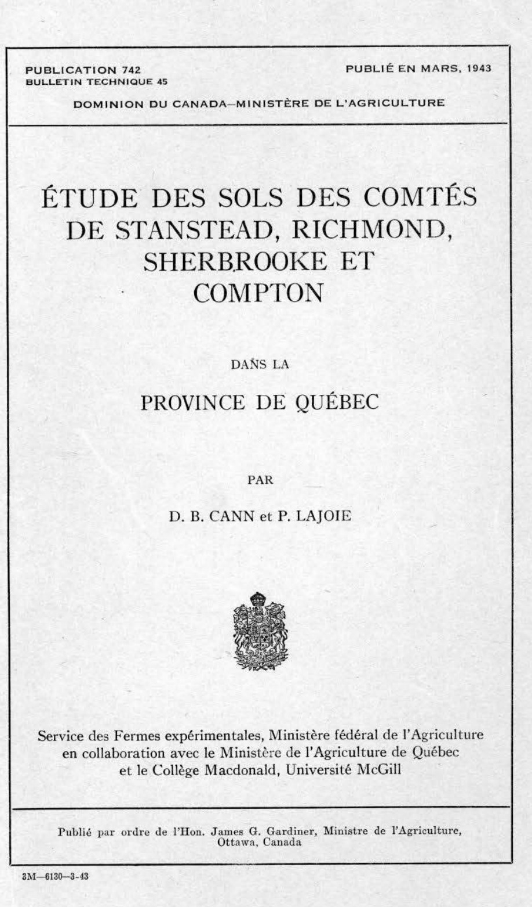
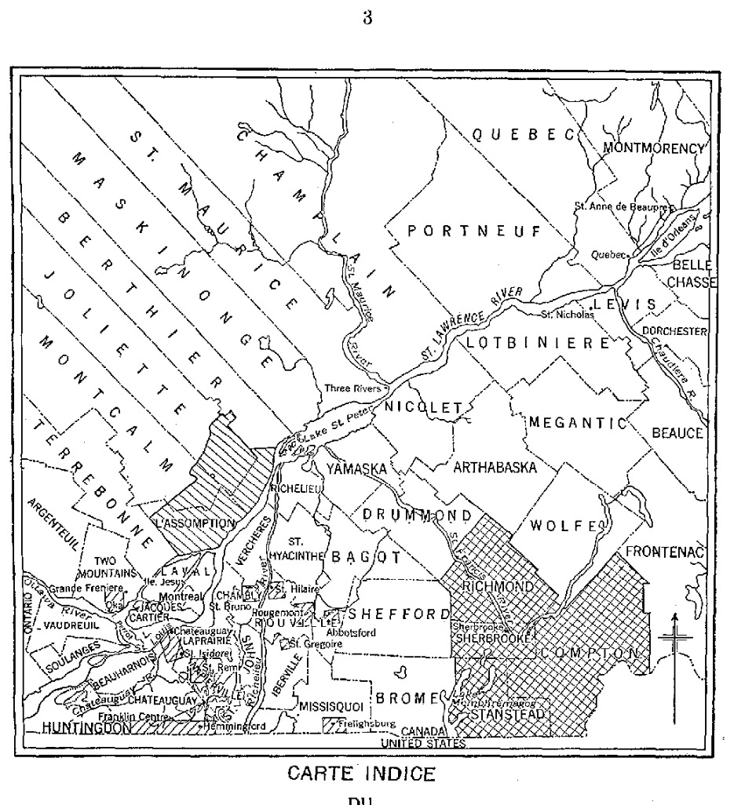
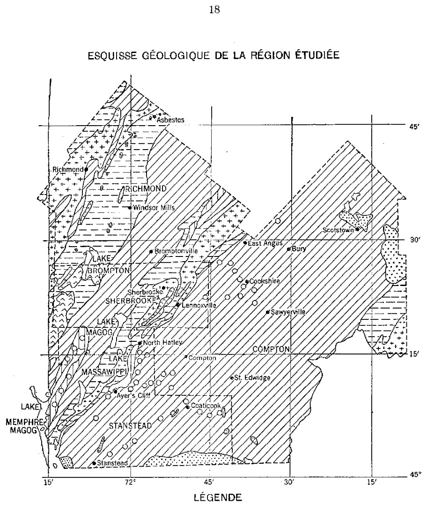
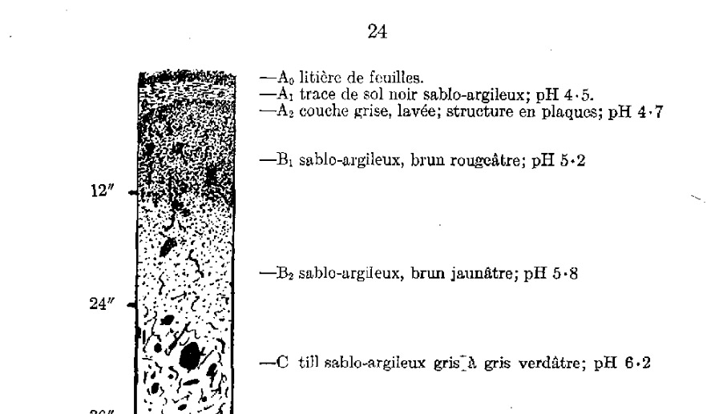

Étude des sols des comtés de Stanstead, Richmond, Sherbrooke et Compton
Agriculture et Agroalimentaire Canada (SISCan) — Transcription numérique haute fidélité
Table des matières (7 séries de sols répertoriées)
PUBLICATION 742 BULLETIN TECHNIQUE 45
PUBLIÉ EN MARS, 1943
DOMINION DU CANADA—MINISTÈRE DE L'AGRICULTURE
ÉTUDE DES SOLS DES COMTÉSDE STANSTEAD, RICHMOND,SHERBROOKE ETCOMPTON
DANS LA
PROVINCE DE QUÉBEC
PAR
D. B. CANN et P. LAJOIE

Service des Fermes expérimentales, Ministère fédéral de l'Agriculture
en collaboration avec le Ministère de l'Agriculture de Québec
et le Collège Macdonald, Université McGill
ÉTUDE DES SOLS DES COMTÉSDE STANSTEAD, RICHMOND,SHERBROOKE ETCOMPTON
DANS LA
PROVINCE DE QUÉBEC
PAR
D. B. CANN et P. LAJOIE
Remerciements
Les auteurs désirent exprimer leur reconnaissance à tous ceux qui les ont aidés dans l'exécution de ce travail et notamment aux suivants :- le Dr C. L. Wrenshall du Collège Macdonald qui a fait de nombreuses recommandations utiles; le prof. L. C. Raymond du Collège Macdonald et le Dr C. Frankton de l'Université McGill qui ont fourni des renseignements sur les aspects botaniques de la région; M. P. C. Stobbe et le Dr A. Leahey du Service des fermes expérimentales, Ottawa, qui ont donné des conseils précieux relativement à la classification des sols; le Dr R. T. D. Wickenden du Ministère des Mines, Ottawa; le Dr W. A. De Long du Collège Macdonald et M. D. A. Finlayson de la Station expérimentale de Lennoxville, qui ont fourni des renseignements sur la géologie, les récoltes, l'action des engrais chimiques et l'agriculture générale de la région.
Les auteurs ont également une dette de reconnaissance envers le personnel de la Station expérimentale fédérale de Lennoxville.
Les fonds nécessaires à la poursuite de cette étude ont été fournis par le Service des fermes expérimentales du Ministère fédéral de l'Agriculture et par le Ministère de l'Agriculture du Québec. Le collège Macdonald a pourvu les bureaux et les moyens du laboratoire nécessaires pour faire les analyses chimiques et physiques des sols. Le Ministère fédéral des mines et des ressources, la Division des relevés et du génie civil, le Service de l'hydrographie et des cartes ont fourni les cartes de base et surveillé la compilation et le dressage de la carte des sols.
La version française de ce bulletin est l'œuvre du Service de traduction du Ministère fédéral de l'Agriculture, sous la direction de M. C. E. Mortureux.

CARTE INDICE DU CENTRE DE QUÉBEC MONTRANT LE SITE DES RÉGIONS ÉTUDIÉES
Le premier rapport sur les sols de la région des cantons de l'Est de la province de Québec a été publié en 1930 par McKibbin et Pugsley (10). Il est dit dans cet ouvrage que la plupart de ces sols sont pauvres en fertilité, et les auteurs insistent sur la nécessité de faire une étude complète des relations existant entre les récoltes et les sols de la région. Un extrait de ce rapport est significatif :
“Qu'il nous soit permis d'insister sur le fait qu'une étude des sols de cette région et des autres régions de la province de Québec s'impose. Tant quelle n'aura pas été faite, les agriculteurs, pratiquants ou techniciens, resteront dans l'ignorance au sujet des facteurs fondamentaux qui affectent les sols, les causes des différences qu'ils présentent et les raisons de l'adaptation et de la non adaptation des récoltes. Lorsque ces faits seront connus et que les moyens d'y remédier auront été découverts, les problèmes de la culture pourront être résolus plus aisément et avec plus de certitude.”
La somme considérable de données relatives à cette région, recueillies dans le champ et au laboratoire et accumulées depuis 1930, fait encore mieux ressortir le besoin de cette étude. Il était nécessaire de faire une classification systématique des sols de la région et d'en dresser une carte afin de pouvoir en tirer la plus grande somme possible de renseignements utiles.
De concert avec le Ministère de l'Agriculture du Québec, le Service des fermes expérimentales fédérales a entrepris l'étude des sols de cette région en 1938. Commencée dans le comté de Stanstead, l'étude a été agrandie en 1939 et 1940 pour comprendre les comtés de Sherbrooke, Richmond et Compton, couvrant au total une étendue d'environ 2,200 milles carrés ou 1,410,210 acres.
Ce rapport est une description de ces sols, des facteurs qui règlent leur formation et de l'influence qu'ils exercent sur l'agriculture des quatre comtés. Une carte indiquant la distribution des types de sols et leur proportion relative est attachée au rapport. Chaque type est indiqué en couleur et des symboles définissant le type et la texture sont attachés.
Il est à noter que la carte des sols est le résultat d'une reconnaissance; elle indique l'endroit et l'étendue de chaque type de sol, mais elle n'est pas suffisamment détaillée pour noter les petites variations sur les fermes, prises séparément. Elle ne peut donc servir de guide pour l'achat de petits lots de terre, mais on peut la consulter pour l'utilisation de la terre sur des étendues assez grandes.
La première partie de ce rapport contient une description générale de la région, sa situation, son histoire, le climat, la géologie, la végétation et les aspects physiographiques. Ce sont là des facteurs qui affectent la formation et le développement des sols, ainsi que leur utilisation agricole. Dans la dernière partie du rapport, chaque type de sol est décrit en détail ainsi que ses variations, son égouttement et son utilisation possible. Enfin, le rapport discute l'exploitation des sols, leurs besoins d'engrais, leur adaptation aux récoltes et leur distribution générale.
L'érosion du sol et ses ravages sont un facteur important dans l'agriculture de cette région, où la forte hauteur de pluie et les pentes raides facilitent l'enlèvement des couches supérieures de sol riche. Heureusement, cette érosion n'a pas encore atteint des proportions aussi graves que dans certaines autres parties du Canada. Une étude de ce genre permet d'observer et de noter des exemples de cette action destructive et d'indiquer les types de sols et de relief qui sont plus exposés à l'érosion. L'effet de la pente, du mode d'utilisation de la terre et du type de sol sur l'érosion est discuté d'une façon générale.
Les résultats des essais de sols et de récoltes conduits dans cette région et l'effet des différents types de terre sont présentés, afin de renseigner les cultivateurs.
teurs sur la capacité des sols de leur ferme et de leur faire connaître les résultats obtenus par d'autres cultivateurs sur des types de sols semblables ou différents. L'agriculture a fait de grands progrès dans cette région en ces deux dernières décades et une étude de ce genre fait ressortir la possibilité d'un développement encore plus grand dans certaines voies et la nécessité de restreindre le développement dans d'autres voies.
Description de la région
SITUATION ET ÉTENDUE DE LA RÉGION
Les quatre comtés de Stanstead, Sherbrooke, Richmond et Compton décrits dans ce rapport forment partie de la région connue sous le nom des Cantons de l'Est de la province de Québec. La carte ci-jointe (Fig. 1) indique la situation exacte de l'étendue étudiée. Elle s'étend de l'est à l'ouest entre la montagne de Mégantic et le Lac Memphrémagog et du sud au nord entre la frontière internationale et le mont Shipton et elle couvre une superficie d'environ 2,200 milles carrés ou 1,410,210 acres, qui se décompose comme suit :
Chaque comté se compose d'un certain nombre de cantons; l'intention originale était de donner une étendue de dix milles carrés à chacun de ces cantons mais les difficultés rencontrées dans les premiers jours de la colonisation, obligèrent à morceler certains d'entre eux. Le comté de Stanstead, bordant le Lac Memphrémagog, se compose des cantons de Magog, Hatley, Stanstead, Barford et Barston; c'est le comté sud-ouest de la région. Le comté de Sherbrooke, composé des cantons d'Orford et Ascot, est le plus petit comté; il se trouve directement au nord du comté de Stanstead. Le comté de Richmond, qui comprend les cantons de Brompton, Melbourne, Cleveland, Stoke et Windsor, se trouve au nord du comté de Sherbrooke. Compton est le plus grand comté; il comprend les cantons de Compton, Clifton Hereford, Eaton, Westbury, Bury, Auckland, Ditton, Newport, Hampden et Lingwick. Il est situé à l'est des comtés de Stanstead, Sherbrooke et Richmond, qui forment sa frontière occidentale. Toute cette région se trouve dans cette partie de la province que l'on appelle les monts Apalaches. La pointe septentrionale de la région est à quelque 70 ou 80 milles au sud du Fleuve St-Laurent, et Sherbrooke, le centre approximatif de la région, est à environ 100 milles à l'est de Montréal.
POPULATION
La population totale des quatre comtés, relevée au recensement de 1931, était alors de 109,377 personnes, dont 32.9 pour cent, soit 35,996, vivaient sur des fermes. La distribution de la population est indiquée au tableau 1 ci-dessous.
TABLEAU I
Comté
Population
Nombre sur les fermes
Pour-centage
1911
1921
1931
Stanstead.....................................
20,765
23,380
25,118
8,595
34.2
Sherbrooke...................................
23,211
30,786
37,386
4,598
12.3
Richmond.....................................
21,282
24,067
24,956
10,428
41.7
Compton......................................
21,235
23,271
21,917
12,375
58.4
Total...................................
86,493
101,504
109,377
35,996
32.9
L'augmentation enregistrée dans la population du comté de Sherbrooke en 1921 et de nouveau en 1931, est due au développement de l'activité industrielle plutôt qu'à l'accroissement de la population agricole. Beaucoup de fabriques ont été construites pendant cette période et la certitude d'avoir des heures de travail moins longues et un salaire plus élevé ont attiré à la ville beaucoup de gens des fermes.
La race française est la race dominante, comme on le voit au tableau II, mais il y a plusieurs autres races. On parle les deux langues, le français et l'anglais, mais la population agricole est plus ou moins séparée en districts de langue anglaise et de langue française.
TABLEAU II
Comté
Français
Anglais
Autres
Stanstead
16,622
8,197
299
Sherbrooke
26,842
9,810
734
Richmond
19,613
5,128
215
Compton
14,683
6,847
387
Total
77,760
29,982
1,635
HISTORIQUE ET DÉVELOPPEMENT DE L'AGRICULTURE
Les notes sommaires qui suivent se rapportent au développement général de l'agriculture dans la région. Les pratiques agricoles dont les différents sols sont l'objet sont exposées dans une autre partie de ce bulletin.
A venir jusqu'à l'année 1791, l'étendue connue sous le nom de Cantons de l'Est était une vaste forêt vierge. Les seuls moyens d'accès étaient les sentiers tracés par les sauvages ou les cours d'eau, que l'on parcourait en canots. Les premiers véhicules furent introduits vers 1807 et les bœufs furent les premiers animaux de trait, car les chemins étaient à peine praticables à cette époque.
Vers la fin du dix-huitième siècle et au commencement du dix-neuvième, particulièrement entre 1800 et 1810, cette région devint la scène d'une grande activité. On se mit à défricher la terre, à construire des scieries et des maisons. Les premiers colons furent principalement des Loyalistes de l'Empire Uni, des soldats de la milice canadienne et des immigrants anglais, irlandais, écossais et américains tous attirés par la terre fertile et bon marché qui leur était offerte au nord de la frontière. Le système de tenure différait de celui du Canada français. On concédait l'étendue d'un canton à un certain nombre d'individus qui s'organisaient en une compagnie d'associés. Ceux-ci désignaient parmi eux un agent qui servait d'intermédiaire entre eux et le Gouvernement pour toutes les affaires du canton. Cet agent devait s'engager au nom de la compagnie à payer les frais d'arpentage, à ouvrir un chemin à travers la région, à construire des scieries et à obtenir les signatures de quarante individus qui signifiaient leur intention s'établir comme colons. Il semble que les premiers colons se soient établis vers l'année 1774.
En 1833, la British American Land Company, au capital de plus d'un million et demi de dollars, acheta de vastes étendues de terre dans cette région et y établit des immigrants venus des Iles britanniques. Cette compagnie aida beaucoup à ouvrir le pays; elle construisit des scieries, des écoles, des églises et des chemins. Les forêts vierges furent abattues et pendant un grand nombre d'années les produits de ces forêts furent la seule source de revenu d'un grand nombre de colons; on brûlait le bois pour en extraire la potasse que l'on expédiait à Trois-Rivières et Québec par la rivière St-François. Cette industrie était d'un si bon rapport qu'elle entraîna la destruction d'une quantité de bois de construction précieux.
TABLEAU III.—UTILISATION DE LA TERRE DANS LA RÉGION ÉTUDIÉE
Comté
Étendue totale de terre (acres)
Terre occupée (acres)
% occupé sur le total
Nombre de fermes
Nombre moyen d'acres par ferme
Terre défrichée améliorée
Terre occupée non améliorée
Différence en bois ou terre incultivable
8
Total
Moyenne par ferme
Pacage naturel
Bois
Marais
Total
Stanstead
288,820
241,448
83.6
1,769
136
87,652
49.5
89,430
59,353
5,013
153,796
47,372
Sherbrooke
150,220
91,603
60.9
877
104
39,652
45.2
21,826
27,796
2,329
51,951
58,617
Richmond
341,020
247,476
72.5
1,967
126
114,890
58.4
68,067
61,334
3,185
132,586
93,544
Compton
630,150
387,050
61.4
2,470
156
121,233
49.0
117,475
143,029
5,313
265,817
243,100
1,410,210
967,577
68.6
7,083
136
363,427
51.3
296,798
291,512
15,840
604,150
442,633
*Extrait de l'Annuaire statistique—Québec, 1934.
La principale occupation agricole est l'industrie laitière avec sa production de beurre et de fromage, mais la production du miel, du sucre et du sirop d'érable, du bois, du grain et du foin, occupe également une place importante dans l'agriculture de la région. L'utilisation de la terre, dans les comtés étudiés est indiquée au tableau III. Il est évident que les comtés de Stanstead et Richmond ont une population plus dense que ceux de Sherbrooke et Compton. C'est parce que la proportion de terre accidentée et incultivable est plus grande dans ces deux derniers qu'ailleurs. Le pourcentage de terre défrichée par ferme est plus élevé dans le comté de Richmond que partout ailleurs; un grand nombre de fermes sont établies le long des vallées fertiles de rivière et sont faciles à défricher dans ce comté. En ces dernières années beaucoup de terres ont été abandonnées dans les régions montagneuses. En général quelque 37·5 pour cent de la superficie de chaque ferme est défrichée et en culture, et quelque 50 à 60 pour cent de cette terre défréchée est en foin, le reste est en récoltes cultivées. La terre non améliorée se compose généralement de pâturage naturel et de bois.
Le tableau IV fait voir l'étendue et la distribution des récoltes dans l'étendue examinée en 1931 et 1940. La tendance générale de la culture a été de réduire l'étendue en foin et d'augmenter celle de maïs d'ensilage et de racines. Une partie de la terre à foin s'est épuisée; elle sert de pacage ou retourne à l'état de forêt. Un développement intéressant est l'augmentation de la culture de l'avoine dans tous les comtés et de l'orge dans les comtés de Stanstead et de Richmond. De même, la culture des pommes de terre paraît être en augmentation dans tous les comtés à l'exception de Stanstead, où l'on trouve une tendance plus forte à l'industrie laitière et par conséquent à la culture de plantes d'ensilage.
L'industrie laitière est bien développée dans cette partie des cantons et l'on y trouve un grand nombre de beaux troupeaux de vaches. Les principales races laitières sont les Jersey et Holstein, et il y a aussi quelques troupeaux d'animaux Guernesey et Ayrshire; dans le comté de Compton on trouve quelques troupeaux de Hereford de boucherie. La question des pâturages prend de l'importance dans un grand nombre de districts et il s'est fait beaucoup d'amélioration en ces dernières années par l'emploi d'engrais chimiques et de la puissance
TABLEAU IV.—ÉTENDUE EN ACRES ET DISTRIBUTION DES RÉCOLTES DANS LA RÉGION ÉTUDIÉE
Comté
Blé
Avoine
Orge
Maïs-fourrage
Foin et trèfle
Pommes de terre
Racines
Petits fruits
Stanstead—
1931..
1940..
81
70
9,670
11,060
743
1,680
692
1,130
62,695
50,270
1,297
1,040
591
830
27
……
Sherbrooke—
1931..
1940..
73
230
4,646
5,760
193
80
147
290
24,034
20,830
778
850
312
240
26
……
Richmond—
1931..
1940..
100
20
14,113
19,090
857
1,870
320
250
66,619
58,970
1,363
1,530
483
660
5
……
Compton—
1931..
1940..
77
230
13,892
15,140
1,278
920
252
610
77,739
73,190
1,649
2,380
867
930
23
……
Total—
1931..
1940..
331
550
42,321
51,050
3,071
4,550
1,411
2,280
231,087
203,260
5,087
5,800
2,253
2,660
81
……
Chiffres de 1931 extraits de l'Annuaire statistique du Québec—1934.
Chiffres de 1940 extraits du dernier rapport sur les récoltes—Ministère de l'Industrie et du Commerce, Québec—1940.
59333—2
alternée. La fabrication de beurre et de fromage est une industrie importante dans tous les comtés et il se produit aussi des quantités considérables de crème glacée et de lait concentré ou évaporé. Le tableau V établit une comparaison entre les années 1928 et 1938 au point de vue de la production de beurre et de fromage dans les quatre comtés. Il est évident que cette production s'est modifiée d'une façon radicale au cours de la période décennale. La fabrication du beurre a beaucoup augmenté dans le comté de Compton; à cause du défrichement rapide de la terre, du nombre croissant de vaches laitières et du tarif imposé sur la crème expédiée aux Etats-Unis, un commerce qui constituait autrefois une bonne source de revenu pour un grand nombre de cultivateurs. Dans le comté de Sherbrooke, l'augmentation de production du beurre est due en partie aux prix alléchants offerts pour le lait par les grandes laiteries de la ville de Sherbrooke. La fabrication du fromage a beaucoup diminué à cause de la baisse du prix de ce produit, mais elle s'est ranimée depuis la guerre.
TABLEAU V.—PRODUCTION DE BEURRE ET DE FROMAGE DANS LA RÉGION ÉTUDIÉE
* Extrait de l'Annuaire statistique du Québec, 1929 et 1939.
Les changements que nous venons d'indiquer ont été provoqués par toutes sortes de causes et notamment, le défrichement de la terre, les modifications apportées au genre d'exploitation agricole, les prix des aliments du bétail, la fertilité du sol, la demande de produits laitiers, etc. La baisse constante des prix du fromage a stimulé la production du beurre. La fabrication croissante de crème glacée a fait compensation dans une certaine mesure pour les bas prix du fromage.
Les produits de la forêt sont une source importante de revenu dans les quatre comtés. La quantité et la valeur des produits forestiers en 1931 sont consignées au tableau VI qui voici.
TABLEAU VI.—QUANTITÉ ET VALEUR DES PRODUITS FORESTIERS, 1931
La plus grande partie du revenu forestier vient du comté de Compton et le revenu de ces dernières années dépasse beaucoup les chiffres de ce tableau à cause de l'activité de l'industrie de la pulpe et du papier, de l'expansion de l'industrie du bâtiment et de la demande de navires et de matériaux de construction pour la guerre.
TRANSPORT ET MARCHÉS
Pour que l'agriculture soit prospère, il faut qu'elle dispose de moyens suffisants pour transporter les produits sur les marchés. Les quatre comtés à l'étude sont bien pourvus de routes et de chemins de fer, reliant les régions les plus peuplées avec les districts agricoles; si l'on jette un coup d'œil sur la carte on voit que la ville de Sherbrooke est un centre d'où rayonnent des chemins allant dans toutes les directions à travers les quatre comtés. Ceci s'explique aisément, car Sherbrooke est de beaucoup le plus grand centre de population et constitue un excellent marché pour le district.
Le grand chemin provincial No 1 relie Sherbrooke à Montréal et Québec par une chaussée à surface dure. Il passe également par les villes de Magog, Ascot Corners et East Angus. Un autre bon chemin gravelé, le No 28, se rend également à Québec et passe par Lennoxville, Birchton, Cookshire, Bury et Gould, tous de bons centres agricoles. Sherbrooke est également reliée à l'Etat du Vermont, au sud, par deux grands chemins, dont le premier (No 5), à surface dure, se dirige vers le sud à travers le comté de Stanstead, passant par les villages de Waterville, North Hatley, Stanstead et Rock Island. Le deuxième (No 22) est un chemin de gravier qui traverse la vallée de Coaticook en passant par Compton, Coaticook, Dixville et Stanhope. Au nord de Sherbrooke ce grand chemin est pavé et traverse Richmond pour aller à Drummondville. Le grand chemin No 27 se dirigeant vers le sud à partir de Cookshire et allant jusqu'à Beecher Falls, Vt., forme un émissaire pour les villages de Sawyerville, St-Edwidge et Hereford dans la partie est de la région. Enfin, plusieurs chemins intermédiaires relient les petits villages avec les villes.
La ville d'Ayer's Cliff est reliée au grand chemin No 1 par la route 50, qui court également vers l'est à travers le comté de Stanstead et par Barnston. La plupart des chemins secondaires sont en excellent état, mais dans la partie sud-est de la région beaucoup des routes ont une tendance à se dénuder sous l'action des pluies violentes qui tombent souvent pendant l'été.
Cette région est traversée par plusieurs lignes de chemin de fer. La voie du Québec Central se relie à celle du Boston and Maine à Beecher sur la frontière internationale et longe la vallée de Tomifobia jusqu'à Sherbrooke, puis se dirige vers le nord jusqu'à Québec en passant par Ascot Corners et East Angus. Le Chemin de fer National canadien traverse la vallée de Coaticook jusqu'à Sherbrooke, puis traverse Richmond jusqu'à Montréal et Québec. Le chemin de fer Pacifique canadien venant de Montréal traverse la région de l'ouest à l'est, passant par Magog, Sherbrooke, Lennoxville, Cookshire, Bury, Gould et Scotstown. Il maintient également une ligne d'embranchement à partir d'Eastman traversant le comté de Richmond pour se relier au C.N.R. à Windsor.
On voit que le transport des produits agricoles aux marchés ne présente aucun problème. Toutefois, les moyens de transport ne sont pas aussi bien développés dans la partie est de la région, et beaucoup de fermes se trouvent assez loin des points ferroviaires ou même des bons chemins. Cette région compte encore sur les produits forestiers pour une bonne partie de son revenu.
La ville de Sherbrooke est le plus grand marché pour les produits agricoles. En 1938, il s'y est produit quelque 86,000 gallons de crème glacée, en plus du beurre et des autres produits laitiers. Il y a plusieurs grandes laiteries dans la région.
TABLEAU VII.—TEMPÉRATURE ENREGISTRÉE À DIFFÉRENTS ENDROITS, MOYENNE DE 15 ANS, 1923-1937
Mois
Lennoxville (500')
Sherbrooke (700')
Brome (700')
East Angus (500')
Lac Mégantic (1,400')
Moyenne quoti- dienne
Maxi- mum
Mini- mum
Moyenne quoti- dienne
Maxi- mum
Mini- mum
Moyenne quoti- dienne
Maxi- mum
Mini- mum
Moyenne quoti- dienne
Maxi- mum
Mini- mum
Moyenne quoti dienne
Maxi- mum
Mini- mum
Janvier
14·1
57
–48
15·5
55
–29
15·5
57
–35
12·2
56
–44
13·0
52
–38
Février
13·6
53
–43
14·6
53
–31
14·0
51
–37
11·6
53
–40
11·5
64
–38
Mars
25·2
63
–30
26·1
65
–31
25·0
67
–36
23·2
60
–24
22·0
65
–35
Avril
39·0
82
3
39·4
81
7
38·1
80
0
38·2
83
– 2
25·1
77
0
Mai
51·2
89
23
52·5
90
25
51·4
88
22
50·6
90
21
49·2
85
20
Juin
61·6
93
25
62·9
95
34
61·0
92
31
61·5
93
30
59·0
87
32
Juillet
65·9
96
34
66·6
98
42
68·4
92
36
66·0
95
38
63·4
90
32
Août
64·4
97
30
64·5
94
37
62·5
92
33
63·5
94
36
62·0
92
37
Septembre
56·7
93
16
57·2
90
28
56·7
88
21
55·5
89
26
54·5
84
15
Octobre
45·2
85
13
44·8
82
18
44·7
78
11
44·7
85
13
42·2
79
10
Novembre
33·5
70
–16
39·1
75
– 8
33·2
68
–13
33·5
71
–13
30·5
70
–10
Décembre
17·1
57
–48
18·5
63
–39
17·5
65
–38
16·2
62
–44
15·4
60
–40
Annuelle
40·6
. . . .
. . . .
41·8
. . . .
. . . .
40·6
. . . .
. . . .
39·7
. . . .
. . . .
37·3
. . . .
. . . .
Données extraites de la statistique de la Division de météorologie du Ministère des Transports, Canada.
ville et une fabrique de lait évaporé. Magog et Coaticook dans le comté de Stanstead et Richmond dans le comté de Richmond sont les villes les plus grandes après Sherbrooke et offrent aussi de bons débouchés. East Angus, Brompton et Windsor avec leurs fabriques de papier et de pulpe, leur nombreuse population industrielle, consomment une grande quantité de produits agricoles venant de la ferme et de la forêt. Un autre grand marché est fourni par la ville minière d'Asbestos au nord du comté de Richmond. Il y a dans toute cette région un certain nombre de villages qui, à cause de leur valeur scénique et touristique, ont un grand afflux de population pendant l'été, constituant un débouché pour une quantité considérable de produits maraîchers. Il y a à différents endroits un certain nombre de coopératives agricoles qui conduisent et dirigent le commerce du lait, des bestiaux, des laines et d'autres produits de la ferme.
CLIMAT
Le climat est l'un des grands facteurs qui règlent le développement et la formation des sols et déterminent également dans une grande mesure les récoltes que l'on peut cultiver dans une certaine région. Le climat de la province de Québec est humide et tempéré. La hauteur de pluie relativement forte et les variations dans la température quotidienne accélèrent à un degré remarquable la décomposition ou désagrégation des matériaux rocheux.
Pour obtenir une idée d'ensemble des conditions de climat, nous avons noté la hauteur de pluie et la température à cinq endroits différents de la région ou adjacents à la région. Lennoxville, Sherbrooke et East Angus sont au centre de la région. Mégantic est juste en dehors, à l'est, et Brome à environ 15 milles à l'ouest. Les variations de température enregistrées à ces cinq postes météorologiques sont notées au tableau VII.
Les plus basses températures de l'hiver sont enregistrées à Lennoxville et les plus hautes températures d'été à Sherbrooke et Lennoxville. Sherbrooke et Lennoxville ont généralement les premières journées chaudes du printemps; viennent ensuite Brome, East Angus et Lac Mégantic. L'influence des étendues d'eau à Brome et au Lac Mégantic tend à modifier les températures de ces stations, tandis que Lennoxville, Sherbrooke et East Angus qui se trouvent dans la vallée de la rivière St-François ne sont pas influencées au même point par les grandes étendues d'eau. En général, la température diminue de l'ouest à l'est dans la région, mais la température moyenne quotidienne est à peu près la même pour tous les postes.
Si l'on consulte les données recueillies à Sawyerville, dans la partie est des comtés, on voit que la température du sol, à une profondeur de deux pieds, s'élève graduellement à partir de mai (45°-47°F), pour atteindre un maximum de 60°-65°F vers la fin d'août et elle retombe au chiffre du mois de mai vers la fin d'octobre. Ceci paraît indiquer que l'évaporation de l'humidité du sol atteint son maximum vers la fin d'août.
Les données de la condensation atmosphérique (hauteur de pluie et de neige) aux cinq postes sont présentées au tableau VIII. On voit que la condensation totale est plus forte à Brome que partout ailleurs; viennent ensuite Lennoxville, East Angus, Lac Mégantic et Sherbrooke. Ceci met en relief les écarts considérables que présente la hauteur de pluie dans les différentes localités, car Sherbrooke n'est qu'à quatre milles du poste de Lennoxville. On obtient des chiffres encore plus significatifs en comparant le pourcentage de pluie tombé pendant la saison de végétation. On voit par exemple que Brome reçoit 20.85 pouces ou 47.3 pour cent; Sherbrooke, 17.14 pouces, ou 45.4 p.c.; Lac Mégantic, 17.37 pouces, ou 44.9 p.c.; Lennoxville, 18 pouces, ou 44.3 p.c., et East Angus, 16.26 pouces, ou 41.6 p.c. du total de pluie tombé entre mai et septembre.
14
TABLEAU VIII.—CONDENSATION MOYENNE MENSUELLE À CINQ POSTES— MOYENNE DE 15 ANS (1923-1937)
Mois
Lennoxville
Sherbrooke
Brome
East Angus
Lac Mégantic
Janvier
3·83
3·56
4·21
3·01
3·95
Février
2·64
2·36
2·77
2·20
2·49
Mars
3·06
2·53
3·43
2·54
2·84
Avril
2·88
2·63
3·76
3·08
2·55
Mai
3·29
2·90
3·79
1·63
3·65
Juin
3·46
3·28
4·32
4·76
3·79
Juillet
4·22
3·91
4·72
3·08
3·33
Août
3·53
3·38
3·31
2·09
3·07
Septembre
3·50
3·69
4·71
4·71
3·50
Octobre
3·30
3·10
3·94
2·47
3·29
Novembre
3·73
3·47
4·00
6·18
3·25
Décembre
3·19
2·91
3·11
3·36
2·98
Condensation annuelle moyenne
40·63
37·70
44·07
39·11
38·60
Condensation moyenne pendant la saison de végétation
18·00
17·14
20·85
16·26
17·37
Données extraites de la statistique de la Division de météorologie du Ministère des Transports, Canada.
Sawyerville a enregistré 20 pouces de pluie pendant le même temps. Ceci montre que près de la moitié de la hauteur annuelle d'eau tombe pendant la saison de végétation et qu'elle est généralement à son plus fort pendant la dernière partie de juin et tout le mois de juillet. Cette forte pluie est peut-être avantageuse pour les récoltes, mais elle cause une grosse perte d'éléments de fertilité et beaucoup d'érosion. En certaines saisons, la pluie est excessive pendant l'été. En 1924, Brome a reçu 9·03 pouces de pluie en septembre et 6·03 pouces en juillet de la même année, tandis que Lennoxville enregistrait 8 pouces de pluie en juillet 1931 et 1938, mais en général la condensation atmosphérique est répartie de façon très égale d'un bout à l'autre de l'année.
La longueur moyenne de la période de végétation sans gelée est consignée au tableau IX. La durée de cette période sans gelée limite la production de certaines récoltes dans cette région. La saison moyenne la plus longue sans gelée est celle de Sherbrooke; viennent ensuite Lac Mégantic, East Angus, Brome et Lennoxville. Le district de Sherbrooke est en général celui où la gelée disparaît en premier lieu au printemps, mais les autres endroits suivent de près. En automne, on peut s'attendre à voir les premières gelées entre le 3 et le 12 septembre à Lennoxville, East Angus et Brome, et une semaine ou deux plus tard dans les autres centres. En une année quelconque, la différence d'une station à l'autre, peut être très faible, mais Brome et Lennoxville ont ordinairement la saison la plus courte.
TABLEAU IX.—LONGUEUR DE LA SAISON DE VÉGÉTATION SANS GELÉE (JOURS) MOYENNE DE 14 ANS, 1924-1937
Station
Dernière gelée enregistrée
Première gelée enregistrée
Date moyenne
Période sans gelée
Dernière gelée
Première gelée
Moyenne
La plus longue
La plus courte
Lennoxville
6 juin
31 août
23 mai
11 sept.
110
124
89
Sherbrooke*
25 mai
14 sept.
17 mai
28 sept.
134
157
113
Brome
16 juin
4 sept.
29 mai
17 sept.
111
140
90
East Angus
28 juin
4 sept.
27 mai
17 sept.
113
140
78
Lac Mégantic
4 juin
10 sept.
22 mai
23 sept.
124
148
101
* 1928-1937 seulement.
Données puisées dans les statistiques de la Division de météorologie, Ministère des Transports, Canada.
Le nombre d'heures de soleil enregistrées à Lennoxville est consigné ci-dessous. Il n'existe pas de données pour les autres centres, sauf pour Sherbrooke, qui a en moyenne 200 heures de soleil de plus que Lennoxville. La raison principale de cet état de chose est que le soleil est obscurci à Lennoxville par les brouillards épais, qui, pendant la plus grande partie de la matinée, remplissent la vallée de la St-François, en septembre et octobre, et au commencement du printemps, tandis que le poste de Sherbrooke, qui est plus élevé, reçoit plus de soleil.
HEURES DE SOLEIL — LENNOXVILLE (MOYENNE DE 15 ANS)
Janvier
73.4
Février
95.4
Mars
130.0
Avril
155.0
Mai
201.0
Juin
216.0
Juillet
240.0
Août
221.0
Septembre
154.0
Octobre
125.0
Novembre
61.0
Décembre
57.0
Total
1,728.8
En été les journées de chaleur sont fréquentes; en hiver le thermomètre descend souvent très bas, et il y a beaucoup de neige; la hauteur de pluie est considérable, surtout pendant la saison de végétation et elle abîme parfois les récoltes. Une circonstance à noter, c'est que la pluie tombe en plus grande abondance pendant les mois qui ont aussi le plus de soleil. Ceci s'explique par le fait que la plus grande partie de la pluie tombe pendant la nuit.
Il y a beaucoup de variations locales dans la hauteur de pluie, et par conséquent de différences locales dans la quantité de lavage. Au endroits plus élevés la terre a généralement suffisamment de pente pour que l'égouttement en soit assuré, et les sols en général sont bien égouttés. Aux hauteurs inférieures, les sols reçoivent l'égout des pentes plus élevées, et ceux qui n'ont pas suffisamment de pente ou une structure adéquate pour faciliter l'égouttement ont une tendance à devenir humides et froids. Dans ces sols froids, l'activité microbiologique est réduite au minimum, les procédés de décomposition sont retardés, l'aération se fait mal et la production des récoltes en souffre. D'autre part, les types de sols plus ouverts, comme les sols sablonneux et graveleux, peuvent avoir un égouttement excessif et ils sont parfois trop secs pour faire vivre une récolte. Dans ce cas, la pluie abondante peut être avantageuse en apportant suffisamment d'humidité pour assurer la végétation de la récolte pendant l'été.
L'effet des vents dominants exerce quelque influence sur la hauteur de pluie et l'évaporation dans la région, et par conséquent sur la formation du sol. Entre novembre et avril ou mai, les vents dominants à Sherbrooke soufflent du nord et du nord-ouest, et pendant l'été ils soufflent du sud et du sud-ouest. La neige est généralement plus abondante dans la région de Brome et du lac Mégantic qu'ailleurs, et ces centres ont un printemps tardif.
VÉGÉTATION
La végétation exerce un effet presque aussi important sur la formation du sol que le climat. Elle est réglée par plusieurs facteurs, notamment la température, l'altitude, le degré de pente, le degré d'ombrage, la pluie et la température, l'humidité, l'égouttement, l'aération et la fertilité du sol. Dans toute la région, les forêts d'arbres à feuilles décidues, composées d'érables, de hêtres, de bouleaux gris et de quelques ormes, se rencontrent surtout sur les pentes des plus élevées. Les pentes inférieures ont une végétation plus mélangée, composée d'érables, de bouleaux, de sapins baumiers, et de quelques pins, tandis que dans les régions mal égouttées, la pruche, (tsuga), le cèdre, (thuya) l'épinette noire, le mélèze, l'aulne et le saule sont, la végétation dominante.
La flore des pâturages varie beaucoup suivant le traitement dont le pâturage a été l'objet. Comme l'a fait remarquer Whyte (19), cette “récolte est réglée par l'homme”. On a laissé beaucoup de pâturages retourner à l'état de broussailles et ils sont couverts de petits bouleaux blancs et de peupliers. La spirée (Spiraea tomentosa), généralement connue sous le nom de hardhack, est très répandue dans la plupart des parties de la région, particulièrement dans les comtés de Stanstead et de Sherbrooke. Les graminées fourragères les plus communes sont l'agrostide commune ou blanche (Agrostis alba), la fétuque rouge (Festuca rubra), le pâturin du Kentucky (Poa pratensis) et la danthonie ou herbe de pauvreté (Danthonia spicata). D'autres graminées importantes sont le pâturin du Canada (Poa compressa), le mil ou fléole (Phleum pratense), le chiendent (Agropyrons repens), l'agrostide traçante (Agrostis stolonifera), la glycérie striée (Glyceria striata) et la flouve odorante (Anthoxanthum odoratum). Ces dernières graminées se rencontrent presque partout pas en grande quantité. L'agrostide coloniale (Agrostis tenuis) paraît être abondante dans les pâturages de la partie est de la région, mais pas ailleurs.
On voit beaucoup de légumineuses dans les meilleurs pâturages, et celle que l'on rencontre le plus fréquemment est le trèfle blanc (Trifolium repens). D'autres espèces sont le trèfle rouge (Trifolium pratense) et le trèfle jaune (Trifolium agrarium). Les pâturages font vivre également de nombreuses mauvaises herbes, parmi lesquelles les plus communes sont l'épervière orangée (Hieracium aurantiacum), l'achillée millefeuille (Achillea millefolium), la grande marguerite (Chrysanthemum leucanthemum), le fraisier de Virginie (Fragaria virginiana), le mouron à oreille de souris (Cerastium vulgatum), l'oseille des brebis (Rumex acetosella), la renoncule ou bouton d'or (Ranunculus acris), les laiches (Carex), les jones (Juncus), la prunelle commune (Prunella vulgaris), le chardon du Canada (Cirsium arvense), et le plantain commun (Plantago major). On y trouve également quelques petits fruits—framboises, mûres, etc.
PHYSIOGRAPHIE
TOPOGRAPHIE
Au point de vue du relief, cette région se distingue par trois chaînes ou rangées de collines anticlinales, assez parallèles, à environ 25 milles l'une de l'autre et traversant toute la région, du sud-ouest au nord-est. Ces collines ont été formées pendant le soulèvement des Appalaches. La plus haute est celle qui est à l'ouest de la région; on l'appelle la chaîne de montagne de Sutton; c'est un prolongement des Montagnes vertes du Vermont, elle contient de nombreux pics, dont le plus élevé est le Mont Orford, d'une altitude de 2,800 pieds. Cette chaîne pénètre la région par le coin nord-ouest du comté de Stanstead et se prolonge à travers la partie ouest du comté de Richmond.
La deuxième chaîne, moins accentuée, est connue sous le nom de chaîne de collines de Sherbrooke ou de Stoke. Elle prend naissance dans la partie sud-ouest du comté de Stanstead, où elle est appelée Bunker Hill, traverse le comté de Sherbrooke dans une direction nord-est où elle prend le nom de montagne de Massawippi et continue, sous le nom de montagne de Stoke, à former la frontière est du comté de Richmond. La rivière St-François traverse cette chaîne à Sherbrooke.
La troisième chaîne sur la frontière extrême est de la région n'est pas aussi bien définie, mais elle est formée principalement par la montagne de Mégantic, qui s'élève à 3,500 pieds au-dessus du niveau de la mer. Entre ces chaînes, la topographie varie; il y a des vallées à fond presque égal et de fortes ondulations. Toutes les rivières, sauf la St-François, ont une direction parallèle aux crêtes principales. La hauteur de cette région varie depuis 523 pieds sur les bords du lac Massawippi à 3,500 pieds au sommet de la montagne de Mégantic. En général, la terre est en pente du sud et du sud-est au nord et au nord-est. La partie sud-est des comtés le long de la frontière internationale est très accidentée et il n'y en a qu'une très faible partie qui soit propre à l'agriculture. Entre le sud et le nord de la région, on trouve des pentes accidentées, raides, des collines
ondulées, à surface lisse, et enfin une surface plane ou doucement ondulée, rompue seulement par les collines mentionnées ci-dessus, qui coupent diagonalement à travers la région. Les nombreuses rivières et les nombreux lacs éparpillés dans cette étendue lui donnent une apparence très disséquée. La plupart de ces lacs sont des centres de villégiature et constituent une source de revenu pour les habitants de la région.
ÉGOUTTEMENT
Les montagnes au sud et à l'est de la région le long de la frontière internationale forment la principale ligne de partage des eaux et la plupart des cours d'eau coulent vers le nord pour se jeter dans le fleuve St-Laurent. La plus grande rivière est la St-François et la plupart des rivières mentionnées ci-dessous sont ses tributaires; elles s'y jettent avant de sortir de la région. La St-François prend sa source dans le lac d'Aylmer, au nord-est de la région, et coule dans une direction sud puis nord, formant un cours en forme de U et traverse les vieilles crêtes pré-cambriennes à Sherbrooke et Richmond. L'un de ses tributaires, le Tomifobia, a sa source près de la collines Barnston dans le canton de Stanstead et coule vers l'ouest et le nord à travers les cantons de Stanstead et de Hatley pour se jeter dans le lac Massawippi. Au sortir du lac Massawippi, à son extrémité nord, elle devient la rivière Massawippi et coule dans une direction nord-est pour rejoindre la St-François à Lennoxville. La rivière Tomifobia se joint près de Ayer's Cliff à la Niger, qui prend sa source près de celle de la Tomifobia et coule vers le nord-ouest à travers les cantons de Barnston et de Stanstead. La rivière Coaticook a sa source dans l'Etat du Vermont et coule vers le nord et l'ouest à travers les cantons de Barford, Barnston et de Compton, pour se joindre à la Massawippi au sud de Lennoxville. Les rivières Moe et Salmon ont leur source à quelques milles l'une de l'autre dans le canton de Barford. La Moe coule vers le nord-ouest à travers les cantons de Barford, Clifton et Compton, et la Salmon coule également vers le nord-ouest, traversant les cantons de Clifton et de Compton pour se joindre à la Moe à Milby, d'où elle se jette dans la Massawippi près de Lennoxville. On voit par ce qui précède que la rivière St-François reçoit six rivières, qui se joignent toutes à elle en une seule rivière, la Massawippi, à Lennoxville. Ceci représente un bassin d'égouttement d'environ 770 milles carrés.
La rivière Eaton a sa source dans le canton d'Auckland et coule vers le nord-ouest à travers Sawyerville, où elle reçoit la Clifton venant du sud pour se jeter dans la St-François à East Angus. Dans le canton de Ditton, il y a une deuxième rivière Salmon, qui prend sa source près de Chartierville sous le nom de ruisseau Ditton et coule vers le nord pour rejoindre la St-François près de sa source au-dessous du lac Weedon. Les rivières Eaton et Salmon drainent une étendue d'environ 60 milles carrés. La Nicolet prend sa source à quelques milles de la St-François, mais elle coule vers le nord sur une distance de 80 milles pour se jeter dans le St-Laurent, passant par l'extrémité nord de la région étudiée. La Stoke a son origine dans les collines de Stoke et coule en direction de l'ouest pour se joindre à la Watopeka avant que cette dernière se jette dans la St-François à Windsor.
Deux rivières principales seulement se jettent dans la St-François du côté ouest; la Magog part du lac Memphremagog, traverse le lac Magog, puis coule vers l'est pour se joindre à la St-François à Sherbrooke. Le ruisseau Salmon prend sa source dans le canton de Brompton et se jette dans la St-François au-dessous de Richmond.
Il est évident que la St-François reçoit une grande quantité d'eau de tous ses tributaires dans cette région. Beaucoup de ces cours d'eau ont de fortes chutes, bonnes pour le développement de l'énergie électrique. Cette distribution d'énergie hydraulique a permis d'établir de nombreux moulins ou scieries dans le passé et a facilité également le mouvement des produits agricoles par voie d'eau. Aujourd'hui, un grand nombre de fabriques de pulpe et de papier ainsi que d'autres industries se procurent leur énergie motrice de la St-François.
ESQUISSE GÉOLOGIQUE DE LA RÉGION ÉTUDIÉE

Esquisse géologique de la région étudiée
LÉGENDE
SILURIEN
Calcaire, dolomites et ar-dolso du Helderberg inférieur
IGNÉ...
Diorite et syénite
ORDOVICIEN
Ardoises noires et grises et calcaire des rivières Trenton et Noire
Granit
PRÉCAMBRIEN
Schistes chloritiques, talciques et micacés, souvent quartzeux
S
Serpentine
CAMBRIEN
Argiles, grès et quartzite, un peu de calcaire
Calcaire
Ce grand réseau de rivières assure un bon égouttement du pays mais l'expose en même temps à l'érosion du sol. Les lourdes pluies sont fréquentes dans la partie sud-est de la région, le long de la ligne de faîte principale. Les cours d'eau se remplissent vite, débordent souvent, enlevant les chemins et les ponts et emportant la bonne terre de surface.
Plusieurs lacs importants de cette région tendent à modifier le climat de certains districts. Les plus grands sont les lacs Memphremagog, Magog, Massawippi, Brompton, Fraser, Bowker dans la partie ouest, et le lac Lyster et l'étang Wallace, le long de la ligne internationale, et les lacs McGill et Moffat dans la partie est. Avec tant de lacs et de rivières, le pays a une grande valeur scénique et on y trouve un grand nombre d'endroits de villégiature.
GÉOLOGIE.
Comme les sols sont le résultat de la désagrégation des roches, il est utile de connaître la formation des roches sous-jacentes afin de pouvoir interpréter l'origine et les caractères pédologiques et agricoles des sols que l'on y rencontre. Les cantons de l'Est ont été le théâtre de nombreux changements et de soulèvements, et il n'y a rien d'étonnant à ce que les sols soient variés et complexes. Cette région appartient à la chaîne des Appalaches, qui part du sud des Etats-Unis et traverse le Canada jusqu'à Terre-Neuve; les roches de ces formations sont parmi les plus anciennes que l'on connaisse.
A la fin de l'âge paléozoïque, les assises rocheuses sur lesquelles reposent les sols de cette région ont été soulevées et déformées. De longues périodes d'érosion ont suivi, égalisant la surface. Les preuves recueillies par les géologues indiquent qu'il y a eu plusieurs cycles d'érosions. Finalement, toute la région a été recouverte par une couche de glace de plusieurs milliers de pieds d'épaisseur. Les collines ont été dépouillées de leur couche de terre et tous les matériaux meubles ont été transportées, remalaxés par la glace et finalement déposés sous une forme ou une autre pour constituer les matières terreuses dont les sols actuels se composent.
Cinq systèmes distincts de roches ont été constatés dans la région et ils se classent comme suit:—
A. Silurien
B. Ordovicien
C. Cambrien
D. Pré-cambrien
E. Roches ignées et cristallines.
L'étendue et la distribution de ces systèmes dans la région sont indiqués sur le schéma ci-joint. En général, les formations vont du sud-ouest au nord-est suivant la direction des collines décrites précédemment. Les trois crêtes principales se composent de matériaux pré-cambriens, flanqués des deux côtés par d'étroites bandes de cambrien. Entre ces crêtes les roches sous-jacentes appartiennent au système ordovicien. On trouve dans la région plusieurs intrusions de granit dans l'ordovicien.
Le système silurien occupe de petites étendues. La plus grande de ces étendues entoure le lac Memphremagog d'une bande étroite de calcaire arénacéeux et micacés d'environ un demi à un mille de largeur. Il est évident, si l'on en juge par la nature très inclinée et plissée des couches et l'intrusion de nombreux filons, qu'elles ont été soumises à une grande action métamorphique depuis qu'elles ont été déposées.. Près de Stoke Centre, on trouve une deuxième étendue silurienne, où les couches fossilifères reposent sur des conglomérats schisteux durs et des ardoises gris-bleu. Vers le nord, le prolongement de cette formation produit les carrières de marbre de Marbleton et de Lime Ridge, juste en dehors de l'étendue couverte par cette étude.
La plus grande partie de cette région repose sur des roches ordoviciennes, dont la plus grande venue se trouve entre la colline de Sherbrooke-Stoke et la montagne de Mégantic. A ce système appartiennent les calcaires noirâtres et gris foncé, avec des épaisseurs considérables d'ardoises noires, bleues et grises
59333—3½
et un peu de grès. Quelques-unes des ardoises noirâtres et brunâtres sont tachées d'ocre; ces taches d'ocre proviennent de la décomposition d'une dolomie ferrugineuse. Souvent aussi les roches sont chargées de cubes de pyrite de fer. Dans cette région ordovicienne, les ardoises dans les trois premiers milles à l'est de la crête de Sherbrooke-Stoke sont en grande partie calcaires, mais le reste est complètement dépourvu de matière calcaire.
Une deuxième grande étendue de roches ordoviciennes, de cinq à six milles de largeur, s'étend au nord du lac Memphremagog, entre les roches cambriennes sur les pentes des collines. Ici la formation se compose de roches ardoisées de différentes couleurs, d'apparence souvent rayée, et les calcaires se bornent à des étendues limitées. On trouve près de Danville une étendue petite, très mélangée, où les calcaires noirs et les ardoises calcaires reposent en stratification discordante sur les roches cambriennes. Là où des intrusions de granit se rencontrent dans l'ordonnien, les gisements sont altérés près du point de contact, et les ardoises prennent une structure quelque peu gneissique ou schisteuse.
Les roches du système cambrien reposent en bandes étroites le long des côtes des collines principales et sont composées d'ardoises de différentes couleurs ainsi que de grès, souvent quartzitiques, de schistes quartzifères et de conglomérats.
Les roches cambriennes les plus à l'est traversent les cantons de Ditton et d'Emberton et se composent d'ardoises noires ridées et de grès schisteux. On voit sur bien des points des veines de quartz d'où l'on a extrait un peu d'or. Une deuxième étendue de roches cambriennes sur les flancs de la colline de Sherbrooke-Stoke comprend beaucoup de conglomérats à découvert. Sur le flanc ouest de la colline, les roches se composent de débris des vieilles collines dans une matrice schisteuse. Sur le chemin entre le lac Massawippi et Magog, ces roches reposent sur des schistes chloritiques verdâtres. Sur le côté est de la colline, au sud de Sherbrooke, le long de la montagne de Massawippi, se trouve une mince bande d'ardoises schisteuses, gris foncé et noirâtres, souvent plissées, ressemblant aux ardoises de Ditton et contenant des veines de quartz dont on a extrait de l'or.
La troisième région de roches cambriennes se voit le long des pentes de la chaîne de montagne de Sutton, à travers l'ouest des comtés de Sherbrooke et de Richmond. Ici les lits d'ardoise et de quartz apparaissent en stratification avec les schistes crystallins du pré-cambrien. Les ardoises sont de différentes couleurs; souvent coupées de veines de quartz. Les roches dans cette partie sont distribuées de façon irrégulière et très mélangées.
La distribution des roches pré-cambriennes est limitée aux trois grandes chaînes de collines déjà décrites. Les roches se composent principalement de matériaux schisteux gris verdâtres, souvent chloritiques et micacés. La partie est, près des frontières du Maine et du New Hampshire, se compose de granits verdâtres durs, avec des schistes chloritiques, micacés et talciques et des ardoises de talcaire lisses. Sur la crête de Stoke, les roches sont des schistes feldspathiques verdâtres, durs, avec quelques ardoises talciques. La montagne de Stoke se compose de felsite gneissique, de schiste feldspathique et d'un peu de diorite.
La géologie de la troisième région du pré-cambrien, l'arête anticlinale de la montagne de Sutton, est extrêmement compliquée et a causé beaucoup de confusion parmi les géologues. En général, l'axe se compose de schistes durs, gneissiques gris verdâtres, tandis que les parties extérieures sur les flancs est et ouest, sont d'une nature plus chloritique et peuvent être associées à des ardoises noires.
Les roches ignées ne se rencontrent qu'en petites masses détachées et l'on trouve six affleurements principaux de granit dans les cantons de Barnston et de Barford, le long de la frontière internationale, le canton de Hereford, près du village de Barnston, la montagne de Mégantic et près de Scotstown. On croit que le granit forme la fondation d'une partie considérable de cette région, mais il n'apparaît que lorsqu'il est exposé par la dénudation. On voit en plusieurs endroits des roches dioritiques, qui s'associent généralement aux roches du système cambrien. La bande la plus grande et la plus importante est celle qui
suit l'arête anticlinale de la montagne de Sutton à travers l'ouest des comtés de Sherbrooke et de Richmond. Quelques étendues serpentines se rencontrent dans les cantons de Melbourne, Cleveland et Shipton, et c'est dans cette région que se trouve la plus grande mine d'amiante du monde.
Cette complexité et cette variété de formation rocheuse sont la source d'un grand nombre de matériaux différents dans la formation des sols, ce qui porte à croire que les sols de cette région sont très variables au point de vue de la composition et de la constitution. Un résumé des matériaux principaux est donné dans le tableau ci-joint:
Matériaux formant le sol
Âge
Composition
Endroits de découverte
Pré-cambrien
Felsites gneissiques durs, gneiss granitique, schistes feldspathiques, micacés, chloritiques et talciques, schistes cystalins, un peu de diorite.
Chaînes des montagnes de Sutton Sherbrooke et Mégantic.
Cambrien
Ardoises de différentes couleurs, grès, schistes quartzifères, conglomerates, ardoises plissées.
Pentes inférieures des montagnes de Sherbrooke, Sutton et Mégantic.
Ordovicien
Calcaires noirâtres, ardoises noirâtres et bleuâtres, grès.
Section centrale entre les montagnes de Sherbrooke et de Mégantic.
Ardoises rubanées de différentes couleurs.
Région au nord du lac Memphremagog, entre les montagnes de Sherbrooke et de Sutton.
Calcaire noirâtres et ardoises calcaires.
Environ de Danville.
Silurien
Calcaires arénacés et micacés, ardoises micacées, fines et grossières.
Environs du lac Memphremagog et du lac Stoke.
Igné
Granit, diorite.
Régions clairsemées.
Les assises rocheuses sous-jacentes sont pour la plupart couvertes de débris glaciaires (drift) d'une épaisseur variable. Ces matériaux, distribués par l'action de la glace et de l'eau, forment la structure sur laquelle les sols actuels se sont développés.
GÉOLOGIE DE LA SURFACE
Toute cette région a été soumise à l'action des glaciers, peut-être même à plusieurs reprises. Antevs (1) est d'avis que la dernière couche de glace a mis 25,000 ans à se retirer de Hartford, Connecticut, jusqu'au nord de Cochrane, Ontario. Il y a des preuves que les petits glaciers de montagne ont exercé beaucoup d'effet sur cette région. Les dépôts de surface sont très mélangés et nous nous bornerons à en donner ici une description générale.
Ces dépôts peuvent être classés en moraines, boues glaciaires, dépôts lacustres et alluvionnaires récents. Il y a aussi de petites étendues de dépôts glaciaires, pétris à nouveau. Tous les matériaux dont les sols se sont formés ont été transportés de leur endroit d'origine, mais pas très loin en ce qui concerne les sols formés sur "till" glaciaire (argile à blocaux). C'est-à-dire que ce till contient une grande proportion de matériaux qui sont étroitement associés aux formations géologiques sous-jacentes. Le manteau original de débris laissé par les glaciers a depuis été trié par l'action des cours d'eau et quelque peu modifié.
La plus grande partie de cette région est recouverte d'argile à blocaux (till) sous forme d'une moraine broyée dont la profondeur varie depuis une mince couche jusqu'à plusieurs pieds d'épaisseur. La composition minérale de ces matériaux paraît être assez identique à celle des matériaux géologiques sous-jacents; parfois ces matériaux ont l'apparence de résidus. Ils ont été lavés, désagrégés et leur texture, leur couleur et leur composition originales ont été modifiées pour donner les sols actuels. La couleur du till varie de jaune clair à gris et gris verdâtre et il est souvent compact. L'apparence de la moraine broyée réfléchit son origine glaciaire. Par exemple, la région qui se trouve près de Scotstown est jonchée de roches granitiques provenant sans doute de la masse montagneuse de Mégantic à l'est et la région unie près de Orford Centre,
qui s'étend vers le nord sur une distance de plusieurs milles, est parsemée de petits lacs irréguliers, de régions mal égouttées et couverte de till glaciaire pierreux. Sur les collines plus hautes, le lit de roches est souvent exposé et dans bien des endroits les affleurements sont assez nombreux pour rendre la terre incultivable.
Les alluvions fluvio-glaciaires (outwash) sont éparpillés le long des cours des principales rivières, particulièrement le long de la St-François, entre Sherbrooke et Richmond. A Windsor Mills, ces dépôts forment de grosses collines de forme conique ou en crête, s'élevant de 50 à 100 pieds au-dessus de la plaine actuelle. Dans le voisinage de Danville et aussi le long du grand chemin au sud de Lennoxville, le gravier est ordinairement stratifié et recouvert de quelques pieds de sable fin et grossier, contenant de petites quantités de gravier. Il y a aussi des dépôts de gravier mal trié sous forme d'alluvions graveleux (osars ou eskars). On trouve des dépôts de gravier en plusieurs endroits du comté de Stanstead à une altitude de plusieurs centaines de pieds au-dessus du niveau actuel de la plaine exposée aux inondations. Le long des rivières Coaticook, St-François et de plusieurs des petites rivières, les alluvions sont déposés sur de la glaise lacustre, qui a souvent plusieurs pieds de profondeur. Ces dépôts varient en épaisseur d'une mince couche à deux ou trois pieds.
Les récents dépôts alluvionnaires sont caractérisés par des plaines plates qui s'étendent le long du cours des rivières. Généralement, ces étendues plates se composent de sable fin et grossier sur une profondeur de plusieurs pieds; elles sont vastes et propres à l'agriculture. On rencontre plusieurs dépôts d'argile lacustre dans toute la région; l'un d'eux se trouve sur la station expérimentale de Lennoxville. C'est une argile lourde, profonde et généralement mal égouttée.
Les auteurs ont puisé largement dans les rapports du Relevé géologique du Canada pour leurs renseignements sur la géologie de surface de cette région, la complétant de leurs propres observations dans le champ. Des études géologiques récentes de cette région (non publiées) semblent indiquer que la plupart des formations décrites ci-dessus se rapportent à la même époque, ne différant que par leur degré de métamorphisme.
Méthodes employées pour l'étude des sols et définitions
L'étude des sols consiste à examiner, à classer les sols dans le champ et à en dresser la carte. Tous les sols diffèrent en couleur, texture et composition des matériaux non désagrégés d'où ils ont été tirés, et ils réfléchissent les influences de climat et de végétation auxquelles ils ont été soumis. Les sols ont été examinés à fréquents intervalles et tous les horizons ou couches de chaque sol, de même que les matériaux de base ont été étudiés en détail et les différences de texture, de couleur, de structure, d'égouttement, de relief et de végétation ont été notées.
La méthode généralement suivie pour dresser la carte était la suivante: On parcourait en voiture tous les chemins de la région en s'arrêtant fréquemment pour examiner les sols, et souvent aussi pour faire de courtes traverses à angle droit du chemin. Lorsque les chemins traversant un certain secteur se trouvaient à une assez grande distance l'un de l'autre, il était souvent nécessaire de faire plusieurs traverses à pied. On prenait des notes sur le relief, l'égouttement et les caractéristiques générales des sols, et l'on faisait des descriptions détaillées des profils des mêmes types dans un livret. On pouvait toujours identifier exactement les limites entre les types de sols près des chemins, mais dans les prairies très boisées, les lignes étaient tirées d'après des observations faites à plusieurs points. Les données recueillies étaient inscrites sur des cartes de relevé topographique, ayant une échelle de un pouce au mille. Au moyen des données recueillies dans le champ, on dressait des cartes indiquant le site et l'étendue de chaque type de sol. Le relief peut être apprécié d'après la position des contours sur la carte.
Le genre d'étude décrit dans ce rapport est ce que l'on appelle l'étude de reconnaissance. Il ne permet pas de faire un examen détaillé, ni de relever sur la carte de très petites étendues, ou de relever exactement les limites du sol dans les régions très boisées ou montagneuses. La transition d'un sol à l'autre est
souvent lente, et dans ce cas, il faut tirer les lignes en tenant compte de l'importance agricole du sol en question. L'égouttement est l'un des facteurs les plus importants sous ce rapport.
Après avoir dressé la carte, on prélevait un échantillon de chaque type de sol en creusant un grand trou où le profil était typique du type de sol et en prenant un échantillon de chaque couche ou horizon génétique, y compris les matériaux de base. Ces échantillons étaient placés dans des bocaux de verre à couvercle hermétique, ou des contenants imperméables et portés au laboratoire où ils étaient séchés et analysés.
Méthodes analytiques.—Les méthodes employées dans l'analyse des sols, sauf celles qui sont notées plus loin, sont décrites dans la Méthode d'analyse de l'Association officielle des chimistes agricoles. Le phosphore assimilable a été déterminé par la méthode de Truog, Journal American Society Agronomy, 22, 1931, et la potasse assimilable par la méthode de Truog, Journal American Society Agronomy, 26, 1934. On s'est servi du colorimètre photoélectrique pour déterminer la quantité de phosphore total et assimilable.
Morphologie et genèse des sols
Les sols décrits dans ce rapport se trouvent dans la zone climatique, qui favorise le développement des sols fortement lavés, que l'on appelle podzols. Les podsols se développent dans des conditions de pluie et d'évaporation qui permettent l'infiltration dans la terre d'un gros pourcentage de l'eau tombée. Dans certains cas, les hautes températures et les grands vents peuvent exercer une influence modifiante en augmentant l'évaporation et en réduisant ainsi le lavage, mais dans la région à l'étude l'évaporation est généralement lente et il y a beaucoup de lavage. Les longs hivers pendant lesquels l'activité microbiologique et le lavage sont réduits au minimum, sont favorables à l'accumulation de matière organique à la surface du sol. Pendant l'été, cette matière organique devient très acide à cause du lavage des bases solubles qui sont entraînées dans les profondeurs du sol, dans le profil. Le développement d'un état très acide, non saturé, à la surface, l'acidité résultant de l'eau d'infiltration, font entrer en solution les composés de fer et d'aluminium. Ces composés sont entraînés encore plus loin dans le profil, souvent protégé par les matières organiques colloïdales, et lorsqu'elles atteignent une zone d'acidité plus faible ou d'autres conditions favorables, elles sont précipitées. Ce procédé de lavage et de précipitation résulte en la formation de couches ou d'horizons caractéristiques des sols podsols. Le procédé de podsolisation se fait plus vite dans les sols ouverts, à texture légère, que dans les sols plus lourds.
Dans un podsol bien développé, il y a, sous la couche de surface de débris organiques, une couche blanc-grisâtre lavée. C'est ce que l'on appelle l'horizon A2. La couleur est due à l'enlèvement par le lavage des composés de fer et d'aluminium, laissant une prédominance de silice. L'horizon B, dont la couleur varie de brun à brun foncé rougeâtre, se trouve directement sous l'horizon A2; c'est une zone d'accumulation des composés de fer et d'aluminium et des complexes solubles d'humus. Dans cette région elle se confond en passant par une couleur brun jaunâtre à l'argile à blocaux (till) non altérée, à une profondeur de 2½ pieds à 3 pieds.
Adkinson et McKibbin (2) ont démontré qu'une proportion de 45 à 55 p.c. de l'acidité de ces sols est causée par des acides minéraux, et que la proportion d'acide sulfurique dans ces acides est de 9 à 20 p.c. Malgré le fait que les bases sont faciles à enlever, une bonne partie des substances minérales originales restent, et ces substances deviennent lentement assimilables à mesure que la décomposition se poursuit. Ceci explique la végétation des plantes sur ces sols, quoique ces derniers soient fortement lavés. Le dépôt de bases dans l'horizon B porte à croire qu'il serait possible d'utiliser cette couche, et des essais de labour profond ont parfois donné de bons résultats. Nous donnons ici un schéma de sol podsolisé typique de cette région:
—A0 litière de feuilles.
—A1 trace de sol noir sablo-argileux; pH 4·5.
—A2 couche grise, lavée; structure en plaques; pH 4·7
—B1 sablo-argileux, brun rougeâtre; pH 5·2
—B2 sablo-argileux, brun jaunâtre; pH 5·8
—C till sablo-argileux gris à gris verdâtre; pH 6·2

A côté de ces podsols, il y a de petites étendues qui peuvent être classées comme sols podsoliques bruns, dans lesquels le lavage n'a pas été aussi prononcé à cause des conditions de climat ou de la nature des matériaux de formation, et il y a une meilleure distribution et une plus grande quantité d'éléments nutritifs pour les plantes. Ces sols se trouvent dans la partie extrême ouest du district et généralement à une plus faible altitude que les vrais podsols. La plupart d'entre eux révèlent une trace d'un horizon A2, et ils sont plutôt un type de transition que de vrais sols bruns podsolisés. La surface se compose d'une couche de pouce à 1 pouce de matière organique, reposant sur un horizon B brun ou brun jaunâtre foncé, qui se confond dans les matériaux de formation à une profondeur de 30 à 36 pouces. Il n'existe pas de couches distinctes comme dans les sols podsols et la transition de l'horizon B dans les matériaux de formation est graduelle. Les bases sont réparties d'une façon plus égale dans tout le profil et ces sols sont généralement meilleurs pour la culture. Un croquis d'un profil typique de cette région est donné ci-dessous:
—A0 litière de feuilles.
—A1 sablo-argileux, noir; pH 5·5
—A2 trace seulement
—B1 franc brun à sablo-argileux; pH 6·0
—B franc brun clair à brun jaunâtre foncé; pH 6·5.
—C Till gris; pH 6·8-7·0.
Les matériaux dont les sols proviennent jouent un rôle important dans le développement de ces sols et leur adaptation à la culture. La perméabilité du sol, c'est-à-dire la facilité avec laquelle l'eau et les racines des plantes le pénètrent, et sa structure, dépendent, dans une grande mesure, de la nature des matériaux originaux. Dans la région en question, les principaux sols bien égouttés formés sur till glaciaire sont représentés par la série de Becket, Berkshire, Greensboro, Ascot, Sherbrooke et Racine. Les sols Becket et Berkshire se trouvent sur terrains plus accidentés et ne sont pas aussi bons pour l'agriculture; cependant beaucoup des sols Berkshire sont cultivés. Les sols de Greensboro et Sherbrooke se trouvent sur la terre unie, ondulée et proviennent d'ardoises et de calcaires. Ce sont de bons sols agricoles et une grande partie de l'agriculture de la région se fait sur ces sols. La série d'Ascot et de Racine est tirée également de matériaux ardoiseux ainsi que de quelques grès. Ce sont donc des sols fortement lavés. On les cultive plus ou moins, mais l'Ascot est généralement interrompu par des affleurements rocheux et l'on s'en sert surtout pour le pâturage.
Les sols mal égouttés, développés sur till, sont représentés par la série Dufferin, Calais, Orford, Brompton et Magog. Les sols Dufferin et Calais proviennent de matériaux de couleur foncé et ils sont associés aux sols Greensboro. Lorsque l'égouttement est bon, on peut obtenir de bonnes récoltes de foin sur ces sols, mais le grain ne vient pas bien. Les sols Orford proviennent de matériaux qui contiennent beaucoup de serpentine. Il n'a en encore été développé que de très petites superficies. Les sols Magog et Brompton ont une surface plane ou doucement ondulée, l'égouttement est mauvais. Ils sont d'apparence très semblable, provenant d'ardoise et de grès, mais la Brompton se ressentent plus de l'influence du grès. De grandes étendues de ces types de sols sont défrichés et produisent du foin, du grain et de l'herbe de pâturage.
Les sols développés sur alluvions fluvio-glaciaires (outwash) sont tous bien égouttés, quelques-uns même excessivement. Ils proviennent d'une variété de matériaux déposés par les rivières des glaciers. Les sols Colton et Danby proviennent surtout de matériaux granitiques et gneissiques et sont très bien égouttés. Seuls les sols Colton sont utilisés pour l'agriculture, tandis que les Danby le sont surtout comme source de gravier, pour les chemins. Les sols Shiptin et Sheldon proviennent d'alluvions fluvio-glaciaires déposés sur argile lacustre et ne sont pas aussi bien égouttés que la série Colton ou Danby, mais ils retiennent mieux l'eau que ces derniers, ce qui les rend aptes à la production des récoltes. Ils ne sont pas aussi acides que les sols lavés et presque toute l'étendue de ces sols est en culture.
Les sols lacustres, plus lourds, sont représentés par la série Coaticook et Lennoxville. Ils sont bas et ont une surface plate; ce sont généralement de bons sols pour la culture à condition que l'égouttement en soit amélioré. Les sols de Coaticook se trouvent principalement le long de la vallée de Coaticook et sont sujets à une forte érosion. Les sols d'alluvion des terres de fond sont de formation très récente et n'ont pas de caractéristiques bien nettes de profil. Ils proviennent de toute une variété de matériaux et sont par conséquent très fertiles, mais les inondations auxquelles ils sont exposés font que l'on peut les cultiver de temps à autre. La série Milby est typique de cette catégorie. Les sols organiques de la région ne sont pas bien décomposés et appartiennent à la catégorie des tourbes. Ils sont faits de matériaux bruts, fibreux, généralement composés de laiches, et se trouvent dans les endroits mal égouttés, reposant sur une argile bleue ou des sables compacts. Il y a des affleurements rocheux dans toutes les parties de la région et quelques-uns des profils sont très minces.
Sols
Les sols de la région ont été classés en séries, types et phases. La série comprend tous les sols développés des mêmes roches-mères et présentent les mêmes horizons génétiques dans leurs profils, c'est-à-dire que toutes les séries
59333—4
sont semblables en ce qui concerne les matériaux de formation, la succession et la couleur des horizons, la structure, l'égouttement et le degré de relief. La série est généralement désignée par le nom d'une unité géographique, comme une montagne ou une ville se trouvant près du point où le sol est observé en premier lieu. Le type comprend tous les sols dont la couche de surface a la même texture dans une série. La phase d'un type de sol est une variation de type, ou dans lequel un facteur local, comme la quantité de pierres, le relief, l'égouttement ou l'érosion, a une importance pratique dans la détermination de la valeur agricole du sol. Le type de sol est l'unité principale pour la classification sur la carte.
Les sols ont été différenciés de la façon indiquée ci-dessous :
Différenciation des sols
A. Sols développés sur till glaciaire.
I. Till provenant de calcaire impur et d'ardoise.
(a) Bien égouttés.
Terre franche de Greensboro.
Terre franche mince de Greensboro.
Terre franche de Greensboro — phase très ondulée ou roulante.
(b) Imparfaitement égouttés.
Terre franche de Calais.
(c) Mal égouttés.
Terre sablo-argileuse (ou franche sablonneuse) de Dufferin.
II. Till provenant de shistes gris verdâtres précambriens.
(a) Bien égouttés.
Terre franche de Berkshire.
(b) Imparfaitement égouttés.
a. Légèrement podsolisés.
Terre franche de Blandford.
b. Non podsolisés — sous-sol compact.
ii Terre franche de Woodbridge.
III. Till provenant de matériaux schisteux renfermant beaucoup de serpentine.
Terre sablo-argileuse (ou franche sablonneuse) de Sherbrooke.
Phase de sous-sol lourd sablo-argileux de Sherbrooke.
VI.—Till provenant d'ardoises et de phyllades (schites argileux) non calcaires—Fin
(b) Imparfaitement égouttés.
1. Terre franche pierreuse de Magog.
2. Terre franche pierreuse et sablonneuse de Magog.
B. Sols développés sur alluvions fluvio-glaciaires (outwash).
I. Sols provenant de matériaux gréseux et ardoiseux.
(a) Bien égouttés.
1. Sables gras de St-François.
II. Sols provenant de matériaux granitiques et gneissiques.
(a) Bien égouttés.
a. Rencontrés sur osars (alluvions glaciaires sablonneux).
1. Terre franche sablo-graveleuse de Danby.
b. Rencontrés sur plaines d'alluvions fluvio-glaciaires.
1. Terre sablo-argileuse fine de Colton.
III. Sols déposés sur de l'argile lacustre et provenant de matériaux granitiques avec un peu de calcaires impurs et d'ardoise.
(a) Bien égouttés.
a. Fortement podsolisés.
1. Terre sablo-argileuse (ou franche sablonneuse) de Sheldon.
b. Modérément podsolisés.
1. Terre sablo-argileuse ou franche sablonneuse de Shipton.
C. Sols lacustraux.
I. Sols développés sur argiles et limons lacustraux.
(b) Imparfaitement égouttés.
1. Terre argilo-sableuse (ou franche argileuse) de Coaticook.
(c) Mal égouttés.
1. Terre argilo-sableuse (ou franche argileuse) de Lennoxville.
D. Sols développés sur plaines inondées et fonds de rivière.
I. Sols provenant de matériaux déposés également.
(a) Bien égouttés.
1. Sable fin de Milby.
II. Sols provenant de matériaux mal triés.
(b) Imparfaitement égouttés.
1. Sols d'alluvions non différenciés.
E. Sols organiques.
I. Sols provenant de dépôts organiques.
(b) Mal décomposés.
1. Tourbe grise (peat).
F. Types de sols divers.
1. Terre accidentée (incultivable), pierreuse.
2. Terre accidentée (incultivable), pierreuse—matériaux de sol d'Ascot.
3. Terre accidentée (incultivable), pierreuse—matériaux de sol de Becket.
4. Terre accidentée (incultivable), pierreuse—matériaux de sol de Berkshire.
5. Terre accidentée (incultivable), pierreuse—matériaux de sol de Greensboro.
59333—4½
TABLEAU X.—ÉTENDUE ET DISTRIBUTION DES TYPES DE SOLS
Type de sol
Stanstead
Sherbrooke
Richmond
Compton
Total
Acres
%
Acres
%
Acres
%
Acres
%
Acres
%
Sablo-argileux d'Ascot
17,720
6·13
10,390
6·92
33,630
9·86
2,250
0·36
63,990
4·54
Sablo-argileux schisteux d'Ascot
4,050
1·58
...
...
11,420
3·35
...
...
15,470
1·10
Franc pierreux de Becket
15,236
5·28
...
...
...
...
1,340
0·22
16,575
1·17
Franc de Berkshire
21,470
7·43
29,670
19·75
55,500
16·27
580
0·09
107,220
7·60
Franc de Blandford
...
...
350
0·23
8,540
2·45
330
0·05
9,220
0·65
Franc pierreux de Brompton
...
...
2,220
1·46
45,970
13·47
...
...
48,170
3·42
Franc graveleux pierreux de Brompton
...
...
...
...
1,440
0·42
...
...
1,440
0·10
Franc de Calais
27,200
9·42
...
...
...
...
52,860
8·39
80,060
5·68
Sablo-argileux, fin de Colton
8,110
2·81
3,390
2·26
4,280
1·26
4,910
0·78
20,690
1·47
Argilo-sableux de Coaticook
5,340
1·85
6,400
4·26
13,310
3·90
15,040
2·39
40,090
2·84
Sablo-graveleux-argileux de Danby
4,660
1·61
670
0·45
3,900
1·14
9,340
1·48
18,570
1·32
Sablo-argileux de Dufferin
35,800
12·40
1,660
1·11
1,260
0·37
59,840
9·50
98,560
6·99
Franc de Greensboro
51,280
17·76
...
...
...
...
105,020
16·67
156,300
11·08
Franc mince de Greensboro
5,030
1·74
...
...
...
...
2,460
0·39
7,490
0·53
Franc de Greensboro; phase très ondulée
9,444
3·26
...
...
...
...
178,360
28·30
187,804
13·32
Argilo-sableux de Lennoxville
...
...
240
0·16
...
...
260
0·04
500
0·04
Franc pierreux de Magog
29,870
10·31
31,210
20·78
40,360
11·85
51,640
8·19
152,880
10·84
Sablo-argileux, pierreux de Magog
...
...
...
...
...
...
4,290
0·68
4,290
0·30
Sable fin de Milby
2,830
0·98
3,040
2·02
4,150
1·22
7,780
1·23
17,800
1·26
Sablo-argileux d'Orford
720
0·25
14,340
9·55
12,560
3·68
...
...
27,620
1·92
Sablo-argileux de Racine
...
...
1,730
1·15
28,470
8·40
...
...
30,020
2·16
Argilo-sableux de St-François
...
...
...
...
7,340
2·15
...
...
7,340
0·52
Sablo-argileux de Sheldon
8,640
2·99
13,060
8·69
6,870
2·01
17,290
2·74
45,860
3·25
Sablo-argileux de Sherbrooke
...
...
3,040
2·02
...
...
46,670
7·41
49,710
3·53
Sablo-argileux de Sherbrooke — phase lourde du sous-sol
...
...
...
...
...
...
2,220
0·35
2,220
0·16
Sablo-argileux de Shipton
...
...
...
...
10,460
3·07
...
...
10,460
0·74
Franc de Woodbridge
10
0·003
...
...
...
...
100
0·02
110
0·01
Pierreux, accidenté-total
12,940
4·48
16,880
11·22
32,850
9·63
35,610
5·65
98,260
6·99
Matériaux du sol d'Ascot
...
...
...
...
930
0·27
...
...
930
0·27
Matériaux du sol de Becket
1,760
0·61
...
...
...
...
13,920
2·21
15,680
1·11
Matériaux du sol de Berkshire
7,420
2·57
15,990
10·64
31,800
9·27
3,870
0·61
58,880
4·18
Matériaux du sol de Greensboro
3,450
1·19
...
...
...
...
17,920
2·83
21,370
1·51
Tourbe grise
310
0·11
...
...
...
...
...
...
310
0·22
Sols d'alluvions non différenciés
2,650
0·92
3,140
2·09
4,640
1·36
4,550
0·72
14,980
1·06
Terrains marécageux
5,520
1·91
2,900
1·93
9,250
2·71
25,090
3·98
42,760
3·03
Lacs
20,190
6·79
5,930
3·95
4,150
1·22
2,340
0·37
32,610
2·31
Amas de déchets
...
...
...
...
670
0·23
...
...
670
0·05
Total
288,820
100·0
150,220
100·0
341,020
100·0
630,150
100·0
1,410,210
100·0
Les sols sont décrits en détail dans les pages suivantes et leur étendue et leur distribution sont données au tableau X.
SOLS DÉVELOPPÉS SUR TILL GLACIAIRE
Sols développés sur till provenant d'ardoise et de calcaire impur.
TERRE FRANCHE DE GRENSBORO.—La terre franche de Greensboro est le type principal de sol dans l'étendue étudiée. On la trouve dans les comtés de Stanstead et de Compton, et elle couvre de sa terre franche, mince et de sa phase fortement ondulée, quelque 25 p.c. de toute la région de 351,594 acres. Il n'existe pas de sol de ce type dans les comtés de Sherbrooke et de Richmond. Suit une description du profil indiquant la variation en profondeur des horizons:
Couche grise, cendrée; de profondeur variable; renferme quelques petites pierres; structure légèrement en plaque; pH 5·6.
Horizon
Variation en profondeur
Description
B1.......................
3 — 6 "
Terre franche brun rougeâtre foncé, meuble; plus foncée sous A2, devenant plus claire en profondeur; quelques pierres d'ardoise et de quartzite, pH 5.4.
B2.......................
6 — 10 "
Terre franche, couleur olive; friable; renferme de petites parcelles de roche calcaire noire, décomposée, de nature graphitique, pH 5.8.
Till sablo-argileux, ferme à compact, de couleur grise à gris verdâtre; contient du calcaire noir décomposé et un peu de phyllade; structure légèrement laminée, pH 6.8.
Le calcaire impur d'où ce sol provient se rencontre en petits fragments noirs dans le sous-sol; il a l'apparence d'un schiste graphitique, mou, qui s'effrite aisément entre les doigts. Les grosses pierres des matériaux non désagrégés font effervescence avec les acides. Il y a plusieurs affleurements de calcaire sur la terre franche de Greensboro, les plus marqués sont à Dufferin Heights, Burroughs Falls et près de Sawyerville. Ils se composent principalement d'ardoise foncé, entremêlées de calcaire ardoisier. Là où ce calcaire a été broyé dans les couches glaciaires, il a exercé quelque effet sur le sol, mais les affleurements actuels ont peu d'effet sur le développement du sol, car les couches sont inclinées à tel point que la chaux est entraînée par les eaux à de grandes profondeurs sans affecter le sol. Dans quelques petites régions, près des cours d'eau, le till a été déposé sur du gravier et ces régions sont un peu mieux égouttées que le sol normal. La végétation indigène se compose d'érables, de hêtres et de bouleau gris; dans les pâturages le sapin baumier et la spirée sont nombreux.
Les analyses chimiques et physiques des sols typiques de Greensboro sont données au tableau XIII. La teneur en matière organique, révélée par la perte sur incinération est plus élevée dans la surface des échantillons de terre vierge, mais distribuée de façon plus égale à travers les profils des échantillons de terre cultivée. En général, ces sols sont aussi bien pourvus de phosphore total que les autres sols élevés de la région, mais ce phosphore est souvent peu assimilable et une grande quantité est tenue sous forme organique. Au point de vue de la quantité de potasse ces sols soutiennent avantageusement la comparaison avec les autres sols de la région. De même que les autres types à l'étude, les sols de Greensboro sont plus riches en magnésium qu'en calcium. Leur caractère podsolique est bien révélé par la concentration des sesquioxydes de calcium et de magnésium dans les horizons inférieurs.
L'analyse physique révèle la texture excellente de ces sols. Ils contiennent suffisamment de gravier pour faire un sol assez ouvert et assurer un bon égouttement, et cependant une proportion de 80 à 90 p.c. du sol sans gravier se compose de limon et de sable, en proportions à peu près égales. Cette composition permet au sol de bien retenir l'humidité et en même temps de bien s'égoutter à l'intérieur.
Agriculture
— La couche de surface des sols cultivés de Greensboro est brun foncé sur la profondeur du labour et le sous-sol devient brun jaunâtre foncé. Par leur surface unie, ondulée et leur bon état mécanique, les terres franches de Greensboro sont aptes à porter toutes sortes de récoltes. Dans les comtés de Stanstead, la plus grande partie de ce type de sol est défrichée et cultivée depuis
50 à 75 ans, mais dans le comté de Compton, une bonne partie de la terre franche de Greensboro est encore couverte de forêts. Ce type ne contient pas assez de pierres pour gêner la culture, et l'on peut très bien se servir de machines de fermes; en général, quand on applique un engrais chimique et que la terre est bien préparée, tous les genres de récoltes qui mûrissent dans le climat de cette région peuvent être cultivées sur la terre franche de Greensboro. Les récoltes les plus cultivées sont le foin et le grain. La production moyenne de foin est de 1 à 1 tonne ½ par acre, mais certaines fermes disent avoir obtenu jusqu'à 3 tonnes par acre dans les bonnes années. L'avoine rapporte de 30 à 40 boisseaux par acre en moyenne, et l'on obtient en certaines années un rendement de 60 boisseaux par acre. Le maïs-fourrage rend en moyenne de 8 à 10 tonnes par acre; le sarrasin de 25 à 30 boisseaux, le blé de 18 à 20 boisseaux, l'orge de 28 à 30 boisseaux, les racines de 8 à 10 tonnes et les pommes de terre de 90 à 100 boisseaux par acre pendant une période d'années. La culture de la luzerne n'a pas bien réussi dans cette région.
De grandes étendues de la terre franche de Greensboro sont en pâturage, mais ces pâturages s'épuisent rapidement lorsqu'ils ne sont pas soumis à un bon système de puissance et fertilisés, et ils se recouvrent de danthonie ou herbe de pauvreté (Danthonia spicata). Dans le comté de Stanstead, les pâturages les mieux enherbés sont recouverts d'agrostide commune (Agrostis alba) et de pâturin du Kentucky (Poa pratensis), mais dans le comté de Compton, plus à l'est, l'agrostide ténue ou agrostide Coloniale (Agrostis tenuis) semble remplacer l'agrostide commune. En ces dernières années, on a fait quelques tentatives d'amélioration des pâturages par une puissance bien réglée et par l'emploi d'engrais chimiques. L'emploi d'un engrais 0-16-6 appliqué à raison de 200 livres par acre a donné de bons résultats et l'on continue les recherches sur ce problème. L'érosion du sol n'est pas un problème sérieux sur la terre franche de Greensboro, sauf sur de petites étendues où les pentes très raides ne sont pas protégées par la végétation. Dans ces endroits, l'emploi d'herbe à pousse serrée ou la plantation d'arbres aidera beaucoup à enrayer l'érosion du sol.
La phase mince de la terre franche de Greensboro s'associe à la terre franche normale; elle en diffère principalement par la profondeur et le proportion de calcaire noir décomposé et d'ardoise. On la rencontre principalement en petites étendues dans les comtés de Stanstead et de Compton, où elle couvre au total 7,490 acres. Le profil ressemble à celui de la terre franche normale, mais il repose généralement sur une assise de calcaire à une profondeur de 12 à 15 pouces. La végétation est semblable à celle de la terre franche de Greensboro; il y a des érables, des hêtres et des bouleau gris sur les étendues bien égouttées, et des épinettes et des cèdres blancs sur les étendues mal égouttées.
Agriculture
Le sol cultivé est une terre franche brune, meuble, à la profondeur labourable, et il contient généralement une quantité de fragments de schiste argileux. La surface est un peu plus accidentée que celle de la terre franche normale et les affleurements de roc sont nombreux; c'est pourquoi les sols défrichés de ce type sont généralement laissés en pâturage et c'est là peut-être la meilleure utilisation que l'on puisse en faire car ils sont exposés à l'érosion lorsqu'ils sont cultivés. La valeur agricole de ces sols est à peu près près la même que celle du sol normal de Greensboro, mais ils sont peut-être un peu peu meilleurs pour les pommes de terre.
La phase fortement ondulée de la terre franche de Greensboro se rencontre principalement dans le comté de Compton, où elle couvre une étendue de 178,360 acres ou 28.3 p.c. du comté. Il y a aussi quelque 9,000 acres de ce type dans le comté de Stanstead. Le profil ressemble à celui de la terre franche normale de Greensboro mais ce till est plus foncé que d'habitude et le sol est peut-être plus fortement podsolisé. Les analyses chimiques révèlent que ce type est fortement lavé, mais il est aussi bien pourvu d'élément nutritifs que la terre franche normale, sauf pour le calcaire, dont la proportion est faible.
Agriculture.—Cultivée, la phase fortement ondulée ou roulante a une surface semblable à celle de la terre franche normale et il y a peu de pierres pour gêner la culture. La topographie est montagneuse, accidentée, et les pentes sont plus raides que dans les autres sols de Greensboro. Ce type est donc plus sujet à l'érosion et exige plus de soins dans la culture des récoltes.
En quelques endroits la surface est rompue par de nombreux affleurements et elle est alors impropre à la culture. Il n'y a que 50 p. c. de ce type de sol qui soit défriché et on l'utilise surtout pour la culture du foin et les pâturages. Le foin rapporte de ½ à 1 tonne à l'acre en moyenne, parfois 2 tonnes sur de bons champs mais la qualité en est pauvre quand il n'est pas fertilisé. On cultive également du mil sur ce type de sol. Comme la plus grande partie des sols de ce type est assez élevée, ordinairement de 1,200 à 2,000 pieds, le mais n'y vient pas bien et il est difficile quelquefois de faire mûrir l'avoine sur les pentes supérieures. En général, les rendements ne sont pas aussi forts sur ce type de sol que sur la terre franche normale de Greensboro. On y trouve de nombreuses fermes abandonnées, qui retournent à l'état de forêt.
Terre franche de Calais
La terre franche de Calais provient des mêmes matériaux que les sols de Greensboro mais elle n'est pas aussi bien égouttée. La plus grande partie de ce sol se trouve dans le sud-est des comté de Stanstead et de Compton, où il couvre une superficie d'à peu près 80,000 acres. Suit une description d'un profil typique montrant les variations de profondeur des horizons:
Horizon
Variation de profondeur
Description
A0
0 — ½"
Epaisse couverture de feuilles.
A1
2 — 6"
Terre franche, noire, friable; structure s'émiettant; souvent bourbeuse lorsqu'elle est mouillée, pH 6.0.
B1
6 — 10"
Terre sablo-argileuse gris foncé à gris verdâtre; pleine de galets ou cailloux anguleux, pH 6.7.
B2
—
Non apparent.
C
15 — 80"
Terre franche à franche limoneuse, vert noirâtre ferme; mais non compacte; légèrement tachetée; laminée, structure vésiculaire; contient des morceaux de calcaire noir décomposé, pH 6.8.
La couleur verte de ce sol, même après qu'il a été séché, est sa caractéristique principale. Cette couleur paraît être causée par le broyage de la substance graphitique noire et son mélange avec les éléments constitutifs, de couleur plus claire. On ne trouve pas généralement de couche lavée dans ce sol.
Par sa composition chimique il est très semblable à la terre franche de Greensboro. Il contient cependant plus de phosphore total et assimilable que cette dernière et n'est pas aussi fortement lavé.
Agriculture.—Le sol de surface, lorsqu'il est cultivé, est une terre franche noire, jusqu'à la profondeur labourable. Ce type se rencontre sur les longues pentes des hautes collines, généralement à une altitude supérieure à 1,300 pieds et la pente en général est de 5 degrés environ. La végétation se compose d'érables de hêtres et d'épinettes. L'égouttement de surface suffit pour enlever tout l'excès d'eau, mais l'eau s'infiltre très lentement dans le sol. Ce n'est donc pas un sol bien égoutté, mais il l'est suffisamment pour pouvoir être cultivé, sauf dans quelques régions déprimées, de peu d'étendue. Le sol de surface, qui est riche en matière organique, contient beaucoup d'humidité.
C'est un excellent sol pour l'herbe; il produit de 1 à 2 tonnes ½ de foin, et de 30 à 40 boisseaux d'avoine par acre quand la terre n'est pas trop humide. Il est trop élevé et trop humide pour la culture du maïs, mais le millet y vient bien et est l'objet d'une grande culture. Il est mauvais pour le pâturage parce que la terre se crible de trous par le piétinement des bestiaux; dans la partie sud-est du comté ce Compton, où les pentes sont plus raides, il se produit de fortes érosions, qui rendent le sol impropre à la culture.
Terre sablo-argileuse (ou franche sablonneuse) de Dufferin. — Ce type de sol est assez semblable à la terre franche de Calais mais il moins bien égoutté et il est plus bas. Il se développe sur le même genre de till ou de couche glaciaire que les sols de Calais et de Greensboro et se rencontre dans tous les comtés, où il couvre une étendue de 98,000 acres. Suit une description d'un profil indiquant la variation en profondeur des horizons :
Sablo-argileux fin, gris foncé; de profondeur variable, pH 5·8.
B1........................
5 —10"
Terre franche, jaune foncé à olive; marbrée; ferme mais non compacte; renferme des plaques de calcaire non décomposé; pH 6·0.
C..........................
15 —90"
Terre franche de couleur olive foncé à gris verdâtre; marbrée ou tachetée; structure légèrement laminée; ferme à compact; pH 7·0.
Peut faire effervescence avec les acides à une profondeur de 48-58 pouces de surface.
Le sol cultivé a une surface sablo-argileuse noire sur la profondeur labourée, qui est souvent rayée de plaques grises provenant de l'horizon A2. A en juger par les données analytiques reproduites dans le tableau XIII on voit que la surface de ce sol présente plusieurs traits caractéristiques. Il est remarquable par sa haute faculté d'absorption d'eau et sa richesse en matières organiques d'où il tire une forte proportion d'azote et de phosphore, principalement sous forme organique. La quantité de calcium est aussi très élevée, plus élevée dans tout le profil que dans les sols de Greensboro et de Calais. Comme l'égouttement est mauvais, le phosphate soluble de la surface tend à s'accumuler dans les horizons inférieurs en plus forte proportion que dans les sols bien égouttés. La végétation se compose de cèdres, (thuyas) de pruches, d'épinettes et de quelques peupliers.
Agriculture. — La forte hygroscopicité de ce sol — c'est-à-dire sa faculté de retenir l'eau — le tient froid pendant de longues périodes de temps, et l'activité microbiologique est retardée de ce chef; sa surface plate en rend l'égouttement difficile. Son état physique s'améliore avec la culture, mais la circulation latérale de l'eau dans le sol est très lente et il est souvent nécessaire, pour bien l'égoutter, de poser les drains très rapprochés l'un de l'autre. Le labour rompt l'horizon dur A2 et facilite l'infiltration de l'eau.
Le sol sablo-argileux de Dufferin est employé surtout pour la production de foin et d'herbe de pâturage. Le foin rend environ une tonne à l'acre en moyenne, mais dans la partie est du comté de Stanstead, il y a quelque étendues bien développées où l'on obtient de très bonnes récoltes de trèfle, de mil et de grain,
1. Surface onduleuse de la terre franche de Greensboro. 2. Profil de la terre franche. 3. Profil intact de la terre franche de Woodbridge; remarquer l'absence de couche grise lavée et la présence du sous-sol compact.
1. Profil vierge de la terre franche argileuse de Coaticook. 2. Terre franche pierreuse de Magog. Remarquer la couche lavée. Le sous-sol se compose d'une terre sablo-argileuse à franche, gris jaunâtre marbrée. 3. Profil de la terre franche de Calais. Ce profil a une couleur vert foncé. 4. Profil de la terre franche sablonneuse fine de Colton.
1. Alluvions fluvio-glaciaires déposés dans la vallée de la St-François. Sols de Berkshire sur les pentes plus élevées. Sols de Sheldon dans la vallée.
2. Ferme abandonnée sur pente de colline très érodée.
3. Relief de la terre franche de Calais.
Profil de la terre franche de Berkshire
Affleurements d'ardoise lardée de calcaire d'où les sols de Greensboro, Calais et Dufferin sont développés.
Profil de la terre sablo-argileuse (ou franche sablonneuse) de Dufferin.
et les rendements dépassent ce chiffre. Les pâturages sont généralement pauvres et renferment une forte proportion de laiches, mais on y voit un peu de trèfle blanc et ces pâturages rendent très bien après avoir été fertilisés. Dans le voisinage de Sawyerville, les céréales ne semblent pas s'accommoder de ce type de sol; elles restent rabougries et souvent le grain ne se forme pas.
Sols développés sur till (dépôt glaciaire erratique) provenant des schistes pré-cambriens.
TERRE FRANCHE DE BERKSHIRE.
La terre franche de Berkshire se rencontre principalement dans le comté de Richmond et dans quelques petites parties des autres comtés et couvre une superficie de 107,000 acres, ou 7.6 p.c. de l'étendue totale examinée. Suit une description d'un profil avec les variations de profondeur des horizons:
Sablo-argileux fin, gris; souvent absent; structure légèrement en plaques, pH 5.2.
B1
1 — 1″
Terre franche, couleur café foncé; souvent absente; pH 5.8.
B2
8 — 12″
Terre franche meuble jaune foncé à brun; floconneuse; quelques pierres; plaques de racines plus foncées, pH 6.3.
B3
8 — 10″
Terre franche jaune, floconneuse quelques pierres; ferme, pH 6.5.
C1
5 — 8″
Till modifié sablo-argileux, gris jaunâtre compact, modifié; pH 6.5.
C2
15 — 30″
Till compact, gris foncé; renferme des pierres de schiste gris verdâtre, pH 6.8.
La terre franche de Berkshire ressemble en apparence à la terre franche de Greensboro, mais elle provient de matériaux différents et n'est pas généralement aussi fortement podsolisée que les sols de Greensboro. Dans l'étendue examinés, c'est plutôt un sol de transition entre les podsols et les sols bruns podsoliques.Le degré de lavage varie dans les différents endroits. Dans la partie sud-ouest du comté de Richmond et la partie ouest du comté de Sherbrooke, le sol est peu profond et présente de nombreux affleurements de roche, ce qui le rend impropre à la culture; dans la voisinage de North Stoke, ce type est souvent intimement mélangé avec les sols d'Ascot. La couverture d'arbres se compose d'érables de bouleaux gris, de bouleaux jaunes, de hêtres, d'ormes et de quelques épinettes.
Il est évident, à en juger par les analyses du tableau XIII, que ces sols diffèrent très peu de ceux de Greensboro au point de vue de la composition. Ils renferment plus de calcium et sont moins lavés et la distribution d'azote, de phosphore et de potasse est plus égale dans le profil que dans les sols de Greensboro.
Agriculture.—Le sol cultivé se compose d'une terre franche brune, jusqu'à la profondeur labourée, et repose sur une terre franche jaune, friable. Seules les étendues à surface plus unie sont cultivées; les pentes plus raides sont pierreuses et généralement en forêts, et le bois est une source de revenu sur ce type de sol. Les rendements de foin et de grains sont variables, plus ou moins élevés suivant la façon dont le sol est cultivé. Le mil et l'agrostide rendent de 1 à 1 tonne de foin par acre et l'avoine de 30 à 35 boisceaux par acre. On
y cultive un peu de maïs et de pommes de terre, mais non sur une échelle commerciale; ces récoltes viennent bien. Les pâturages que l'on rencontre sur ce sol contiennent beaucoup d'agrostide traçante, de pâturin du Kentucky et de danthonie (herbe de pauvreté). Dans les régions négligées, les pâturages se couvrent de spirées et de jeunes bouleaux. Il n'y a qu'une très petite partie des sols de Berkshire qui soient propres à la culture dans la région examinée et le mode d'exploitation principal est le pâturage; on devrait remettre en forêt quelques-unes des parties défrichées.
Terre franche de Blandford.—Il n'y a très peu de terre franche de Blandford dans la région examinée, mais on en trouve de petites étendues dans trois des comtés. Elle se voit surtout dans le comté de Richmond, où elle couvre une superficie de 8,540 acres. Ce type se trouve au-dessous du niveau général des sols de Berkshire et occupe les régions plus égales. Suit une description d'un profil typique, montrant la variation générale dans la profondeur des horizons:
Horizon
Variation de profondeur
Description
A0.....................
0 – ½"
Litière de feuilles.
A1.....................
½ – 1"
Sablo-argileux, de couleur brun foncé à noir; structure faible, s'émiettant; pH 5·2.
A2.....................
......
Ordinairement absent ou seulement une trace.
B1.....................
5 – 7"
Terre franche brun foncé à brun jaunâtre; quelques pierres de grès et de schiste, pH 5·6.
B2.....................
12 – 16"
Terre franche brun jaunâtre clair à olive; friable, presque floconneuse; pierres de grès, d'ardoise et de schiste; pH 5·5.
C.....................
15 – 30"
Sablo-argileux, compact, gris foncé à jaune clair; légèrement marbré; renferme de petits fragments anguleux de schiste, pH 5·7.
Dans beaucoup d'endroits, l'horizon B1 devient brun rougeâtre et l'on trouve dans le profil beaucoup de schiste ardoisier foncé. La végétation se compose presque entièrement d'érables et de bouleaux.
Agriculture.—Le sol cultivé est une terre franche brune, jusqu'à une profondeur de 5 à 7 pouces, où il se confond dans un sous-sol à couleur plus claire et de la même texture. L'égouttement est bon, sauf en quelques endroits où le sol est mince et repose sur un sous-sol compact ou quand un lit de roche se trouve près de la surface. Ce sol paraît être très bon pour la production d'herbe, et l'on y fait d'excellentes récoltes de foin. Le rendement de foin est de 1 à 2 tonnes par acre et celui du grain (avoine) de 35 à 50 boisseaux lorsque la terre est bien cultivée. Le trèfle réussit sur ce sol, et la luzerne y vient bien lorsque la fertilisation et les procédés de culture sont bons. Les pommes de terre rapportent plus de 100 boisseaux à l'acre et le maïs paraît aussi donner une bonne récolte; ce type de sol se prête à une culture aussi diversifiée que les sols de Greensboro et il est probablement supérieur à ces derniers pour la production de l'herbe. Beaucoup des pâturages sont négligés et se remplissent de spirées, les principales graminées sont l'agrostide, le pâturin du Kentucky et la danthonie.
Terre franche de Woodbridge.—Cette terre n'a pas beaucoup d'importance dans la région examinée et ne couvre que 100 acres du comté de Compton, en grande partie couverts de forêts. Le profil décrit dans le tableau ci-dessous est typique des sols de Woodbridge et indique la variation générale de profondeur des horizons:
Horizon
Variation en profondeur
Description
A0
0 — 1 "
Litière de feuilles et racines en-chevelrées.
A1
½ "
Terre franche noire; structure friable, pH 4·0.
B1
4 — 6 "
Terre franche brun gris à brun; structure granuleuse; quelques pierres de grès et de schiste; pH 4·7.
B2
7 — 10 "
Sablo-argileux jaunâtre clair; ferme; pH 5·1.
C
15 — 38 "
Sablo argileux compact, gris jaunâtre; marbré; pierres de grès et de schiste; pH 5·6.
Ces sols sont acides et leur caractéristique principale est la compacité de leur sous-sol. L'égouttement des horizons supérieurs est assez bon, mais l'eau passe par-dessus le sous-sol compact, qui est imperméable aussi bien à l'eau qu'aux racines. La couverture d'arbres se compose d'érables, de bouleaux, de frênes, de tilleuls et de quelques pins blancs.
Agriculture. — Le sol cultivé développe un sol de surface brun dans l'épaisseur labourable, il est plus foncé sur quelques-unes des pentes plus raides à cause d'un meilleur égouttement et peut-être aussi à cause de l'érosion. La surface est légèrement en pente, mais on rencontre quelques pentes raides. Les sols défrichés de Woodbridge sont bons pour l'herbe, mais ils ne conviennent pas aussi bien pour d'autres récoltes, spécialement celles dont les racines s'enfoncent profondément. Ils fournissent un assez bon pâturage d'agrostide, de pâturin du Kentucky, de danthonie et d'un peu de trèfle blanc.
Sols développés sur till provenant de matériaux schisteux contenant beaucoup de serpentine
Terre sablo-argileuse (ou franche sablonneuse) d'Orford. — La terre sablo-argileuse d'Orford est le seul type de sol dans cette catégorie. Les plus grandes étendues se rencontrent dans les comtés de Sherbrooke et de Richmond, où le sol longe les élévations inférieures de la chaîne de montagne de Sutton, couvrant une superficie de 27,000 acres. Le profil décrit ci-dessous indique la variation dans les horizons du sol sablo-argileux d'Orford:
Horizon
Variation en profondeur
Description
A0
0 — 1 "
Matière organique noire, semi décomposée.
A1
½ — 1 "
Sablo-argileux noir; pH 4·8.
A2
½ — 1 "
Couche lavée de sablo-argileux gris; pH 4·8.
B1
2 — 4 "
Franc jaune foncé à ocre; pierres de différentes grosseurs; pH 4·9.
B2
8 — 10 "
Sablo-argileux blanc grisâtre; pierres de diorite et de serpentine; marbré; pH 6·4.
B3
6 — 12 "
Sablo-argileux graveleux et compact, gris foncé; marbré; pierres de diorite et de serpentine; pH 6·8.
C
15 — 20 "
Till sablo-argileux, graveleux, gris foncé franc; quelques grosses pierres; pierres de serpentine, quartz et schiste ardoisier; pH 6·8.
Ici le till contient beaucoup de serpentine, ce qui exerce un effet sur la composition chimique du sol. La caractéristique principale de ce sol est son horizon B2 de couleur blanchâtre, qui, en certains endroits, ressemble à une couche lavée. On voit par le tableau XIII qu'il existe une différence marquée dans la composition chimique entre les trois horizons supérieurs et les trois inférieurs. On constate un changement subit dans le pH, une augmentation du phosphore et une augmentation sensible du magnésium. Il y a beaucoup de différence dans la composition chimique des horizons B1 et B2, qui porterait à croire qu'il y a là quelque chose de la nature d'un profil enfoui.
Agriculture.—Il n'a encore été cultivé que de petites étendues de ce sol. La plus grande partie est encore en bois, la végétation principale se compose d'un peuplement d'érables, de bouleaux, d'épinettes et de peupliers. Ce type de sol est très pierreux, mais les pierres sont petites et ne gênent pas la culture. Là où il a été cultivé, il présente à la surface une terre sablo-argileuse de couleur brune à la profondeur labourable et il soutient avantageusement la comparaison avec les sols Berkshire en tant que sol herbeux, mais nous n'avons que peu de renseignements sur sa adaptation pour d'autres récoltes. Il semble que sa teneur élevée en magnésium pourrait nuire aux autres récoltes, particulièrement lorsque l'horizon B2 est près de la surface. L'égouttement varie, de passable à pauvre, mais il est ordinairement suffisant pour que l'on puisse en tirer des récoltes sans poser de drains.
Sols développés sur till provenant d'ardoises et de grès cambriens
Sablo-argileux de Racine.—Le sol sablo-argileux de Racine se rencontre en association avec les sols de Berkshire et de Blandford, mais il provient de matériaux quartzitiques et ardoisiers. Il couvre environ 30,000 acres de la région d'étude et il est situé surtout dans le comté de Richmond. Le profil décrit ci-dessous indique les variations de profondeur des horizons et il est typique de ce type de sol:
Terre franche grise; structure faible en plaques; pH 4·6.
B1
1 — 3"
Sablo-argileux rouge foncé à café; souvent absent; pH 4·4.
B2
4 — 6"
Sablo-argileux brun rougeâtre foncé. Quelques pierres de grès et d'ardoise, pH 4·4.
B3
8 — 12"
Terre franche jaune foncé à olive; légèrement marbrée; pH 4·9.
C1
6 — 8"
Till modifié de sablo-argileux, gris jaunâtre clair; ferme à compact; pierres de grès gris verdâtre, pH 6·6.
C2
12 — 20"
Till sablo-argileux compact, non modifié; pH 6·8.
La texture de l'horizon B varie de sablo-argileuse à franche; généralement la couche couleur de café est absente et les horizons ne sont pas aussi distincts que dans ce profil. Le sol est lavé et ressemble assez aux sols d'Ascot. La matière organique et l'azote sont abondants dans les horizons B2 et B3; la teneur en phosphore et en potasse est à peu près la même que dans les autres sols de la région, mais la quantité de phosphore assimilable est très faible.
Agriculture.—La couche de surface du sol cultivé est sablo-argileuse brune à la profondeur labourable, reposant sur une légère couche brune qui se confond dans le sous-sol gris jaunâtre à une profondeur d'environ 15 pouces. La surface est plane ou légèrement ondulée; la phase ondulée tend à retenir l'eau dans les dépressions et l'on rencontre beaucoup d'endroits humides. La plupart des sols de ce type sont défrichés, mais très peu d'entre eux sont en culture; ils sont généralement laissés en pacages. La végétation se compose principalement d'érables, de bouleau gris, de hêtres et de pruches (tsuga). C'est un sol pauvre pour l'herbe, probablement à cause de son acidité et du manque de phosphore assimilable. Il aurait grand besoin d'apports de chaux et de phosphore pour que l'on puisse y cultiver des récoltes. Le maïs réussit plus ou moins bien suivant la saison, mais les céréales rapportent peu. Les pommes de terre donnent une récolte passable et qui pourrait être bonne après application d'engrais.
Terre franche pierreuse de Brompton.
—La terre franche pierreuse de Brompton se trouve surtout dans le comté de Richmond, où elle couvre une étendue de quelque 48,000 acres de la région étudiée. Suit une description d'un profil montrant les variations de profondeur des horizons de ce type de sol:
Sablo-argileux compact, jaune grisâtre à blanc; nombreuses petites pierres; pH 5·4.
B
10 —15 "
Terre franche pierreuse, grise jaunâtre; marbrée; quelques galets; ferme à compacte; parfois très sablonneuse; pH 6·2.
C
15 —50 "
Sablo-argileux, gris jaunâtre; marbré; ferme à compact; quelques pierres de grès et d'ardoise; pH 6·8.
Il n'y a pas dans la plupart des cas de ligne bien nette de démarcation entre horizons B et C, mais dans les endroits mieux égouttés, il peut y avoir quelque trace d'horizon brun B1. Ce type de sol se présente sur le même genre de surface que la terre franche pierreuse de Magog et lui ressemble quelque peu, mais il a une tendance à être beaucoup plus sablonneux, et il révèle plus nettement l'influence du grès désagrégé par les agents atmosphériques. La proportion d'azote, de phosphore et de potasse, est moyenne, sans être aussi forte que dans la terre franche pierreuse de Magog. L'égouttement de surface et interne est mauvais, à moins que le sol ne se trouve sur une pente facilitant l'écoulement des eaux de surface; cependant, malgré ce pauvre égouttement, il ne semble pas que la matière organique s'accumule à la surface.
Agriculture.—De grandes étendues de la terre franche pierreuse de Brompton ont été défrichées, et les énormes tas de pierres dans les champs révèlent le travail que la mise en culture a exigé. La couverture d'arbres se compose d'érables, d'ormes, de hêtres, de petits bouleaux, et de quelques peupliers et épinettes. Lorsque ce sol est défriché, il présente à la surface jusqu'à la profondeur labourable, une couche de terre franche, brun grisâtre, qui est remplie de petits cailloux de 1 à 2 pouces de diamètre. Les principales récoltes cultivées sont le foin et les céréales, et de grandes étendues sont en pâturage, généralement négligées et se couvrant d'une végétation de bouleaux et de spirées. Il est nécessaire de labourer fréquemment ce sol pour l'empêcher de devenir trop compact, car il tend à se tasser après que les pierres sont enlevées et à former une couche dure sous la surface, probablement parce que les matières plus fines sont
charriées par l'eau et remplissent les pores. Le foin mélangé rapporte environ 1 à 1 tonne par acre et l'avoine environ 30 à 40 boisseaux si le sol est bien cultivé. On obtient de meilleurs résultats avec l'emploi d'engrais chimiques, le phosphate exerce une action très favorable. Les pâturages en général sont pauvres mais ils s'améliorent rapidement lorsque l'on applique un peu d'engrais et l'on pourrait grandement améliorer de cette façon la plupart des pâturages sur ce type de sol.
Terre franche pierreuse et graveleuse de Brompton.—Cette terre n'occupe pas une très grande étendue, quelque 1,400 acres seulement sur le versant ouest de la montagne de Stoke. Elle diffère de la terre franche pierreuse normale par la quantité plus forte de gravier que renferme le profil, particulièrement dans l'horizon B. En raison de sa nature plus ouverte, cette terre franche graveleuse est un peu plus lavée que le type normal, et l'horizon A2 est un peu plus profond. Le till est généralement compact et contient des plaques de sable et de gravier. L'acidité du profil est à peu près la même que dans la terre franche normale. La végétation se compose d'érables, de hêtres, de bouleaux gris, d'ormes, d'épinettes et de pruches, ordinairement en peuplements mixtes.
Agriculture.—La surface varie, ici plate, ailleurs doucement ondulée, et l'égouttement de surface est assez bon. Parfois, la surface est couverte de pierres de grès, ailleurs il y a des affleurements de schiste ardoisiers gris, mais là où le sol a été défriché et cultivé, la surface se compose de terre franche brune, avec un peu de gravier. La valeur agricole est à peu près la même que celle du sol normal décrit ci-dessus, mais la plus grande partie de cette étendue est en pâturage ou en forêts.
Sols développés sur till provenant de granit et de gneiss
Terre franche pierreuse de Becket
La terre franche pierreuse de Becket se trouve principalement le long de la frontière internationale, dans les comté de Stanstead et de Compton; elle couvre une étendue de 16,000 acres. La topographie est à peu près la même que celle des sols de Greensboro et de Calais, mais la surface est un peu plus accidentée et l'altitude plus élevée. Suit une description d'un profil typique montrant les variations dans les divers horizons:
Horizon
Variation de profondeur
Description
A0
0 — "
Litière de feuilles.
A1
— 1"
Terre franche noire, floconneuse à sablo-argileuse.
A2
1 — 2"
Sablo-argileux gris fin; structure légèrement en plaques; pH 4.4.
Terre franche jaune foncé à ocre; de couleur plus claire plus bas; légèrement marbrée au-dessus de la couche inférieure; pH 5.4.
C
20 — 30"
Till franc gris, souvent compact; pH 6.6.
Dans certains endroits le long de la frontière internationale, le sol est plus fortement lavé que dans la description qui précède, et l'on y voit un horizon A2. Les sols de Becket ne diffèrent pas beaucoup de ceux de Greensboro, sauf pour l'acidité et le manque de calcium. La couverture d'arbres se compose d'érables, de bouleaux, de hêtres, de frênes et d'épinettes, tandis que, dans les étendues en pâturage, les spirées et la danthonic (herbe de pauvreté) sont communes.
Agriculture.—Il y avait autrefois un bon nombre de fermes sur ce type de sol, mais beaucoup d'entre elles ont été abandonnées et se recouvrent maintenant de pousses de bouleaux; la surface accidentée est généralement couverte de roches granitiques qui s'opposent à la culture, de sorte que la plus grande partie du sol n'est employée que pour le pâturage. Le sous-sol assez compact tend à retenir l'humidité, et il y a beaucoup d'endroits bas et humides dans cette région. On ne voit que très peu de culture sur la terre franche pierreuse de Becket; elle est presque entièrement couverte de forêts et devrait le rester.
Sur les parties les plus égales la terre est franche, mais ces étendues sont restreintes et sans grande importance au point de vue agricole. On cultive quelques récoltes sur ces étendues, mais le sol ne convient pas pour les plantes à racines profondes; le foin et les céréales sont à peu près les seules récoltes cultivées. Le foin rapporte environ $\frac{1}{2}$ à 1 tonne par acre et l'avoine de 30 à 35 boisceaux par acre. Les pommes de terre viennent bien quand on fait des apports d'engrais.
Sols développés sur till provenant d'ardoises et de schistes non calcaires
SOL SABLO-ARGILEUX D'ASCOT.
La terre sablo-argileuse d'Ascot se rencontre principalement au centre des comtés de Sherbrooke et de Richmond; dans le partie nord du comté de Stanstead, occupant au total une superficie d'environ 64,000 acres. Suit une description d'un profil typique montrant les variations dans les horizons:
Terre franche grise; de profondeur variable; structure légèrement en plaques; pH 5.3.
B1..................................
5 — 8 "
Sablo-argileux brun rougeâtre à ocre; structure granuleuse; quelques fragments d'ardoise; pH 5.6.
B2..................................
8 — 10 "
Sablo-argileux jaune foncé; friable; nombreuses racines; fragments d'ardoise; pH 6.0.
C..................................
20 — 36 "
Till sablo-argileux, gris; compact; fragments d'ardoise et petits morceaux de grès; pH 6.4.
L'horizon B1, de couleur rougeâtre, est très caractéristique de ce sol. Il est plus profond que le B1 dans les sols de Becket, et quand on le frotte entre les doigts, il donne une sensation rugueuse bien nette. Il n'y a pas beaucoup de pierres dans le profil. L'égouttement est généralement bon. La terre sablo-argileuse d'Ascot contient un peu plus de magnésium, de calcium et de potasse, mais moins de phosphore que les sols de Becket. Elle est mieux pourvue de phosphore que la terre sablo-argileuse de Racine, avec laquelle elle est souvent associée; elle est aussi plus sablonneuse que les sols de Becket ou de Racine. La végétation se compose d'érables et de bouleaux blancs.
Agriculture.—La topographie de ce type varie; la surface est ondulée ou montueuse, rompue par de nombreux affleurements de roche. Ce sol est par conséquent très employé comme pâturage. La surface d'un sol cultivé est en terre sablo-argileuse brune jusqu'à une profondeur de six pouces et contient souvent des fragments d'ardoise et de schiste. Ce sol ne paraît pas bon pour les récoltes d'herbes et de céréales, et le rendement de foin y est très pauvre par
comparaison à celui que l'on obtient sur les autres sols de la région, mais le maïs y vient bien de même que sur la plupart des autres sols de la région. La graminée dominante dans les pâturages paraît être le pâturin du Kentucky, mais la plupart des pâturages sont en mauvais état, négligés, et remplis de mottes de mousse, de spirées et de jeunes bouleaux.
TERRE SABLO-ARGILEUSE-SCHISTEUSE D'ASCOT.
Ce type de sol se rencontre le long de la côte est du lac Memphremagog, et dans le nord-est du comté de Richmond, où il couvre une étendue d'environ 15,000 acres. Il ressemble au sol sablo-argileux normal, mais il en diffère par la quantité de fragments anguleux de schiste argileux que l'on trouve dans le profil. L'horizon B2 est souvent très argileux et il n'y a presque pas de terre, particulièrement si la couche de roche est près de la surface. Il y a beaucoup d'affleurements rocheux sur ce type de sol et lorsque la couche rocheuse est près de la surface, il n'est pas rare de voir de petites flaques d'eau dans les grands champs défrichés. Beaucoup de bons champs ne peuvent être utilisés pour le pâturage à cause de cela.
La plupart des sols de ce type sont utilisés pour le pâturage ou laissés en bois. Le foin est pauvre et le grain rapporte peu, mais les pommes de terre donnent une récolte passable, car le sol est très acide et la terre sablo-argileuse-schisteuse de la surface paraît être bien adaptée à cette récolte. Il est possible que la pomme de terre puisse réussir sur ce type de sol à condition d'employer des engrais.
TERRE SABLO-ARGILEUSE DE SHERBROOKE.
La plus grande partie de la terre sablo-argileuse de Sherbrooke se trouve dans le comté de Compton et couvre une étendue d'environ 46,000 acres. Suit une description d'un profil typique de ce type de sol montrant l'échelle de la profondeur des horizons:
Sous les forêts d'arbres à feuilles caduques, l'horizon B1 est généralement mince, et repose sur un horizon B2, profond, de couleur jaune claire. L'analyse chimique indique que ce type a à peu près la même composition que les sols d'Ascot; il n'en diffère que par la proportion de calcium et de phosphore, qui est moins élevée. Il est aussi moins sablonneux. La végétation se compose d'érables, de bouleaux et de quelque ormes.
Agriculture.
La terre sablo-argileuse de Sherbrooke se trouve sur une surface plane, doucement ondulée, et elle a généralement la même altitude que les sols de Racine. La couche de surface du sol cultivé a 6 à 8 pouces d'épaisseur et se compose de terre franche brune friable; le profil ne contient pas de pierres, de sorte que ce sol se prête à l'emploi de tous les genres de
machines agricoles. Ce sol répond aux engrais phosphatés, mais il faut en appliquer tous les deux ans. Un engrais 2-12-6 donne de bons résultats sur les cultures de foin et de grain; cette terre produit de meilleures récoltes de graminées fourragères et de céréales que les sols d'Ascot, quoiqu'elle ne soit pas aussi bien pourvue d'éléments de fertilité. La plus grande partie est culture. Le foin rapporte environ 1 tonne par acre et l'avoine environ 40 boisseaux par acre en moyenne.
Une petite étendue comprise dans la terre sablo-argileuse de Sherbrooke, près de Bury, contient beaucoup de gravier dans le profil. A l'heure actuelle, ce sol est tout en bois, et n'est utilisé que comme pacage. Les ressources agricoles sont nulles. Le profil est semblable à celui de la terre franche normale, mais les horizons sont remplis de gravier et l'horizon B est très compact. Le relief varie de plat à ondulé et la surface est très pierreuse.
TERRE SABLO-ARGILEUSE DE SHERBROOKE, À SOUS-SOL LOURD
Cette variation dans la terre sablo-argileuse de Sherbrooke est limitée à une étendue dans le voisinage de East Angus et couvre une superficie de 2,000 acres. Elle s'associe au sol sablo-argileux de Sherbrooke d'une part et au sol argilo-sablonneux de Coaticook d'autre part; c'est un type de transition entre les deux. Le profil ressemble à celui de la terre sablo-argileuse de Sherbrooke et n'en diffère que par l'horizon B2, qui repose sur un terrain erratique argilo-pierreux gris, qui tend à gêner l'égouttement.
Le sol cultivé prend à la surface une couleur brune jusqu'à la profondeur labourable, sauf dans les endroits où l'égouttement ne se fait pas bien. Dans ce cas, la surface est noire. Les arbres qui recouvrent le sol sont l'érable, l'épinette, le bouleau, le peuplier et quelques pins blancs. Le sol a une tendance à retenir l'eau après une forte pluie et les étendues boisées sont humides, même dans les périodes de sécheresse. La pousse d'herbe est passable et à peu près égale à celle que produit un sol normal, mais les céréales donnent généralement de pauvres rendements de grain à cause du mauvais égouttement. Il n'y a qu'une très petite étendue de ce sol qui soit cultivée et la plus grande partic en est en bois.
TERRE FRANCHE PIERREUSE DE MAGOG
La terre franche pierreuse de Magog ressemble à celle de Brompton, décrite ci-dessus, et la rencontre sur une topographie semblable. Ce type de sol couvre de grandes étendues dans les quatre comtés. L'étendue totale est de 152,000 acres; c'est le troisième en importance de tous les types de sol. Suit une description d'un profil typique montrant les variations de profondeur dans les horizons:
Horizon
Variation de profondeur
Description
A1.........................
0 — 2 "
Terre franche noire, contenant beaucoup de matière organique semi décomposée; pH 5.4.
A2.........................
4 — 6 "
Terre franche grise, compacte; remplie de petites roches anguleuses, ardoisières et de cailloux de grès; pH 5.5.
B1.........................
8 —15 "
Terre franche marbrée, gris foncé, à sablo-argileuse; quelques pierres; pH 6.4.
B2.........................
25 —75 "
Terre franche jaune foncé à olive; ferme, marbrée; quelques pierres d'ardoise; pH 6.8.
Ce sol diffère de la terre franche pierreuse de Brompton par la couche très compacte et très pierreuse près de la surface, qu'il est difficile de bêcher, tandis que le sol sous cette couche compacte est très friable et très meuble. La plupart des pierres dans le profil sont concentrées dans cette couche compacte et la
principale différence dans l'état pierreux entre les sols de Brompton et de Magog est que, dans ces derniers, les pierres sont concentrées dans l'horizon A2. En quelques endroits, les horizons supérieurs sont plus sablonneux que ceux décrits plus haut et il y a des plaques d'argile dans l'horizon B2, tandis que l'horizon B1 prend en certains endroits une couleur brune, quand le sol est très bien égoutté. A en juger par les analyses chimiques du tableau XIII, il est évident que ce sol est très bien pourvu d'éléments de fertilité. Il a une forte teneur en phosphore assimilable et il est mieux pourvu de calcium et de magnésium que les sols de Brompton et de Dufferin.
Agriculture.—Quand la terre franche de Magog est cultivée, elle prend à la surface une apparence blanc grisâtre caractéristique, que l'on voit parfois de très loin. La topographie varie de plate à ondulée et l'égouttement est mauvais, sauf sur les pentes des côteaux. Le défrichement de ce type de sol est long, mais il n'est pas difficile. On voit de gros tas de pierres dans les champs défrichés. Il a une tendance à se tasser sous la culture, comme les sols de Brompton, et il faut le labourer tous les deux ou trois ans pour en tirer les meilleurs résultats. Cependant, lorsqu'il est cultivé et bien égoutté, il donne des récoltes de foin et de grain tout aussi bonnes si non meilleures qu'aucun des autres sols de la région. Il semble que ce soit un bon sol pour le grain, probablement à cause de sa teneur en phosphore assimilable. De grandes étendues de cette terre sont en pâturage mais elles sont en grande partie recouvertes de pousses de bouleaux, de mamelons de mousse et de spirées. La végétation se compose surtout d'érables, de bouleaux, d'épinettes et de peupliers. Le peuplier semble être plus répandu sur les sols de Brompton que sur ceux de Magog. Le foin y rend de 1 à 1 tonne½ par acre et l'avoine de 35 à 50 boisseaux lorsque le sol est bien égoutté. Le maïs ne vient pas bien sur ce type de sol, et il ne s'en cultive que très peu; mais les racines paraissent s'en accommoder.
Terre franche sableuse pierreuse, de Magog.
Cette phase de la terre sablo-argileuse pierreuse de Magog, n'a pas beaucoup d'importance dans la région. Elle comprend une étendue de sols sablonneux, mal égouttés, associés, dans certaines parties, au sol sablo-argileux normal et couvre environ 4,000 acres en tout. Le profil est assez semblable à la terre franche pierreuse normale. L'horizon B se compose de terre sablo-argileuse brun jaunâtre, marbrée, qui devient plus lourde dans les profondeurs, et repose sur un terrain erratique gris, compact; dans les endroits mieux égouttés, l'horizon B peut être de couleur brune et la texture varie du sable fin à la terre sablo-argileuse. Presque tout ce type est couvert d'arbres, peupliers, épinettes, tamaracs ou mélèzes, érables rouges et cèdres, et a une apparence marécageuse. Nous n'avons pas encore vu de récolte sur ce type de sol et là où il est défriché il sert au pâturage.
Sols développés sur alluvions fluvio-glaciaires
Sols provenant de matériaux ardoisiers et de grès
Terre argilo-sableuse de St-François.—Cette terre argilo-sableuse est limitée à une étendue d'environ 7,000 acres dans le comté de Richmond, en grande partie près de Danville. Ce sol paraît être d'origine plus récente que le sol de Colton décrit ci-dessous, et il n'est pas aussi bien développé que ce dernier. Suite une description d'un profil indiquant la variation de profondeur dans les horizons :
Sable jaune clair ou gris, avec un peu de gravier; habituellement non stratifié; pH 5,8.
Le gravier sous-jacent n'est pas aussi nettement stratifié que dans les sols de Colton et le profil est généralement plus profond; en certains endroits, la sable porte la preuve d'avoir été travaillé par le vent. Ce sol s'associe intimement à la terre sablo-argileuse de Shipton, décrite ci-dessous, et il est souvent difficile de l'en séparer. Les arbres, quand il y en a, sont surtout le bouleau, le peuplier et quelques pins blancs.
Agriculture.—La topographie de ce sol varie, d'ondulée à accidentée. Le sols n'est pas aussi fortement lavé que les sols de Colton. L'égouttement est bon et même excessif en certains endroits, mais en général, les sols retiennent plus d'eau que les sols de Colton et ils sont un peu meilleurs pour la production des récoltes. La plus grande partie de ce type a été défrichée et est cultivée en foin et en pâturage. On y cultive de petites étendues de céréales et un peu de maïs, mais ces récoltes ne donnent pas de bons rendements à moins d'employer beaucoup d'engrais. Les pommes de terre s'accommodent de ce sol et donnent 100 à 250 boisseaux par acre ou plus si l'on emploie des engrais chimiques; de grandes étendues de cette récolte ont été notées dans le voisinage de Danville. Les pâturages sont pauvres et se composent principalement de danthonie (herbe de pauvreté), mais ils peuvent être améliorés par de bonnes façons d'entretien et l'application d'engrais.
Sols provenant de matières granitiques et gneissiques
TERRE SABLO-ARGILEUSE GRAVELEUSE DE DANBY.
—Ce type de sol se rencontre dans les comtés de Stanstead et de Compton sur des étendues éparses couvrant environ 18,000 acres. Dans les étendues couvertes de forêts, le profil présente une couche de 1 à 2 pouces de sable gris violet sous la litière de la forêt, et il repose sur une couche de terre sablo-argileuse graveleuse, brun à brun jaunâtre, de 12 à 15 pouces d'épaisseur, se confondant avec des couches de sable et de gravier à une profondeur de 22 à 30 pouces. A cette profondeur, la grosseur du gravier varie, petits cailloux ou petites roches, et il est parfois recouvert de matériaux carbonés. On y trouve également des fragments d'ardoise et de grès, mais ces derniers sont éparpillés. L'acidité varie d'un pH de 5,3 à la surface à un pH de 6,1 dans le sous-sol inférieur. Les sols de Danby paraissent être bien pourvus d'azote, de phosphore et de potasse, mais ils sont faibles en calcium et en magnésium. La couverture d'arbres se compose surtout de bouleaux et d'érables.
Agriculture.—Les sols de Danby ne sont pas très bons pour la culture, surtout à cause de leur égouttement excessif; très peu d'entre eux sont cultivés. Les récoltes de foin et de céréales sont pauvres et les pâturages sont couverts principalement d'herbe de pauvreté. On utilise principalement cette terre comme gisement de gravier pour les chemins et pour fins de construction.
TERRE SABLO-ARGILEUSE FINE (OU FRANCHE SABLONNEUSE) DE COLTON.
—Cette terre est développée sur de vieilles terrasses, le long des cours d'eau qui traversent la région, et couvre environ 20,000 acres, dont la plus grande partie se trouve dans le comté de Stanstead. Suit une description d'un profil typique indiquant la variation dans la profondeur des horizons:
Sablo-argileux, brun, friable; structure granuleuse; prend une couleur plus pâle plus bas, et se confond dans un horizon B2 jaune; pH 5.6.
B2...
10 – 12"
Sablo-argileux jaune pâle à gris; pH 5.8.
C...
30 – 60"
Sable meuble, graveleux, gris, se confondant dans des couches de sable et de gravier stratifiées à 26-30 pouces de la surface, pH 5.8.
D...
30 – 120"
Sable et gravier stratifiés.
Sous la couverture forestière originale, la couche grise A2 est bien développée, mais comme la plus grande étendue de ce sol a été cultivée, il ne reste que très peu de profils contenant la couche grise. Dans quelques étendues il y a sous A2, une couche durcie de 4 à 5 pouces d'épaisseur qui retient l'eau et s'oppose à la pénétration des racines. Les sols de Colton sont souvent intimement mélangés à ceux de Danby, et dans ce cas ils contiennent plus de gravier dans les horizons supérieurs. L'analyse chimique montre que la terre sablo-argileuse fine de Colton contient peu d'azote, de phosphore et de potasse, mais qu'elle a une proportion moyenne des autres éléments nutritifs. Le bouleau est l'arbre dominant; il y a aussi quelques pins blancs.
Agriculture.—La topographie des sols sablo-argileux fins de Colton, est généralement plate; elle peut onduler en quelques endroits et l'égouttement varie de bon à excessif. Lorsque ce sol est cultivé, la couche de surface a une couleur brune à la profondeur labourable; cette couche de surface semble pouvoir retenir beaucoup d'eau. La plus grande partie de ce sol est défrichée et utilisée pour le pâturage, mais on cultive sur certaines étendues, du foin, des céréales et du maïs. Les graminées et les céréales donnent de pauvres rendements quand on n'emploie pas d'engrais chimiques; il faut aussi de la chaux. Les pommes de terre donnent de 100 à 150 boisseaux par acre sur ce sol quand il est fertilisé, et le maïs vient également bien dans les mêmes conditions. Les petits fruits et les récoltes maraîchères devraient bien réussir à condition d'employer de bonnes pratiques de culture et là où le sol n'est pas trop égoutté, l'emploi de fumier, de phosphate et de potasse permettra d'obtenir de bonnes récoltes.
Sols déposés sur argile lacustre et provenant de matériaux granitiques avec un peu de calcaire et d'ardoise impurs
TERRE SABLO-ARGILEUSE (OU TERRE FRANCHE SABLONNEUSE) DE SHELDON.—
Les étendues principales de ce type de sol se trouvent le long des vallées, particulièrement le long des vallées St-François et Coaticook, et environ 5,000 acres ont été relevés. Suit la description d'un profil typique indiquant la variation dans les horizons:
Horizon
Variation de profondeur
Description
A0...
0 – ½"
Litière de feuilles.
A1...
½ – 1"
Sablo-argileux noir à brun foncé; structure faible, s'émiettant; pH 5.4.
A2...
1 – 1½"
Sablo-argileux fin, gris; structure légèrement en plaques; pH 5.6.
Sablo-argileux jaune; quelques petites pierres; pH 6-2.
D...
24 — 120 "
Sol franc gris sablo-argileux à argileux; structure granuleuse; renferme du calcaire à de grandes profondeurs; pH 6-4.
La variation principale dans ce type de sol est la profondeur du sous-sol argileux; dans la partie inférieure de la vallée de Coaticook, il y a une couche limoneuse verdâtre dans le sous-sol. Près des rivières Moe et Salmon, le Sheldon est mélangé avec la terre argileuse de Coaticook, et le long de la vallée St-François, au nord de Sherbrooke, l'argile remonte souvent à 15 ou 18 pouces de la surface. La texture de la surface varie de sablo-argileux fin à sablo-argileux et même se rapproche d'une terre franche par endroits. L'analyse chimique montre que ce type de sol tend à être plus faible en azote, calcium et magnésium que les sols des terres hautes adjacentes et qu'il est considérablement lavé malgré son sous-sol argileux. Les forêts se composent de bouleaux, d'peupliers, d'érables et d'épinettes.
Agriculture.—Les sols de Sheldon ne renferment pas de pierres et sont faciles à cultiver; ils sont très productifs après apport d'engrais. Cependant, leur fertilité naturelle est faible, mais on en obtient de meilleurs rendements que sur les sols de Colton, probablement à cause de leur meilleure hygroscopicité. Le foin rapporte de 1 à 1 tonne ½ par acre sur ce type de sol et l'avoine de 30 à 40 boisneaux, tandis que les pommes de terre rendent environ de 125 à 150 boisneaux par acre et le maïs y réussit très bien. Avec l'apport d'engrais chimiques, ces rendements peuvent être améliorés. En quelques endroits les sols de Sheldon se trouvent sur des pentes assez raides et il s'y produit de graves érosions. Ces pentes devraient être laissées en gazons ou en arbres. Même quand la surface est plus unie, les sols de Sheldon sont sujets à l'érosion quand on y cultive des récoltes binées; il faut prendre des soins tous spéciaux dans les façons culturales et la rotation des récoltes.
SOLS SABLO-ARGILEUX DE SHIPTON.
La terre sablo-argileuse de Shipton est souvent mélangée à la terre argilo-sableuse de St-François dans le comté de Richmond, où elle occupe environ 10,000 acres. Elle ressemble à celle de Sheldon en ce sens qu'elle est déposée sur l'argile, mais elle est ordinairement moins lavée. Suit une description d'un profil indiquant ses variations:
Argile grise limoneuse à argile; structure granuleuse grossière; pH 6-8.
Le profil est généralement plus profond que celui des sols Sheldon à cause des plus gros dépôts de sable dans cette région, et il y a peu de signe de lavage, car la couche grise est difficile à repérer.
Le sol sablo-argileux de Shipton est mieux pourvu de potasse, de calcium et de magnésium dans les horizons supérieurs que les sols de Sheldon, et l'azote est répartie plus également dans le profil. Les arbres se composent de bouleaux, d'ormes et de quelques épinettes.
Agriculture.—La topographie des sols soblo-argileux de Shipton varie de plate à accidentée, et les sols sont souvent très endommagés par l'érosion. Dans les endroits où l'érosion a été grave, le relief présente des bosses et des creux; c'est un sol qui rapporte mieux sans engrais chimiques que les sols de Sheldon, et l'on y cultive de bonnes récoltes de mil et d'avoine, mais l'érosion est un facteur dont il faut tenir compte sur ce type de sol, et l'on doit prendre des soins tous spéciaux en ce qui concerne les récoltes sarclées, comme le maïs et les pommes de terre. Ce type de sol est presque entièrement défriché et une grande partie est en pâturage; les principales récoltes cultivées sont le mil et l'avoine.
SOLS DÉVELOPPÉS SUR MATÉRIAUX LACUSTRAUX
TERRE ARGILO-SABLEUSE DE COATICOOK.
La terre argilo-sableuse de Coaticook s'est formée des fins sédiments déposés dans des lacs formés par l'endiguement des cours d'eau pendant la période glaciaire. Elle se trouve le long des principales vallées de la région et en général à une grande altitude au-dessus du niveau actuel des eaux. Ce type de sol couvre environ 40,000 acres, principalement dans la vallée de Coaticook. Suit la description d'un profil typique indiquant la variation de profondeur dans les horizons:
Argile grise; structure massive; parfois laminée; pH 6·6.
Quelques-unes des étendues examinées contiennent de fortes quantités de limon et sont d'une texture plus légère que le sol normal. Dans quelques endroits du comté de Richmond, on a trouvé un terrain erratique (till) sous l'argile, ce qui indique que l'argile a été déposée après le retrait des glaces de l'époque glaciaire. Dans le voisinage de Kingsbury, l'argile a une teinte rose. Là où ce type se rencontre avec la terre sablo-argileuse de Sheldon, il y a quelques endroits où le sol de surface est une terre lourde sablo-argileuse. La terre argilo-sableuse de Coaticook est aussi bien pourvue d'azote, de phosphore et de potasse et des autres éléments que les autres sols de la région. Presque tous les sols de ce type ont été défrichés et les étendues encore couvertes de forêts sont composées d'ormes, d'érables, de bouleaux et d'épinettes.
Agriculture.—La terre argilo-sableuse de Coaticook n'a pas de pierres; elle est très fertile et se prête très bien à la production laitière. Cependant, elle est sujette à l'érosion en plaques et en ravins. Sa topographie, qui était autrefois unie, est maintenant ravinée, ce qui donne une apparence accidentée à ce type de sol. La surface cultivée est argilo-sableuse brune à la profondeur labourable, reposant sur un terrain argilo-sableux brun jaunâtre. Les princi-
pales récoltes que l'on y cultive sont le foin et les céréales et un peu de maïs d'ensilage. Sur les sols de ce type le maïs rend de 10 à 15 tonnes à l'acre, le foin de 1 à 1½ tonne et l'avoine de 35 à 50 boisseaux. Dans quelques-unes des étendues plus unies, il faut améliorer l'égouttement pour obtenir de bonnes récoltes, mais en général le sol est assez bien égoutté dans son état naturel. Nous avons inclus avec ce type de sol quelques petites étendues pierreuses mais elles sont impropres à la culture.
Terre argilo-sableuse (ou franche argileuse) de Lennoxville.
Il n'y a pas une grande étendue de ce type de sol dans la région étudiée; on le rencontre surtout dans les parties basses et mal égouttées. Nous n'avons relevé que 500 acres environ de ce type. Suit une description d'un profil indiquant la variation de profondeur dans les horizons :
Ce sol paraît avoir été déposé dans les baies peu profondes des anciens cours d'eau sinueux, qui étaient sujets à une inondation périodique. Sa texture devient plus légère en profondeur et les horizons sont bien distincts et montrent les marques des dépôts. Il est bien pourvu d'éléments de fertilité et à ce point de vue, il ne le cède à aucun des autres sols de la région. Dans les forêts, les arbres sont l'orme et l'érable sur les endroits bien égouttés, et l'épinette, l'érable rouge, le cédre et les scirpes dans les endroits moins bien égouttés.
Agriculture.—La seule étendue bien développée de la terre argilo-sableuse de Lennoxville se trouve à la Station expérimentale de Lennoxville. Il est nécessaire de la drainer pour la mettre en culture, et comme elle est basse elle est exposée aux gelées hâtives. Bien égouttée, elle se prête à la production du foin, des céréales, du maïs et des racines et possède à peu près la même valeur que les sols de Coaticook.
Sols des terres de fond
Sable fin de Milby.
Le sable fin de Milby se rencontre sur les plaines inondées par les cours d'eau qui arrosent la région et il couvre environ 17,000 acres. Le sol de surface est un sable fin, brun, à une profondeur d'environ dix pouces, qui se confond avec un sable jaune clair à gris, plus grossier, à une profondeur de 20 à 30 pouces. Dans quelques endroits, il y a beaucoup de gravier dans le profil, et il ressemble quelque peu aux sols de Colton. Les matériaux dont il provient sont variés, il y a surtout du schiste ardoisier et du calcaire impur, et le sol de surface a un pH de 5·0, qui devient un pH de 6·0 à une profondeur de 15 à 20 pouces. Le sable fin de Milby est un sol jeune, encore en formation dans certains endroits; son profil ne présente aucune caractéristique.
Agriculture.—La surface du sable fin de Milby est unie. La plus grande partie est sujette à l'inondation pendant le débordement des rivières et pour cette raison elle est impropre à la culture de certaines récoltes. Ce sable est
assez fin pour retenir l'eau pendant les sécheresses de l'été, et quelques étendues de ce type sont bien développées. Sur les plus larges des étendues plates, il y a généralement des endroits humides au point le plus éloigné du cours actuel de la rivière. On peut cultiver le maïs, les pommes de terre et les récoltes maraîchères sur ce type de sol, mais la plupart des champs cultivés sont en foin et en céréales. Le foin rapporte environ 1 à 1½ tonne par acre et l'avoine environ 40 boisseaux par acre, mais on a remarqué que les céréales sont exposées à verser sur ce type de sol. Comme les gelées précoces sont fréquentes, les récoltes de courte saison sont préférables sur le sable fin de Milby.
SOLS ORGANIQUES
TURBE GRISE.—(PEAT)
Les régions désignées “tourbes” sur la carte se trouvent dans les dépressions de terrain où la matière organique semi décomposée s'est accumulée sur une profondeur de 2½ à 3 pieds. Ce dépôt se compose généralement de substances fibreuses, brunâtres à noirâtres, composées de laîches et d'autres plantes. Il n'y a pas ou presque pas de tourbe ligneuse dans la région à l'étude. Dans un endroit près de Waterville, la mousse de sphaigne recouvre la tourbe et l'on en fait une exploitation commerciale. Presque toute la tourbe repose sur un sable compact brun rouille ou gris, marécageux.
TYPES DE SOLS DIVERS
SOLS ALLUVIONNAIRES,—NON DIFFÉRENCIÉS.
Les sols désignés comme sols d'alluvions, non différenciés, se trouvent sur terre basse le long des cours d'eau. Le sol de surface se compose généralement de 6 à 8 pouces de terre sablo-argileuse brune mélangée avec plus ou moins de matière organique, d'apparence souvent tourbeuse. Le sous-sol se compose de gros sable brun rouille, marbré, descendant à une profondeur de 15 pouces, renfermant souvent du gravier et des cailloux. Sous ce gros sable on trouve un mélange de sable et de cailloux anguleux ou arrondis par l'eau, souvent aussi des plaques d'argile. La plus grande partie de ce type de sol est mal égouttée et sujette aux inondations. Dans les endroits plus secs, sa surface organique rend ce sol propre à la culture des récoltes maraîchères, mais les étendues de ce sol sont très restreintes et d'ailleurs il y en a très peu de défriché; il est recouvert d'une pousse dense d'épinette, de tamarack ou de mélèze et de cèdre (thuya).
TERRE PIERREUSE, ACCIDENTÉE.
La terre pierreuse, accidentée, incultivable ou non labourable, comprend des étendues trop pierreuses et trop coupées par des affleurements de roches pour qu'elles puissent être mises en culture. Une partie des terres de ce type est employée comme pacage, et le reste est en forêt. L'étendue totale couverte par ce type de sol est d'environ 98,000 acres ou 6.9 p. c. de la région étudiée. Une grande partie de cette catégorie de terre se limite aux trois collines principales décrites sous la topographie, mais il y a également certaines étendues éparpillées, trop accidentées pour la culture, particulièrement le long de la frontière internationale. Cette terre pierreuse, incultivable a été divisée en différentes catégories suivant le type de sol avec lequel elle est associée. Ces catégories ont été dénommées comme suit: Terre pierreuse accidentée—matériaux de sol d'Ascot, matériaux de sol de Becket, matériaux de sol de Berkshire, et matériaux de sol de Greensboro. Dans ces étendues, les quelques profils qui sont développés ressemblent à ceux des sols normaux avec lesquels ils sont associés, mais ils ont une tendance à être minces à cause de la mince couche de débris qui recouvre la roche. Dans quelques cas, ces étendues fournissent un bon pâturage, qui pourrait être amélioré par la fertilisation, mais dans d'autres endroits les pentes sont si raides que l'érosion se produit; ces dernières étendues devraient être reboisées.
TERRE MARÉCAGEUSE.
Les étendues marquées comme terre marécageuse se composent d'endroits humides, marécageux, où l'eau est retenue à la surface du sol par un sous-sol de roche compact. Le sol de surface se compose généralement d'une couche de 6 ou 8 pouces de matière organique semi décomposée,
mélangée avec une quantité considérable de matière minérale. Il repose sur une couche compacte de sable ou de terrain erratique (till) imperméable à l'eau. La plupart de ces étendues sont recouvertes de cèdres blancs, d'épinettes ou de peupliers, et la végétation de base se compose de laîches, de joncs et de scirpes.
AMAS DE DÉCHETS.—Une étendue du comté de Richmond a été classée comme amas de déchets (fill). Cette terre, qui est recouverte des déchets de la mine d'amiante, est impropre à l'agriculture.
Érosion du sol
L'érosion n'a reçu que peu d'attention dans la région examinée, et cependant elle est considérable sur certains types de sols, spécialement ceux qui sont l'objet d'une culture intensive. On en comprend mieux la gravité quand on voit les pluies violentes qui tombent souvent dans cette région pendant l'été et les ruisseaux chargés de boue qui coulent à travers les champs et le long des chemins. Une partie de cette érosion peut être enrayée par des pratiques de culture mais les genres les plus graves exigent la science de l'ingénieur.
L'érosion du sol dépend de plusieurs circonstances, le type de sol, la pente, les propriétés chimiques et physiques du sol, la couverture végétative et la quantité et l'intensité de la pluie, toutes ces choses affectent la quantité d'eau qui coule sur la surface et sa rapidité. La lutte contre l'érosion se complique du fait que les différents types de sol sur une même pente s'érodent de façon différente. Lorsque l'érosion s'est développée au point de raviner le sol, elle se propage rapidement et cause de grosses pertes de bonne terre arable. L'érosion en plaque qui enlève aussi beaucoup de bonne terre de surface dans cette région, passe souvent inaperçue et ne devient visible lorsque l'elle a causé de graves dégâts.
Lorsque l'on groupe le sol par catégories d'érosion, on a souvent l'habitude d'établir ce classement d'après la raideur de la pente. Cinq catégories sont généralement choisies, savoir: les pentes A, B, C, D et E. Les pentes A comprennent la terre qui est presque plate ou dont la pente est inférieure à 2½ p.c., c'est-à-dire une montée de 2½ pieds par cent pieds. Dans l'étendue examinée, ceci comprend quelques-uns des sols de Coaticook, Sheldon, Colton, Milby, Lennoxville, Magog, Brompton et Dufferin, dont le relief est plat ou légèrement ondulé.
Les pentes B varient de 2½ à 7 p.c.; elles comprennent de petites étendues de la série Sheldon et Coaticook, ainsi qu'une forte proportion des sols élevés comme les sols Greensboro, Ascot, Racine, Calais, Orford, Danby, Sherbrooke, Blandford et Woodbridge. Ces sols sont sujets à l'érosion par l'eau lorsqu'ils portent des récoltes sarclées sur les pentes plus raides, mais ils ne sont que peu affectés lorsqu'ils sont en gazon ou en arbres. Les récoltes sarclées, comme le maïs et les pommes de terre sont exposées à une forte érosion sur les pentes plus raides de cette catégorie et particulièrement sur les sols de Sheldon et de Coaticook.
Les pentes C varient de 7 à 15 p.c. et sont sujettes à une forte érosion lorsqu'elles sont cultivées. Les pentes plus raides des sols de Greensboro, la plus grande partie de la terre franche pierreuse de Becket et les étendues les plus accidentées des sols d'Ascot et de Berkshire font partie de cette catégorie. Ces pentes devraient être laissées sous une couverture permanente de gazon ou de forêt.
Les pentes D, qui varient de 15 à 25 p.c., et les pentes E, qui varient à partir de 25 p.c., devraient être laissées en forêts. Elles comprennent les étendues classées comme terre pierreuse accidentée et les pentes les plus raides des sols élevés. L'érosion varie avec les types de sols dans ces catégories. Les types de sols plus lourds tendent à se laver plus promptement que les sols plus légers parce qu'ils contiennent une plus grande quantité de matières plus fines.
Tous les genres de pratiques agricoles peuvent être suivis sur les sols de la pente A sans grand danger d'érosion, mais les sols de Coaticook de la même catégorie exigent des soins tout spéciaux. Les sols de la pente B exigent un degré raisonnable d'attention, et des récoltes à pousse serrée, comme le foin et le grain, qui sont les mieux adaptés aux surfaces de ce genre. Les sols de Coaticook, Sheldon et Calais souffrent du lavage en plaque lorsqu'ils se trouvent sur une pente de 4 à 7 p. c., particulièrement en ce qui concerne les récoltes sarclées, et la limite supérieure de la pente B est la plus raide sur laquelle on puisse cultiver des récoltes sans danger de forte érosion. Il ne faut pas se servir des pentes C pour les récoltes cultivées, mais on peut cultiver des graminées fourragères et des céréales sur les pentes dont la déclivité va jusqu'à 15 p. c., quoique ici encore, ce soit le genre de sol qui détermine la sureté de cette pratique. Au-dessus de cette limite, la terre devrait être en bon pâturage ou en forêt. Les pentes D et E dans la région examinée sont grande partie en forêt et devraient demeurer dans cet état.
Il y a sur les pentes plus raides de grandes étendues utilisées comme pâturage. Beaucoup de ces étendues ne sont pas suffisamment broutées, et les spirées et les petits arbres reprennent possession de la terre. A en juger par la végétation, il est évident que le sol de ces pâturages est très épuisé et dans cet état il est sujet à l'érosion, et comme il ne peut retenir l'humidité, il cause l'érosion des pentes inférieures. L'apport d'engrais améliorerait beaucoup le gazon dans quelques-uns de ces pâturages, non seulement il augmenterait leur valeur alimentaire, mais aussi leur hygroscopicité. Les étendues moins fertiles devraient être reboisées.
Sur quelques fermes, de petits cours d'eau rongent leurs rives et enlèvent la terre de fond précieuse, et il conviendrait d'adopter des mesures préventives dans ce cas. En général, il y a un peu d'érosion sur tous les sols des terres hautes qui sont en culture, mais cette érosion n'a pas atteint une phase inquiétante. Sur les sols de Coaticook et de Sheldon et dans certains cas sur ceux de Shipton, il faut avoir soin de prévenir l'érosion en plaque par l'emploi de récoltes bien choisies et de bonnes pratiques de culture sur les pentes plus raides.
Pratiques agricoles et conduite de la ferme
Le climat des quatre comtés à l'étude se prête à la culture de toute une variété de récoltes. Les pratiques de culture ne varient pas beaucoup dans cette région. Elles sont à peu près les mêmes partout; on peut dire que la culture mixte est la plus répandue, mais dans quelques-unes des régions les mieux développées, particulièrement près des grandes villes, l'industrie laitière est une spécialité. Dans les régions plus boisées, et spécialement dans la partie est des comtés, où il se fait encore un gros commerce de bois, on trouve quelques vaches sur toutes les fermes; en ces quelques dernières années, l'industrie laitière y a fait des progrès, de même que la production porcine. Dans les comtés de Richmond, de Sherbrooke et de Stanstead, la culture est plus intensive que dans le comté de Compton, et il y a aussi plus de fermes laitières; le nombre de silos a augmenté, de même que la culture du maïs pour l'ensilage. Il y a une tendance générale à labourer les prairies au bout de deux ou trois ans et à cultiver une récolte sarclée, suivie à son tour par une céréale puis une récolte de foin. Le foin couvre la plus grande partie de l'étendue cultivée, l'avoine et les grains mélangés viennent ensuite; il y a aussi de petits champs de blé, d'orge, de pommes de terre et de racines.
Les sols de la série de Greensboro sont peut-être les plus développés de la région et c'est sur ces derniers que la culture a été pratiquée le plus longtemps. Les récoltes et les pratiques de culture sur les sols de Greensboro s'appliquent également aux autres sols des terres hautes de Berkshire, Sherbrooke, Racine et Ascot. Les principales récoltes cultivées sur ces sols sont le foin, le grain et le maïs, mais l'on obtient de meilleurs rendements sur les sols de Greensboro pendant une série d'années que sur les autres types. On applique généralement
du fumier sur les champs de foin; quand on applique aussi des engrais chimiques, la quantité recommandée par le Conseil provincial des engrais chimiques est de 250 à 375 livres d'un engrais 4-8-10. Quand les deux sont employés, fumier et engrais chimiques, le foin mélangé rapporte environ de 1 à 2 tonnes par acre sur les sols de Greensboro et un peu moins sur les autres sols. On peut obtenir de bons rendements de maïs (de 8 à 15 tonnes par acre) sur les sols de Greensboro, Sherbrooke et Ascot, quant aux sols de Berkshire ils sont en général trop élevés pour que cette récolte puisse bien venir. On cultive également des pommes de terre et des racines; en ce qui concerne les pommes de terre, le Conseil provincial des engrais chimiques recommande l'emploi de 800 à 1,200 livres d'un engrais 2-12-10 par acre, si l'on se sert de fumier, et plus sans fumier. Les pommes de terre donnent peut être un rendement un peu plus élevé sur les sols d'Ascot que sur les autres types. Les sols élevés, plus accidentés, comme les terres pierreuses de Becket, sont généralement laissées en pâturage.
Sur les sols moins bien égouttés des terres hautes de la série Calais, Dufferin, Magog et Brompton, le foin est la récolte principale; le rendement est de 1 à 1 tonne par acre. Sur les sols de Magog, Brompton et Dufferin qui ont été cultivés pendant des années, on obtient de bons rendements de grain, de 30 à 50 boisseaux. Les sols de Magog paraissent être mieux adaptés à la production de grain que les autres types moins bien égouttés. L'égouttement est un grand facteur sur ces sols. Les sols de Blandford sont excellent pour l'herbe et valent les sols de Greensboro sous ce rapport si l'on emploie des engrais chimiques. Leur surface est unie, ils sont d'une culture facile et en général s'égouttent bien. Les sols de Woodbridge sont généralement trop en pente pour les récoltes cultivées, mais l'herbe y vient bien. Ils sont très acides et exigent des apports de chaux.
Sur les sols plus légers, comme ceux de la série de Danby, Milby, Colton, Sheldon, Shipton et St-François, le foin et le grain donnent de pauvres rendements quand on ne fait pas de gros apports d'engrais. Les sols de Danby sont principalement employés comme source de gravier pour les chemins et ne sont pas cultivés de façon appréciable. Sur les autres types, le foin rend de à 1 tonne par acre et l'avoine de 25 à 35 boisseaux, sans engrais. Tous ces types exigent de la chaux, et le fumier est utile pour fournir la nourriture aux plantes et améliorer l'hygroscopicité du sol, c'est-à-dire le mettre en état de mieux retenir l'eau. Les pommes de terre paraissent se plaire sur ces sols et l'emploi de 800 à 1,500 livres d'un engrais 2-12-10 par acre est recommandé par le Conseil des engrais chimiques lorsqu'on n'applique pas de fumier, un peu moins si l'on fait emploi de fumier. En ce qui concerne les céréales, on obtient de bons résultats avec l'application de 300 à 600 livres d'un engrais 2-12-10 ou 2-12-6 par acre suivant les recommandations du Conseil des engrais chimiques.
Sur les sols de la série de Coaticook et Lennoxville, le maïs rapporte de 10 à 15 tonnes par acre lorsque l'on applique de 12 à 16 tonnes de fumier par acre; les racines sont une récolte plus sûre que le maïs sur ces sols, mais les frais de production sont plus élevés; c'est ce que révèlent les rapports de la Station expérimentale de Lennoxville. Pour les céréales le Conseil des engrais chimiques recommande l'emploi de 250 à 500 livres de superphosphate à 20 pour cent par acre.
Les mélanges de graminées fourragères semés pour la production du foin contiennent généralement du mil (fléole), de l'agrostide rouge et du trèfle d'alsike, et un peu de fétuque, d'avoine élevée et de dactyle pelotonné. Le mil et l'agrostide paraissent être les herbes les plus persistantes dans cette région, le trèfle d'alsike, la fétuque, le dactyle pelotonné et l'avoine élevée ont une tendance à disparaître après la première année. La variété de mil Boon est bien adaptée au climat de la région. Le trèfle rouge et d'alsike supportent mal l'hiver, il en meurt une grande partie. Sur les sols bien égouttés, à réaction neutre ou qui ont été chaulés, la luzerne réussit souvent, mais en général cette dernière récolte n'est pas bien venue sur les sols de cette région.
La variété d'avoine Bannière est celle qui donne le plus gros rendement, mais les variétés Legacy et Vanguard donnent aussi de bonnes récoltes, elles dépassent parfois la Bannière. L'orge est une récolte plus hâtive que l'avoine et rapporte moins; les principales variétés cultivées sont les Charlottetown 80, Mensury et O.A.C. 21. Les grains mélangés couvrent une étendue considérable, particulièrement dans le comté de Stanstead, et le mélange qui donne le plus gros rendement est le suivant: orge Charlottetown, 80, blé Huron et avoine Bannière dans la proportion de 36-30-51 livres par acre. Cependant, l'avoine Bannière ne va pas bien avec ce mélange car elle est difficile à couper à cause de sa pousse plus élevée que celle des autres céréales, et elle a été remplacé par l'avoine Legacy.
On cultive de petites étendues de blé de printemps dans la région; le blé Huron, qui donne 34 boisseaux à l'acre, paraît être le meilleur. Les tournesols cultivés pour l'ensilage rapportent plus que le maïs; on en obtient généralement 21 tonnes à l'acre. Le tournesol Mammouth de Russie est la variété la plus productive; l'Ottawa 76 est presque aussi bon.
Les cultivateurs de cette région achètent de grandes quantités d'engrais chimiques. La quantité achetée en 1933-1934 est indiquée au tableau XI; elle va toujours en augmentant. C'est le comté de Stanstead qui en consomme le plus; l'engrais le plus employé dans les comtés de Stanstead et de Compton est le superphosphate à 16 p.c.; dans les comtés de Sherbrooke et de Richmond c'est l'engrais 4-8-10 qui a la préférence. A l'heure actuelle, il y a une tendance à restreindre les engrais employés aux formules 2-12-6, 4-8-10, 0-16-6, et au superphosphate. On emploie de la chaux sur quelques fermes, mais le chaulage ne reçoit pas l'attention qu'il mérite.
Pâturages
La plus grande amélioration constatée dans les pratiques de la ferme en ces dernières années dans cette région est peut-être le meilleur entretien des pâturages. La plupart de ces pâturages se trouvent sur les parties de la ferme qui sont défrichées mais trop accidentées pour être mises en culture; dans bien des cas, la terre aurait dû être laissée en forêt. On peut cependant obtenir de très bons pâturages dans quelques districts par un bon entretien et l'apport d'engrais. Ces terres en pâturage se sont grandement appauvries. Au début, après le défrichement de la forêt, il semble que les meilleures espèces de graminées fourragères, comme le pâturin du Kentucky et le trèfle blanc, dominent, mais ces espèces ne tardent pas à disparaître à la suite du manque de soins et d'une puissance insuffisante et elles sont remplacées par l'agrostide, l'herbe de pauvreté (danthonie), les spirées et les touffes ou mamelons de mousse. Enfin, les arbres reprennent possession du sol et le terrain perd sa valeur comme pâturage.
L'étendue moyenne de la couverture végétative des fermes du comté de Stanstead a été relevée par Franton (6) en 1939-1940. Les notes recueillies sont consignées au tableau suivant:
Etendue moyenne de la couverture végétative sur les fermes—Comté de Stanstead
Type de couverture végétative
Pour cent
Pâturage en broussailles
11.3
Pâturage de qualité inférieure, moins de 40% d'herbe
20.2
Pâturage de qualité supérieure, plus de 40% d'herbe
8.9
Foin
19.9
Grain (céréales)
5.2
Maïs
0.8
Autres récoltes sarclées
0.6
Broussailles
11.2
Taillis
13.5
Forêt
6.9
Marécages
1.5
Total
100.0
La composition botanique des pâturages a aussi été étudiée. Les bonnes graminées fourragères et le trèfle formaient 27,6 p.c., la danthonie 16 p.c. et les autres plantes utiles 56,4 p.c. de la flore des pâturages. Les espèces les plus utiles par ordre d'abondance étaient l'agrostide commune, la fétuque rouge, le pâturin du Kentucky, le trèfle blanc et le mil. Les gazons mélangés, riches, contenant du trèfle, étaient beaucoup moins répandus que les gazons simples ou mélangés. L'agrostide donnait constamment un rendement plus élevé que le pâturin du Kentucky; comme espèce unique elle s'est aussi montrée supérieure à ce dernier.
L'amélioration des pâturages devrait commencer sur les meilleurs types de terre et ce serait une bonne pratique de laisser les terrains très accidentés et non labourables retourner à l'état de forêt. Les apports de fumier augmentent beaucoup la valeur du gazon en stimulant la pousse du trèfle blanc, et la puissance plus intense paraît être nécessaire pour empêcher la pousse des broussailles. Sur la plupart des sols de la région, l'emploi de 400 à 500 livres de 0-16-6 par acre est recommandé pour l'engraissement des pâturages par le Conseil des engrais chimiques; cet engrais devrait être appliqué tous les deux ou trois ans suivant les résultats obtenus. Avec ce traitement et une puissance bien réglée, le pâturage de la ferme deviendra une source de profit.
De façon générale, les sols élevés de cette région se prêtent très bien à la production du grain et du foin, tandis que les sols moins bien égouttés comme la série de Calais et de Dufferin sont meilleurs pour l'herbe que pour le grain. Les sols d'alluvion et déposés sont bons pour les récoltes maraîchères et les pommes de terre, sauf pour les exceptions notées, et les sols lourds sont bons pour le grain et le foin lorsqu'ils sont suffisamment égouttés. Les vergers sont à peu près inexistants dans la région, et cependant il y a des conditions locales favorables à la croissance des arbres fruitiers. L'industrie laitière est la principale industrie, et elle est appelée à un développement encore plus grand.
Évaluation comparative des différents types de sols
Les sols de la région examinée diffèrent beaucoup les uns des autres au point de la productividad et du degré d'adaptation aux différentes récoltes. Le tableau XII, indique l'adaptation des sols aux récoltes principales de la région. La classification des sols—bons, pauvres, passables, etc.,— est basée sur les observations générales qui ont été faites pendant plusieurs années, complétées par des données recueillies parmi les différents cultivateurs. Elle s'applique là où les sols ont été bien traités. Les différentes évaluations servent de comparaison de l'étendue examinée seulement, car nous n'avons pas encore assez de renseignements pour permettre de faire une évaluation quantitative exacte qui pourrait servir à comparer la productividad et l'adaptation des sols de cette région avec des sols ailleurs.
A en juger par le tableau XII, il est évident que la plupart des sols les plus propres à la production du foin le sont aussi à celle du grain; et les sols impropres à la production du grain le sont également à celle du foin. Les sols de Magog et de Brompton sont un peu mieux adaptés à la production du grain qu'à celle du foin, mais ceci ne veut pas dire que l'on ne peut pas en tirer de bonnes récoltes de foin.
Les sols légers de la série d'Ascot, Racine, St-François, Sheldon et Sherbrooke sont meilleurs pour la production des pommes de terre et, à l'exception de ceux de Sheldon et de Sherbrooke, moins bons pour le grain et le foin. La plupart des bons sols à pommes de terre conviennent mal pour les racines. Les sols de Greensboro, les plus cultivés de la région, donnent une récolte de pommes de terre assez forte pour qu'elle vaille la peine d'être utilisée en rotation avec le grain et le foin.
TABLEAU XI.—ENGRAIS CHIMIQUES UTILISÉS DANS LA RÉGION EXAMINÉE—1934 (Tonnes)
Comté
Phosphate à 16%
Super-phosphate à 16%
Super-phosphate à 20%
Sulfate d'ammoniaque
Nitrate de soude
Nitro-craie
Muriate de potasse
Sulfate de potasse
4-8-10
2-12-6
6-8-10
2-8-4
Tous autres
Total
Stanstead
...
115.0
57.2
32.6
0.7
...
7.1
...
107.0
68.0
4.8
41.3
60.9
494.6
Sherbrooke
...
52.8
33.6
4.1
4.5
0.2
2.7
4.7
200.4
52.9
6.4
7.0
18.9
388.2
Richmond
6
78.0
46.9
1.8
0.2
...
3.3
...
105.4
49.8
2.8
3.0
8.7
305.9
Compton
...
119.7
92.5
7.8
2.5
...
16.7
...
107.5
39.8
0.4
42.0
29.4
458.3
Total
6
365.5
230.2
46.3
7.9
0.2
29.8
4.7
520.3
210.5
14.4
93.3
117.9
1,647.0
"Tous autres" comprennent de petites quantités de 45 mélanges à partir de 0-8-10 jusqu'à 12-16-20. Les chiffres révèlent une augmentation de 35% sur 1932-1933.
Les sols de Coaticook et de Lennoxville sont mieux adaptés à la production des racines que les autres sols de la région. Quelques-uns des sols portant une assez bonne récolte de racines donnent aussi un bon rendement de pommes de terre; et, de même, les sols pauvres pour la production des racines le sont également pour celle des pommes de terre.
TABLEAU XII.—DEGRÉ D'ADAPTATION À LA CULTURE DES PRINCIPAUX TYPES DE SOLS
Type de sol
Foin et trèfle
Avoine
Pommes de terre
Racines
Maïs
Pâturage
Sablo argileux d'Ascot
FP
FP
G
F
G
P
Franc, pierreux de Becket
P
P
FP
P
P
P
Franc de Berkshire
FG
F
FG
F
FP
FP
Franc de Blandford
G
FG
FG
F
G
F
Franc, pierreux de Brompton
FG
G
FP
FG
F
F
Franc de Calais
G
F
P
P
P
P
Sablo-argileux fin, de Colton
P
FP
FG
FP
P
P
Argilo-sableux de Coaticook
G
G
P
G
FG
G
Sablo-argileux-graveleux de Danby
P
P
P
P
P
P
Sablo-argileux de Dufferin
G
G
P
F
F
F
Franc de Greensboro
G
G
F
F
F
FP
Franc de Greensboro— Phase très ondulée
G
G
F
F
FP
FP
Argilo-sableux de Lennoxville
G
G
P
G
FG
F
Franc pierreux de Magog
FG
G
FP
FP
FG
F
Sable fin de Milby
G
G
F
F
G
F
Sablo-argileux de Racine
FP
F
G
FP
G
P
Franc, sablonneux de St-François
P
P
G
F
FP
P
Sablo-argileux de Sheldon
G
G
G
F
G
F
Sablo-argileux de Sherbrooke
FG
FG
G
F
G
F
Sablo-argileux de Shipton
P
P
F
FP
P
P
Franc de Woodbridge
F
F
F
FP
P
FP
G—Good (Bon). F—Fair (Passable). P—Pauvre. FP—Passable à pauvre. PG—Passable à bon.
En général, les meilleurs sols à maïs sont aussi de bons sols à pommes de terre mais ils sont moins bons pour les racines. On trouve des exceptions à cette règle cependant dans les sols de Coaticook et de Lennoxville, qui sont mieux adaptés au maïs et aux racines qu'aux pommes de terre. Les sols de Greensboro produisent des récoltes passables de pommes de terre, de maïs et de racines, de même que de bonnes récoltes de grain et de foin, ce qui promet d'y suivre des rotations plus variées. La plupart des sols qui donnent une bonne récolte de grain et de foin sont propres à la culture du maïs, mais pas à celle des racines et des pommes de terre. Les exceptions sous ce rapport sont les sols de Coaticook et de Lennoxville, qui sont propres à la culture du foin, du grain, du maïs et des racines, et les sols de Sherbrooke et de Sheldon, qui sont adaptés à la production du foin, du grain, du maïs et des pommes de terre.
Presque tous les sols en pâturage ont été classés "passables à pauvres". Cette infériorité est due en grande partie à de pauvres façons d'entretien plutôt qu'à la valeur réelle de ces sols pour le pâturage. Bien traités et bien fertilisés, la plupart des pâturages donnent une bonne production d'herbe, comme il a été expliqué dans une autre partie de ce rapport.
On peut difficilement classer ces sols par ordre de productivité à cause des différences qu'ils présentent dans le degré d'adaptation aux différentes récoltes. Cependant si l'on considère l'ensemble des récoltes, on peut affirmer que certains sols, comme les sols argilo-sableux de Coaticook et de Lennoxville, sablo-argileux de Sheldon, sablo-argileux de Sherbrooke, le sable fin de Milby, les sols francs de Greensboro et de Blandford, sont les plus productifs de la région, tandis que les sols sablo-argileux, graveleux de Danby, sablo-argileux de Shipton, sablo-argileux fins de Colton et franc pierreux de Becket sont de qualité tout à fait inférieure.
Résumé
Les quatre comtés de Stanstead, Sherbrooke, Richmond et Compton couvrent une superficie d'environ 2,200 milles carrés ou 1,410,200 acres. La topographie varie, unie le long des cours d'eau et très accidentée dans la partie montagneuse; le point le plus bas, au lac Massawippi, est à 523 pieds au-dessus du niveau de la mer, et le plus élevé, sur la montagne de Mégantic, à 3,500 pieds. En général, le pays est en pente, à partir de la frontière internationale, du sud au nord et de l'est au nord-ouest. Cette région est traversée dans une direction nord-est par trois rangées distinctes de collines, approximativement parallèles, à environ 25 milles de distance l'une de l'autre, et elle est arrosée par de nombreuses rivières qui toutes coulent vers le nord. La St-François est la plus grande de ces rivières; avec ses tributaires elle draine presque toute la région, et les nombreux lacs qui émaillent le district tendent à modifier le climat de quelques localités.
Commencée par des émigrés venus des Etats-Unis vers la fin du 18e siècle, la colonisation de ce pays a progressé rapidement. Au début, les quatre comtés étaient recouverts de forêts de bouleaux jaunes (merisiers) de bouleaux gris, d'érables et de hêtres sur les pentes supérieures, et d'un mélange de truches, (tsuga) de pins blancs, de chênes, de bouleaux, d'épinettes, de cèdres blancs (thuya) et de peupliers sur les pentes inférieures, mais une grande partie de cette étendue a été défrichée et il ne reste pas grand chose de la forêt originale.
Le climat de la région est humide et tempéré. Aux hivers longs et froids, avec leurs neiges abondantes succèdent des étés pendant lesquels les températures diurne et nocturne varient peu; la hauteur de pluie est considérable, la moyenne annuelle est de 40 pouces. Toute cette étendue a été autrefois recouverte, de même que le reste du continent, d'une grande couche de glace qui a broyé les matériaux rocheux et les a transportés et redistribués un peu partout. Ces matériaux se composent principalement d'ardoises et de phyllades (schistes argileux) contenant des calcaires impurs, de schistes, de granit et de gneiss. La surface des sols développés sur les étendues ardoisières et schisteuses est doucement ondulée ou plate; elle est fortement ondulée ou montagneuse chez ceux qui proviennent de matériaux schisteux, et accidentée et entrecoupée chez ceux qui sont développés sur des matériaux granitiques et gneissiques. Sur presque toute cette étendue, les sols appartiennent au groupe podsol. Ce sont des sols fortement lavés, avec un horizon A2 grisâtre sous la litière de la forêt, et un horizon B brun rougeâtre ou brun dans lequel les produits lavés se sont accumulés et déposés. Dans la partie ouest de la région, particulièrement dans le comté de Richmond, les sols ont une tendance à être moins lavés et la couleur brune descend jusqu'à une grande profondeur dans le profil. Ces sols sont dans un état de transition, allant jusqu'aux sols bruns podsoliques qui se rencontrent plus loin à l'ouest. Environ 75 p.c. des sols de la région sont développés sur dépôts glaciaires (till) et une proportion de 47 p.c. de cette étendue se compose de sols bien égouttés, 21 p.c. de sols à égouttement défectueux et environ 7 p.c. de sols mal égouttés. Les sols développés sur matériaux fluvio-glaciaires occupent environ 7 p.c. de l'étendue examinée; les sols lacustres environ 3 p.c. et les sols des terres de fond environ 2.5 p.c. Presque 7 p.c. de la région se compose de terre pierreuse, accidentée, incultivable, et 3 p.c. de marécages.
Depuis les premiers jours de la colonisation, la culture mixte et la coupe du bois ont été les occupations principales de la population agricole. Dans le comté de Compton, l'élevage des bœufs de boucherie était autrefois plus lucratif que l'industrie laitière, mais le nombre de vaches laitières a augmenté en ces dernières années. La fabrique de lait évaporé récemment ouverte à Sherbrooke constitue un bon débouché pour le lait de la région, et la production de beurre et de fromage a beaucoup augmenté avec la guerre. La bonne exploitation des pâturages est en voie de devenir rapidement un facteur important de succès dans l'agriculture de la région. La plupart des pâturages se sont grandement ap-
pauvris faute d'entretien; une bonne partie de la terre actuellement en pâturage devrait être reboisée. L'apport d'engrais chimiques, l'adoption d'un bon système de puissance, devraient permettre d'améliorer le reste.
Les principales récoltes sont le foin, généralement composé de mil et d'agrostide commune, et le grain. C'est l'avoine qui, de toutes les céréales, occupe la plus grande étendue, mais il y a une étendue considérable en grains mélangés. On cultive également de petites étendues de maïs-fourrage, de pommes de terre, de racines, de trèfle, de seigle et de sarrasin. Une moitié environ des terres cultivées est améliorée; l'autre moitié est en pacages naturels ou en forêts.
Les sols de la région sont classés en 21 séries, basées sur les matériaux dont ils proviennent, leur égouttement et leur mode de formation. La distribution et l'étendue de ces sols sont consignées sur la carte jointe à ce rapport.
C'est sur les sols de Greensboro, dans le comté de Stanstead, que l'agriculture est en général le plus développée mais on trouve dans les autres types plusieurs régions également avancées. La texture des sols bien égouttés des terres élevées varie de franche à franche sablonneuse (sablo-argileuse). Une grande partie des sols de Berkshire, Racine, Ascot et Sherbrooke est en culture, mais ces sols ne sont pas aussi fertiles que ceux de Greensboro. Les sols de Calais, Magom, Brompton et Orford sont bons pour l'herbe, et l'on a obtenu de bonnes récoltes de grains sur les terres de Magog après en avoir amélioré l'égouttement. Les sols de Dufferin donnent de bonnes récoltes d'herbe lorsque l'égouttement de surface n'est pas entravé, et une bonne partie de ces sols a été développée dans les comtés de Stanstead et de Compton. Les terres provenant de matériaux fluvio-glaciaires se trouvent le long des vallées des rivières et ceux de Coaticook et de Sheldon sont les plus développés. Les terres franches argileuses (argilosableuses) de Coaticook sont bonnes pour la production du grain, du foin et des racines, et l'on rencontre de nombreuses fermes laitières sur ce type de sol, tandis que les sols de Shipton, que l'on rencontre sur les terrasses du comté de Richmond, ne sont que peu développés; ils sont en majorité employés pour le foin. Les sols de Colton et de St-François sont les meilleurs pour les récoltes maraîchères, mais il faut appliquer des engrais pour en tirer des récoltes lucratives. Sans engrais le foin et le grain rapportent généralement peu. Les sols de Danby servent à fournir du gravier pour les chemins, tandis que ceux de Milby, de même que quelques dépôts alluvionnaires récents, sont utilisés principalement pour le foin et le grain; malheureusement, ces derniers sont exposés à l'inondation et aux gelées précoces et on ne peut y cultiver des récoltes hâtives.
L'érosion du sol n'a encore reçu que peu d'attention de la part de la population agricole et des autres agences, et de nombreux sols, particulièrement ceux de la série de Coaticook, de Sheldon et de Calais, se rongent rapidement; d'autres sont affectés par le lavage en plaques. Il faudra inévitablement mettre fin avant peu à cette érosion si l'on ne veut pas perdre une bonne terre arable de grande valeur.
La composition chimique des sols de la région est assez uniforme, sauf là où les matériaux sous-jacents exercent une influence directe. Presque tous les sols sont acides et l'apport de chaux s'impose; parmi les éléments importants celui qui manque le plus est le phosphore. Quelque 10 p.c. de l'étenduc est incultivable à cause des pierres ou d'un relief accidenté. Les sols de Magog et de Brompton sont les plus pierreux mais ils peuvent être cultivés. Les autres sols, sauf ceux de Coaticook, St-François, Colton, Sheldon, Shipton et Lennoxville, contiennent un peu de pierres, mais pas en quantité suffisante pour gêner la culture. Les sols des marais sont d'un égouttement difficile et ne sont pas utilisés pour l'agriculture.
Ouvrages de référence
Antevs, E.—The Last Glaciation. American Geographical Society Research Series. No. 17, New York.
Atkinson, H. J. and R. R. McKibbin.—Chemical Studies on Appalachian Podsol Soils, II Organic Matter—Acidity Relationships, Can. Jour. Research II: 759, 1934.
Atwood, W. W.—Physiographic Provinces of North America.—Ginn and Co. 1940.
Day, C. M.—History of the Eastern Townships.—Montreal, 1869.
DeLong, W. A.—Some Observations on the Work of the Macdonald College Soil Fertility Committee.—Scientific Agriculture 19: 5, 1934.
Frankton, C. and L. C. Raymond.—Pasture Studies XX. An Ecological and Crop Survey of Stanstead County. Scientific Agriculture 22; 17, 1941.
Gray, P. H. H. and N. B. McMaster.—A Microbiological Study of Podsol Soil Profiles.—Can. Jour. Research, 8: 375, 1933.
Commission géologique du Canada.—Rapport annuel, Part J. 1886.
McKibbin, R. R.—Climate and Soil Leaching Variations in Quebec.—Scientific Agriculture 13: 413, 1933.
McKibbin, R. R. and L. I. Pugsley.—Soils of the Eastern Townships of Quebec.—Macdonald College Tech. Bull. No. 6, 1930.
Raymond, L. C.—Pasture Studies VIII Improvement of Grazing Lands in Eastern Canada.—Empire Jour. of Experimental Agriculture. Vol. IV, No. 13, 1936.
Raymond, L. C.—Pasture Studies XI Pasture Research in Quebec. Chemical, Ecological and Nutritional Phases.—Can. Jour. Research, C. 14: 394, 1936.
Rowles, W.—Physical Properties of Mineral Soils of Quebec, I, Cultivated Soils, II, Virgin Soils.—Can. Jour. Research, C. 16: 277, 1938.
Shaw, G. T. and R. R. McKibbin.—Chemical Studies on Appalachian Upland Podsol Soils—Conditions Governing Base Exchange. Can. Jour. Research, 9: 386, 1933.
Sutherland.—Province of Quebec.—Renouf Publishing Co., Montreal, 1923.
Statistical Yearbook.—Quebec—1924-1939.
Soil Survey, Grafton County, New Hampshire.—U.S.D.A. Bur. Chemistry and Soils, Series 1935, No. 6.
Soil Survey of Vermont.—U.S.D.A. Bur. of Chemistry and Soils. Series 1930, No. 43.
Whyte, J. H.—Report of the Pasture Survey, 1935—Données inédites.
Horizon
Analyse chimique
Analyse physique
Profondeur en pouces
Perte sur incinération %
pH
Besoin de chaux liv. de CaO par acre
P₂O₅ assim. p.p.m.
K₂O assim. p.p.m.
Total N %
Total P₂O₅ %
Total K₂O %
Total CaO %
Total MgO %
Total SiO₂ %
Total R₂ O₃ %
Gravier < 1 mm %
Sable 1-0.05 mm %
Limon -05-.005 mm %
Argile >-.005 mm %
Terre franche de Greensboro
A₁........
1 - 2
16.75
6.0
9,360
5.2
90.0
0.59
a 0.25 b 0.30
0.70 0.84
0.49 0.59
1.53 1.84
68.90 82.90
11.48 13.80
20.0
44.8
43.0
12.2
A₂........
2 - 4
1.62
5.6
2,880
3.2
22.0
0.14
a 0.13 b 0.14
1.18 1.20
0.25 0.26
1.46 1.48
88.00 89.40
9.42 9.56
17.0
36.8
48.0
15.2
B₁........
4 - 8
11.75
5.0
8,640
5.9
39.0
0.29
a 0.23 b 0.26
1.48 1.68
0.36 0.41
1.39 1.58
67.30 75.10
18.75 21.28
10.0
52.4
38.0
9.6
B₂........
8 - 26
9.50
5.7
5,400
10.3
37.0
0.28
a 0.25 b 0.23
1.47 1.62
0.36 0.40
1.64 1.81
70.90 77.35
20.80 22.95
16.0
67.2
34.0
8.8
C.........
26 -
3.00
6.2
1,440
24.3
74.0
0.13
a 0.17 b 0.18
1.73 1.78
0.45 0.46
1.39 1.43
76.00 77.25
20.51 21.15
40.0
43.6
33.2
23.2
*A........
0 - 2
14.14
4.7
7,886
15.6
222.0
0.45
a 0.23 b 0.27
1.63 1.90
0.43 0.50
1.33 1.55
68.60 80.00
13.02 15.20
9.0
40.0
47.0
13.0
B₁........
2 - 8
10.57
5.0
6,134
9.1
490.0
0.25
a 0.24 b 0.27
1.45 1.62
0.36 0.40
1.47 1.64
65.40 73.10
19.26 21.53
10.0
50.4
41.6
8.0
B₂........
8 -20
6.79
5.3
2,629
14.2
185.0
0.15
a 0.21 b 0.22
1.44 1.54
0.60 0.64
1.31 1.40
68.70 73.70
18.23 19.57
23.0
44.0
46.0
10.0
C.........
20 -
2.84
5.3
1,314
15.1
90.0
0.06
a 0.20 b 0.20
1.83 1.88
0.42 0.43
1.65 1.69
73.30 75.30
18.20 18.70
14.0
48.0
36.0
16.0
Terre franche de Greensboro—phase très ondulée
A₀........
0 - 2½
49.00
4.2
28,440
35.7
26.70
1.19
a 0.32 b 0.63
0.60 1.18
0.70 1.37
0.87 1.71
43.60 86.50
3.95 7.75
10.0
63.0
20.4
5.6
A₂........
2½ - 4
1.65
4.6
2,160
3.9
30.0
0.09
a 0.13 b 0.13
1.09 1.11
0.24 0.24
0.86 0.87
89.10 90.30
9.09 9.25
16.0
43.2
43.2
13.6
B₁........
4 - 7
11.80
4.8
11,520
9.1
72.0
0.22
a 0.25 b 0.28
1.56 1.77
0.31 0.35
0.90 1.03
68.50 77.80
17.88 20.28
17.0
59.4
31.8
8.8
B₂........
7 - 20
8.13
5.2
5,760
7.3
68.0
0.15
a 0.22 b 0.25
1.43 1.56
0.36 0.39
1.02 1.11
71.75 78.10
16.93 18.43
26.0
48.4
37.2
14.4
C.........
20 -
2.61
6.2
1,440
20.7
92.0
0.11
a 0.22 b 0.23
1.68 1.73
0.46 0.47
0.82 0.84
75.80 77.90
18.58 19.10
18.0
44.2
35.0
20.3
TABLEAU XIII.—COMPOSITION CHIMIQUE ET PHYSIQUE DES ÉCHANTILLONS DE TERRE PRIS SUR L'ÉTENDUE ÉTUDIÉE—Suite
Horizon
Profon-deur en pouces
Perte sur incinéra-tion %
pH
Besoin de chaux liv. de CaO par acre
Analyse chimique
Analyse physique
P₂O₅ assim. p.p.m.
K₂O assim. p.p.m.
Total N %
Total P₂O₅ %
Total K₂O %
Total CaO %
Total MgO %
Total SiO₂ %
Total R₂O₃ %
Gravier <1 mm %
Sable 1-.05 mm %
Limon .05-.005 mm %
Argile >.005 mm %
Terre franche de Calais
A........
- 6
18.39
6.1
2,629
16.5
119.0
0.73
a 0.32 b 0.39
1.51 1.85
0.70 0.86
1.01 1.24
61.35 75.20
16.03 19.65
0.5
42.0
46.0
12.0
B........
6 - 15
2.26
6.7
2,629
107.5
55.0
0.12
a 0.31 b 0.31
1.45 1.46
0.69 0.70
1.17 1.18
78.40 79.30
16.41 16.73
27.0
41.4
42.6
16.0
C........
15 -
2.88
7.0
0
243.0
109.5
0.07
a 0.36 b 0.37
1.60 1.62
0.69 0.70
1.31 1.32
75.75 76.50
17.29 17.50
10.0
36.0
40.0
24.0
Terre franche sablonneuse de Dufferin
Ao.......
0 - 3
70.70
5.4
17,529
31.0
109.0
2.07
a 0.27 b 0.92
1.00 3.41
4.30 14.64
1.26 4.30
15.83 54.00
7.03 24.02
Matériel organique
A₂.......
3 - 6
2.74
5.6
1,314
68.6
34.0
0.13
a 0.13 b 0.14
1.68 1.72
0.80 0.82
0.80 0.90
79.95 82.10
12.87 13.25
9.0
35.6
48.0
16.4
B₂.......
6 - 15
1.18
6.1
0
160.5
34.0
0.05
a 0.11 b 0.12
1.49 1.51
0.69 0.70
1.04 1.05
81.35 82.50
13.69 13.89
6.0
45.6
39.6
14.8
C........
15 -
1.03
6.7
0
371.0
34.0
0.04
a 0.16 b 0.17
1.54 1.55
0.96 0.97
1.04 1.05
82.00 82.90
14.70 14.85
3.0
37.6
51.0
11.4
Terre franche de Berkshire
Ao.......
0 - 1
26.23
5.4
13,129
15.3
147.0
0.83
a 0.19 b 0.26
0.89 1.21
1.20 1.63
1.29 1.75
59.21 80.30
12.76 17.30
5.0
55.6
37.6
6.8
A₂.......
1 - 2
5.99
5.2
5,140
10.8
17.0
0.20
a 0.12 b 0.13
0.83 0.88
0.62 0.66
0.90 0.95
76.60 81.69
15.08 16.06
10.0
47.2
40.4
12.4
B₁, B₂....
2-15
6.24
5.8
6,609
9.3
17.0
0.24
a 0.19 b 0.20
0.93 0.99
0.80 0.85
1.29 1.38
70.56 75.20
18.39 19.62
25.0
46.2
45.4
8.4
B₃.......
15 -25
3.72
6.3
4,406
17.4
15.0
0.11
a 0.13 b 0.14
0.79 0.82
0.87 0.90
1.45 1.51
74.81 76.50
16.99 17.62
25.0
47.2
40.8
12.0
C₁.......
25 -30
2.46
6.5
2,203
14.4
16.0
0.04
a 0.12 b 0.13
0.90 0.92
0.89 0.90
1.88 1.92
75.50 77.55
17.03 17.45
32.0
53.0
34.0
13.0
C₂.......
30 -
1.80
6.8
1,469
14.4
16.0
0.01
a 0.12 b 0.13
0.79 0.81
1.03 1.05
2.88 2.93
75.44 76.90
17.17 17.47
31.0
54.0
31.0
15.0
*A........
0 - 3
10.44
4.9
5,257
20.2
73.0
0.32
a 0.09 b 0.10
1.32 1.47
0.78 0.87
1.86 2.07
76.20 85.10
13.62 15.32
14.0
45.6
42.4
12.0
B₁.......
2 -12
5.38
4.8
5,257
15.1
41.0
0.15
a 0.09 b 0.10
1.37 1.45
0.71 0.75
2.35 2.48
72.60 76.75
15.85 16.75
17.0
49.2
36.8
14.0
B2........
12 -18
4·55
5·2
3,505
18·3
29·0
0·12
a 0·10 b 0·11
1·49 1·56
0·73 0·76
2·76 2·89
73·70 77·20
15·94 16·70
18·0
50·2
35·8
14·0
C.........
18 -
1·33
0·0
...........
131·5
51·0
0·09
a 0·14 b 0·14
1·49 1·51
1·25 1·27
2·96 2·99
74·60 75·60
17·76 18·00
16·0
51·2
29·2
19·1
Terre franche sablonneuse d'Oxford
Ao........
0 - 1½
69·57
4·8
30,110
36·7
...........
1·51
a 0·18 b 0·59
0·80 2·63
1·09 3·58
1·15 3·78
23·70 77·88
5·72 18·79
2·0
57·2
38·4
4·4
A2........
1½- 2½
3·93
4·8
8,078
8·3
52·0
0·05
a 0·03 b 0·03
0·71 0·74
0·62 0·65
1·06 1·10
84·97 88·50
9·30 10·02
14·0
41·2
43·2
15·6
B1........
2½- 5
4·10
4·9
7,344
4·8
33·0
0·12
a 0·06 b 0·07
0·83 0·86
0·86 0·89
1·67 1·74
77·67 80·90
16·47 17·15
33·0
41·2
44·4
14·4
B2........
5 -15
1·46
6·4
1,469
30·7
10·0
0·04
a 0·08 b 0·09
0·74 0·76
0·95 0·97
2·33 2·37
79·38 80·75
15·27 15·52
35·0
49·2
40·4
10·4
B3........
15 -25
1·36
6·8
734
66·0
19·0
0·04
a 0·13 b 0·14
0·85 0·86
1·17 1·19
3·64 3·70
72·34 73·50
17·74 18·02
44·0
59·0
28·6
12·4
C.........
25
0·92
6·8
...........
77·9
19·0
0·01
a 0·11 b 0·12
0·89 0·90
1·24 1·25
1·85 1·86
74·44 75·25
21·74 22·00
26·0
62·2
27·8
10·0
Terre franche sablonneuse de Racine
Ao........
0 - 1
59·53
4·4
26,438
9·3
295·0
1·49
a 0·19 b 0·47
0·60 1·48
0·80 1·98
1·39 3·43
32·15 79·35
5·29 13·08
5·0
68·2
25·8
6·0
A2........
1 - 2
1·96
4·0
5,140
2·7
34·0
0·06
a 0·03 b 0·03
0·90 0·92
0·41 0·42
1·33 1·36
86·03 87·80
9·63 9·83
17·0
45·6
35·4
19·0
B1, B2...
2 - 8
14·25
4·4
17,625
3·4
97·0
0·34
a 0·10 b 0·11
1·28 1·49
0·63 0·73
1·61 1·88
64·67 75·60
17·53 20·50
16·0
51·6
38·4
10·0
B3........
8 -20
7·44
4·9
6,609
3·4
47·0
0·18
a 0·12 b 0·13
1·18 1·28
0·83 0·90
1·85 2·00
70·15 76·00
18·58 20·02
25·0
43·6
46·8
9·6
C.........
20 -
1·82
6·6
1,469
14·8
29·0
0·05
a 0·13 b 0·14
1·36 1·38
0·90 0·92
1·81 1·84
74·80 76·15
19·54 19·90
24·0
43·6
38·4
18·0
Terre franche pierreuse de Brompton
A1........
0 - 5
20·00
5·0
11,750
3·4
149·0
0·54
a 0·15 b 0·18
1·72 2·21
0·64 0·80
1·23 1·54
59·50 73·75
17·36 21·70
10·0
41·2
44·8
14·0
A2........
5 -12
3·48
5·2
3,672
3·4
55·0
0·09
a 0·07 b 0·07
1·53 1·58
0·67 0·69
1·56 1·61
73·53 76·10
16·62 17·22
35·0
40·8
47·2
12·0
B.........
12 -20
1·97
5·3
734
4·1
27·0
0·06
a 0·12 b 0·13
2·03 2·07
0·77 0·79
2·04 2·08
71·49 73·00
20·30 20·73
25·0
46·0
38·0
14·8
C.........
20 -
1·57
6·8
734
18·2
54·0
0·01
a 0·17 b 0·17
1·77 1·80
0·93 0·94
2·05 2·08
72·16 73·10
23·91 24·28
25·0
43·6
39·6
16·8
TABLEAU XIII.—COMPOSITION CHIMIQUE ET PHYSIQUE DES ÉCHANTILLONS DE TERRE PRIS SUR L'ÉTENDUE ÉTUDIÉE—Fin
Horizon
Profondeur en pouces
Perte sur incinération %
pH
Besoin de chaux liv. do CaO par acre
Analyse chimique
Analyse physique granulométrique
P2O5 assim. p.p.m.
K2O assim. p.p.m.
Total N %
Total P2O5 %
Total K2O %
Total CaO %
Total MgO %
Total SiO2 %
Total R2 O3 %
Gravier < 1 mm %
Sable 1--.05 mm %
Limon .05--.005 mm %
Argile > .005 mm %
Terre franche sablonneuse d'Ascot
A0..........
0 - 2
23·00
4·7
7,010
26·6
171·0
0·72
a 0·27 b 0·35
1·17 1·52
0·84 1·09
0·92 1·20
65·80 85·50
8·10 10·53
7·0
54·0
39·5
6·5
A2..........
2 - 4
3·57
4·8
4,381
19·2
35·0
0·17
a 0·13 b 0·14
1·19 1·23
0·49 0·51
0·83 0·86
85·20 88·20
10·47 10·87
7·0
40·0
51·2
8·8
B1..........
4 -12
5·57
4·8
6,572
23·8
36·0
0·24
a 0·26 b 0·27
1·34 1·42
0·72 0·76
1·55 1·69
75·05 80·11
17·39 18·45
10·0
42·8
48·4
8·8
B2..........
12 -20
4·82
5·0
3,067
27·0
40·0
0·12
a 0·16 b 0·17
1·41 1·48
1·02 1·07
2·75 2·87
76·80 80·50
18·07 18·97
18·0
52·8
36·4
10·8
C............
20 -
2·32
5·8
876
183·0
65·0
0·06
a 0·15 b 0·15
1·57 1·61
1·74 1·79
2·60 2·67
78·80 80·67
17·20 17·65
24·0
45·8
35·2
19·0
Terre franche sablonneuse de Sherbrooke
A0..........
0 - 1½
35·63
4·7
22,032
46·0
297·0
1·18
a 0·21 b 0·33
0·86 1·34
0·57 0·89
1·05 1·63
54·10 84·00
7·58 11·77
9·0
59·6
36·8
3·6
A2..........
1½ - 3
1·72
4·8
4,406
7·4
21·0
0·07
a 0·04 b 0·04
1·14 1·16
0·41 0·42
0·86 0·87
85·00 85·60
9·90 10·00
14·0
33·6
47·8
18·6
B1..........
3 - 8
8·47
4·7
7,344
18·7
36·0
0·27
a 0·24 b 0·26
1·11 1·21
0·56 0·61
1·43 1·57
71·32 78·00
15·15 16·58
15·0
33·6
56·6
9·8
B2..........
8 -18
4·97
5·0
4,406
10·0
44·0
0·12
a 0·13 b 0·14
1·07 1·13
0·64 0·67
1·41 1·43
73·50 77·40
16·41 17·25
17·0
37·6
45·6
16·8
C1..........
18 -24
1·81
6·0
734
7·0
51·0
0·01
a 0·01 b 0·01
1·12 1·14
0·64 ·065
1·26 1·28
75·89 77·10
16·63 16·90
20·0
40·2
38·0
21·8
C2..........
24
2·11
6·4
..........
12·5
85·0
0·01
a 0·11 b 0·11
1·69 1·72
0·63 0·64
1·45 1·48
74·67 76·00
20·02 20·40
17·0
33·4
37·0
29·0
Terre franche pierreuse de Magog
A1..........
0 - 2
9·32
5·1
2,505
21·1
123·0
0·33
a 0·20 b 0·22
1·58 1·75
0·81 0·90
1·60 1·77
76·80 84·80
11·02 12·17
13·0
45·2
33·0
16·8
A2..........
2 - 8
2·13
5·1
2,190
16·0
58·0
0·07
a 0·13 b 0·13
1·51 1·54
1·00 1·02
1·85 1·90
84·60 85·15
13·42 13·47
23·0
45·2
32·0
23·8
B1..........
8 -20
2·00
5·4
876
77·8
57·0
0·10
a 0·21 b 0·22
1·60 1·63
1·01 1·03
2·63 2·69
77·80 79·50
16·69 17·05
29·0
52·0
30·0
18·0
B2..........
20 -
2·05
6·0
..........
254·2
95·0
0·06
a 0·27 b 0·27
1·67 1·70
1·17 1·19
2·33 2·38
72·72 74·20
20·53 20·95
18·0
46·2
28·0
25·8
Séries et horizons
Profondeur
Cailloux
Gros sable
Sable fin
Limon
Argile
Carbone organique
Azote total
Rapport C/N
pH eau
Capacité d'échange (CEC)
Bases échangeables
Saturation en bases (%)
Calcium
Magnésium
Potassium
Sodium
Terre franche sablonneuse près de Colton
*A........
0 - 7
5·16
5·1
4,381
17·4
34·0
0·17
a 0·11 b 0·12
1·12 1·18
0·85 0·90
1·63 1·72
75·90 80·15
12·44 13·14
5·0
78·8
16·4
4·8
B........
7 - 22
1·43
5·2
1,752
22·4
9·0
0·05
a 0·09 b 0·09
1·05 1·07
0·83 0·84
1·96 1·99
78·55 79·65
13·62 13·82
4·0
86·0
12·2
1·8
C........
22 -
0·39
5·5
876
30·7
12·0
0·03
a 0·10 b 0·10
1·32 1·32
0·82 0·83
1·76 1·77
81·60 81·90
12·45 12·50
2·0
94·0
5·2
0·8
Terre franche sablonneuse de Shipton
*A........
0 - 4
9·96
5·2
4,410
23·6
131·0
0·35
a 0·19 b 0·21
1·06 1·18
0·71 0·70
1·08 1·20
69·71 77·40
19·93 22·13
10·0
57·2
37·6
5·2
B1........
4 - 14
7·70
5·4
3,672
15·2
88·0
0·19
a 0·23 b 0·25
1·01 1·10
0·82 0·89
1·04 1·13
68·61 74·75
22·05 23·95
9·0
58·8
36·0
5·2
B2........
14 - 36
5·25
5·6
2,938
6·3
154·0
0·10
a 0·15 b 0·16
0·97 1·02
0·90 0·95
1·04 1·10
71·00 75·00
21·85 23·08
8·0
56·8
34·0
9·2
B3........
36 - 50
1·75
6·6
.........
16·5
149·0
0·04
a 0·13 b 0·18
0·98 1·00
1·16 1·18
1·34 1·36
75·04 76·40
19·79 20·15
0·0
50·0
38·4
11·6
Terre franche sablonneuse de Sheldon
*A........
0 - 4
7·11
5·2
2,880
14·6
54·0
0·06
a 0·24 b 0·26
1·30 1·40
0·64 0·60
0·54 0·58
75·00 80·70
13·36 14·38
0·0
58·8
30·4
10·8
B1........
4 - 15
5·28
5·6
2,160
7·3
29·0
0·09
a 0·12 b 0·13
1·39 1·47
0·46 0·48
0·52 0·55
77·65 82·00
15·30 16·17
1·0
55·6
32·8
11·6
B2........
15 - 20
2·15
6·0
360
14·6
27·0
0·08
a 0·11 b 0·11
1·18 1·20
0·57 0·58
0·68 0·68
82·20 84·00
14·66 14·98
0·0
59·6
30·8
9·6
B3........
20 - 36
1·26
6·2
.........
14·9
29·0
0·07
a 0·14 b 0·14
1·07 1·08
0·70 0·71
0·67 0·68
83·80 84·70
12·61 12·77
0·0
63·6
28·8
7·6
D........
36 -
2·85
6·6
864
25·8
72·0
0·08
a 0·13 b 0·13
1·90 1·96
0·44 0·45
0·98 1·01
72·35 74·50
21·32 21·97
0·0
21·6
46·8
31·6
Terre franche argileuse de Coaticook
Aa........
0 - 1
55·20
4·5
30,240
30·1
62·0
1·17
a 0·38 b 0·85
0·58 1·29
0·73 1·63
1·75 3·90
33·23 74·17
9·16 20·12
0·0
56·4
34·3
8·8
A2........
1 - 3
1·70
5·0
3,600
4·2
62·0
0·08
a 0·19 b 0·19
1·19 1·21
0·46 0·47
1·33 1·35
87·20 88·08
9·33 9·46
0·0
30·4
50·4
19·2
B1........
3 - 15
7·27
5·0
8,640
4·5
81·0
0·29
a 0·23 b 0·25
1·37 1·47
0·57 0·61
0·95 1·02
72·00 77·60
18·22 19·67
0·0
35·6
35·2
19·2
B2........
15 - 26
2·06
5·8
720
28·7
60·0
0·13
a 0·24 b 0·24
1·77 1·80
0·56 0·57
1·37 1·40
77·30 78·90
16·88 17·22
0·0
35·6
41·2
23·2
C.........
26 -
3·72
6·6
.........
168·2
124·0
0·11
a 0·38 b 0·39
2·38 2·41
0·69 0·71
1·56 1·62
69·35 71·80
22·77 23·60
0·0
15·6
40·8
43·6
* = Échantillons cultivés pris sur de vieux pacages.
a = Terre entière séchée au four à 110° C.
b = Terre entière, calcul des éléments minéraux seulement.
L'image fournie est entièrement blanche et ne contient aucun texte, tableau ou illustration. Par conséquent, il n'y a aucun contenu à transcrire. Veuillez fournir une image valide d'une page du rapport pédologique pour que je puisse procéder à sa transcription en HTML sémantique.